Aplicaciones de modelos de redes neuronales.#
import pandas as pd
import re
import matplotlib.pyplot as plt
import seaborn as sns
import numpy as np
import warnings
warnings.filterwarnings('ignore')
Sa_Crustal = ['T_0.01_RotD50', 'T_0.02_RotD50', 'T_0.03_RotD50', 'T_0.04_RotD50',
'T_0.05_RotD50','T_0.075_RotD50','T_0.1_RotD50','T_0.15_RotD50','T_0.2_RotD50','T_0.25_RotD50','T_0.3_RotD50',
'T_0.4_RotD50','T_0.5_RotD50','T_0.75_RotD50','T_1.0_RotD50','T_1.5_RotD50','T_2.0_RotD50','T_3.0_RotD50',
'T_4.0_RotD50','T_5.0_RotD50','T_6.0_RotD50','T_10.0_RotD50']
Preparación de los datos#
df = pd.read_excel('C:/Users/elias/OneDrive/Desktop/MachineLearning/FinalProjectDL/Final_Project/Updated_NGA_West2_Flatfile_RotD50EDITADO.xlsx')
df = df[df['Vs30 (m/s) selected for analysis'] > 0]
df = df[df['Magnitude Type'] == 'Mw']
df.drop(columns=['Record Sequence Number','Earthquake Name',
'Magnitude Type','EpiD (km)','Joyner-Boore Dist. (km)',
'RmsD (km)','Rx','Vs30 (m/s) selected for analysis',
#'Tmax',
'Lowest Usable Freq - Ave. Component (Hz)',
'PGA (g)','PGV (cm/sec)','PGD (cm)'], inplace=True)
inputs = df.columns[0:9]
var = inputs.tolist() + Sa_Crustal
df_Col = pd.read_excel('C:/Users/elias/OneDrive/Desktop/MachineLearning/FinalProjectDL/Final_Project/CopiaDataBaseSGC.xlsx')
df_Col[Sa_Crustal]=df_Col[Sa_Crustal]/980
columnas_a_eliminar = [
"Record Sequence Number", "Station ID", "Station Code", "Magnitude type", "EQID", "Valor_T1.5",
#"Tmax",
#"Epicenter Latitude (deg; positive N)", "Epicenter Longitude (deg; positive E)",
#"Station Latitude (deg positive N)", "Station Longitude (deg positive E)",
"Topografía", "Geología",
"Nodal Plane 1 Rake Angle (deg)", "Nodal Plane 2 Rake Angle (deg)",
"Nodal Plane 2 Dip (deg)", "Nodal Plane 2 Strike (deg)",
"Rx_OpenQuake", "Ry0_OpenQuake", "Rjb_OpenQuake",
"Repi_OpenQuake",
# "Rhypo_OpenQuake",
"Station Elevation (m)",
#"Soil_Class",
"Nodal Plane 1 Strike (deg)", "Nodal Plane 1 Dip (deg)",
"Fault Plane (1; 2; X)", "Style-of-Faulting (S; R; N; U)",
"Tn",
'Record Sequence Number','EQID','Magnitude type',
'Tectonic environment (Crustal; Inslab; Interface; Stable; Deep; Volcanic; Oceanic_crust)'
]
df_Col = df_Col[df_Col['Tectonic environment (Crustal; Inslab; Interface; Stable; Deep; Volcanic; Oceanic_crust)']=='Crustal']
df_Col.drop(columns=columnas_a_eliminar, inplace=True)
df_Col = df_Col[df_Col['T_0.01_RotD50']>=1e-7]
df = df.rename(columns={"Hypocenter Latitude (deg)": "Seismic Latitude"})
df = df.rename(columns={"Hypocenter Longitude (deg)": "Seismic Longitude"})
df_Col = df_Col.rename(columns={"Epicenter Latitude (deg; positive N)": "Seismic Latitude"})
df_Col = df_Col.rename(columns={"Epicenter Longitude (deg; positive E)": "Seismic Longitude"})
df_Col = df_Col.rename(columns={"Station Latitude (deg positive N)": "Station Latitude"})
df_Col = df_Col.rename(columns={"Station Longitude (deg positive E)": "Station Longitude"})
inputs = df.columns[0:9]
inputs
Index(['Seismic Latitude', 'Seismic Longitude', 'Station Latitude',
'Station Longitude', 'Hypocenter Depth (km)', 'Magnitude',
'Rhypo_OpenQuake', 'Rrup_OpenQuake', 'Soil_Class'],
dtype='object')
var = inputs.tolist() + Sa_Crustal
df_Col=df_Col[var]
df_Col['origen'] = 'Colombia'
df['origen'] = 'NGAW2'
df_total = pd.concat([df, df_Col], ignore_index=True)
df_total
| Seismic Latitude | Seismic Longitude | Station Latitude | Station Longitude | Hypocenter Depth (km) | Magnitude | Rhypo_OpenQuake | Rrup_OpenQuake | Soil_Class | Tmax | ... | T_0.75_RotD50 | T_1.0_RotD50 | T_1.5_RotD50 | T_2.0_RotD50 | T_3.0_RotD50 | T_4.0_RotD50 | T_5.0_RotD50 | T_6.0_RotD50 | T_10.0_RotD50 | origen | |
|---|---|---|---|---|---|---|---|---|---|---|---|---|---|---|---|---|---|---|---|---|---|
| 0 | 46.6100 | -111.9600 | 46.5800 | -112.0300 | 6.0 | 6.0000 | 8.710000 | 2.860000 | 3 | 6.153846 | ... | 0.092829 | 0.101136 | 0.059109 | 0.035895 | 1.525704e-02 | 7.987177e-03 | 4.643577e-03 | 3.036607e-03 | NaN | NGAW2 |
| 1 | 40.4000 | -125.1000 | 40.5760 | -124.2630 | 10.0 | 5.8000 | 74.170000 | 71.570000 | 4 | 2.666667 | ... | 0.056946 | 0.035785 | 0.016157 | 0.009347 | 2.959554e-03 | NaN | NaN | NaN | NaN | NGAW2 |
| 2 | 40.3000 | -124.8000 | 40.5760 | -124.2630 | 10.0 | 5.5000 | 55.780000 | 53.580000 | 4 | 1.600000 | ... | 0.091499 | 0.093659 | 0.026785 | 0.013654 | NaN | NaN | NaN | NaN | NaN | NGAW2 |
| 3 | 32.7601 | -115.4162 | 32.7940 | -115.5490 | 8.8 | 6.9500 | 15.690000 | 6.090000 | 4 | 4.000000 | ... | 0.435350 | 0.351286 | 0.197357 | 0.215745 | 1.063604e-01 | 4.696507e-02 | NaN | NaN | NaN | NGAW2 |
| 4 | 40.2830 | -124.8000 | 40.5760 | -124.2630 | 10.0 | 5.8000 | 56.850000 | 53.770000 | 4 | 2.000000 | ... | 0.124190 | 0.085661 | 0.040947 | 0.019499 | NaN | NaN | NaN | NaN | NaN | NGAW2 |
| ... | ... | ... | ... | ... | ... | ... | ... | ... | ... | ... | ... | ... | ... | ... | ... | ... | ... | ... | ... | ... | ... |
| 17507 | 3.4400 | -74.1900 | 1.1890 | -77.3220 | 10.0 | 4.1000 | 428.905798 | 428.091130 | 5 | NaN | ... | 0.000002 | 0.000001 | 0.000001 | 0.000001 | 1.087456e-06 | 6.427327e-07 | 3.359714e-07 | 2.371388e-07 | 6.632653e-08 | Colombia |
| 17508 | 3.4300 | -74.2000 | 1.1890 | -77.3220 | 18.0 | 4.0000 | 427.631871 | 426.956629 | 5 | NaN | ... | 0.000002 | 0.000001 | 0.000001 | 0.000001 | 9.019724e-07 | 4.762469e-07 | 2.486122e-07 | 1.713980e-07 | 6.234694e-08 | Colombia |
| 17509 | 3.4100 | -74.1700 | 1.2097 | -77.2563 | 15.0 | 4.3000 | 421.640421 | 420.098899 | 5 | NaN | ... | 0.000013 | 0.000008 | 0.000003 | 0.000004 | 2.928746e-06 | 2.381339e-06 | 2.458191e-06 | 1.652310e-06 | 3.452092e-07 | Colombia |
| 17510 | 7.2700 | -78.6400 | 1.2097 | -77.2563 | 4.0 | 5.1000 | 691.759807 | 689.662530 | 5 | NaN | ... | 0.000003 | 0.000002 | 0.000002 | 0.000002 | 8.369194e-07 | 4.056827e-07 | 2.166969e-07 | 1.402816e-07 | 4.969388e-08 | Colombia |
| 17511 | 13.1600 | -81.0500 | 3.3721 | -76.5300 | 10.0 | 5.6321 | 1196.423818 | 1188.735771 | 5 | NaN | ... | 0.000003 | 0.000003 | 0.000002 | 0.000001 | 7.131480e-07 | 3.910684e-07 | 2.264020e-07 | 1.611959e-07 | 6.663265e-08 | Colombia |
17512 rows × 33 columns
df_total.drop(columns=['Seismic Latitude', 'Seismic Longitude', 'Station Latitude','Station Longitude'], inplace=True)
Filtrado usando 2 veces la desviación estandar y umbral PGA > 1e-4#
from sklearn.linear_model import LinearRegression
df_total = df_total[df_total['T_0.01_RotD50'] > 10e-6]
df_30_35 = df_total[(df_total["Magnitude"] >= 3.0) & (df_total["Magnitude"] < 3.5)]
df_35_40 = df_total[(df_total["Magnitude"] >= 3.5) & (df_total["Magnitude"] < 4.0)]
df_40_45 = df_total[(df_total["Magnitude"] >= 4.0) & (df_total["Magnitude"] < 4.5)]
df_45_50 = df_total[(df_total["Magnitude"] >= 4.5) & (df_total["Magnitude"] < 5.0)]
df_50_55 = df_total[(df_total["Magnitude"] >= 5.0) & (df_total["Magnitude"] < 5.5)]
df_55_60 = df_total[(df_total["Magnitude"] >= 5.5) & (df_total["Magnitude"] < 6.0)]
df_60_65 = df_total[(df_total["Magnitude"] >= 6.0) & (df_total["Magnitude"] < 6.5)]
df_65_70 = df_total[(df_total["Magnitude"] >= 6.5) & (df_total["Magnitude"] < 7.0)]
df_70_75 = df_total[(df_total["Magnitude"] >= 7.0) & (df_total["Magnitude"] < 7.5)]
df_75_80 = df_total[(df_total["Magnitude"] >= 7.5) & (df_total["Magnitude"] <= 8.0)]
import numpy as np
import matplotlib.pyplot as plt
from sklearn.linear_model import LinearRegression
# Definimos función para aplicar tu lógica
def analizar_bin(df, label, pga_min=1e-4, columna_x="Rhypo_OpenQuake", columna_y="T_0.01_RotD50"):
x = df[columna_x]
y = df[columna_y]
# Filtrar datos sin NA y aplicar log10
x_log = np.log10(x)
y_log = np.log10(y)
mask = (x_log.notna()) & (y_log.notna())
x_log = x_log[mask].values.reshape(-1, 1)
y_log = y_log[mask].values
if len(x_log) < 10: # evitar bins vacíos
print(f"Bin {label} sin suficientes datos.")
return None
# Modelo de regresión lineal (log-log)
modelo = LinearRegression()
modelo.fit(x_log, y_log)
# Línea de tendencia
x_pred = np.logspace(np.log10(x.min()), np.log10(1500), 1000)
x_pred_log = np.log10(x_pred).reshape(-1, 1)
y_pred_log = modelo.predict(x_pred_log)
# Desviación estándar de los residuos (hasta 20,000 km)
residuos = y_log - modelo.predict(x_log)
residuos_limite = residuos[x[mask].values <= 20000]
sigma = np.std(residuos_limite)
y_pred_log_2sigma = y_pred_log - 2 * sigma
# Calcular intersección con PGA mínimo
pga_min_log = np.log10(pga_min)
idx_interseccion = np.where(y_pred_log_2sigma <= pga_min_log)[0]
R_max = x_pred[idx_interseccion[0]] if len(idx_interseccion) > 0 else None
# --- Gráfico ---
plt.figure(figsize=(12, 7))
plt.scatter(x, y, alpha=0.3, label="Datos", color='gray')
plt.plot(x_pred, 10**y_pred_log, color='black', label="Línea Tendencia", linewidth=2)
plt.plot(x_pred, 10**y_pred_log_2sigma, color='red', label="LT - 2σ", linewidth=2)
plt.axhline(y=pga_min, color='pink', linestyle='--', label=f"PGA Mín = {pga_min:g}")
if R_max:
plt.axvline(x=R_max, color='red', linestyle='--', label=f"Rmax = {int(R_max)} km")
plt.xscale("log")
plt.yscale("log")
plt.xlabel("Rhypo (km)")
plt.ylabel("PGA (g)")
plt.title(f"Bin {label}: Filtrado con base en PGA Threshold")
plt.grid(True, which='both', linestyle='--', alpha=0.3)
plt.legend()
plt.tight_layout()
plt.show()
return R_max
# --- Diccionario con tus dataframes ---
bins_dict = {
"3.0-3.5": df_30_35,
"3.5-4.0": df_35_40,
"4.0-4.5": df_40_45,
"4.5-5.0": df_45_50,
"5.0-5.5": df_50_55,
"5.5-6.0": df_55_60,
"6.0-6.5": df_60_65,
"6.5-7.0": df_65_70,
"7.0-7.5": df_70_75,
"7.5-8.0": df_75_80
}
# --- Iterar sobre todos los bins ---
Rmax_results = {}
for label, df_bin in bins_dict.items():
Rmax_results[label] = analizar_bin(df_bin, label)
# Ver resultados
print("Resultados Rmax por bin:")
for label, rmax in Rmax_results.items():
print(f"{label}: {rmax}")
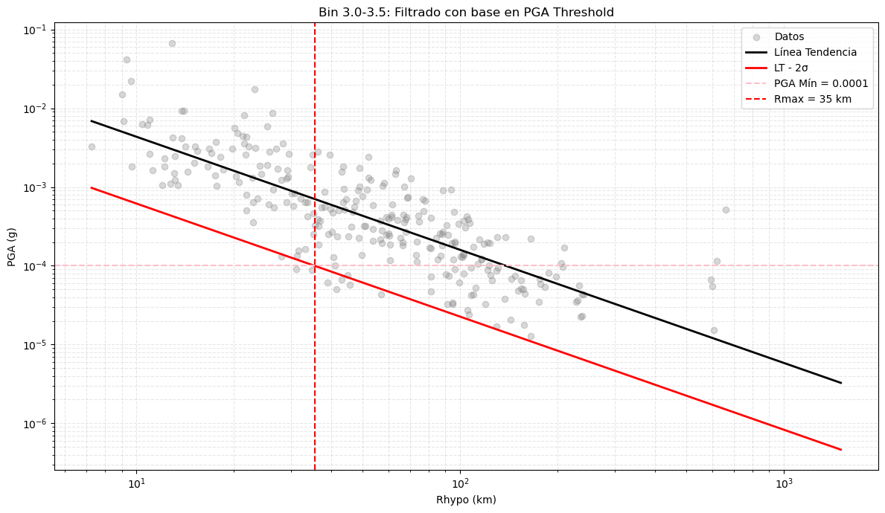
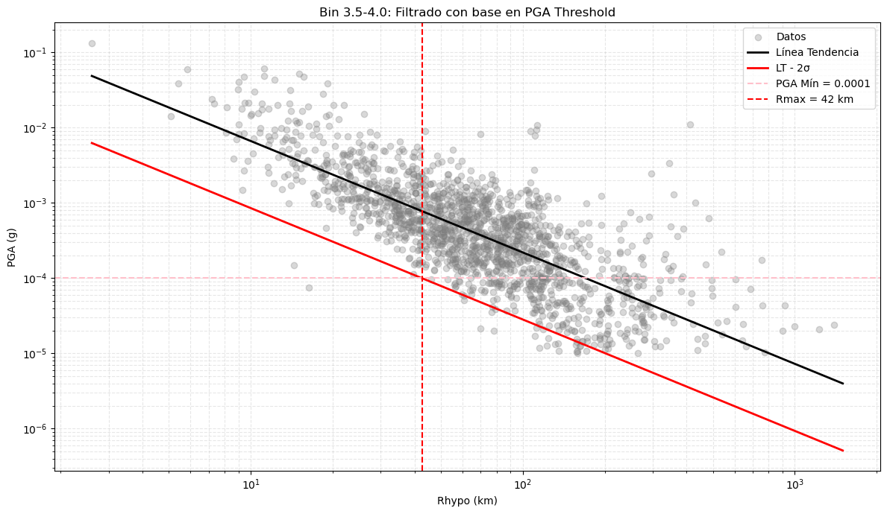
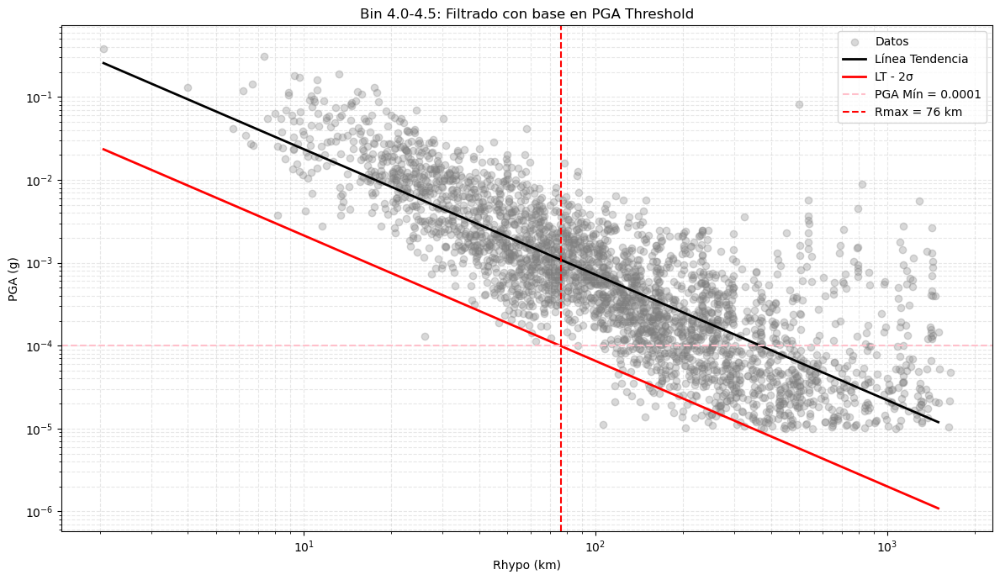
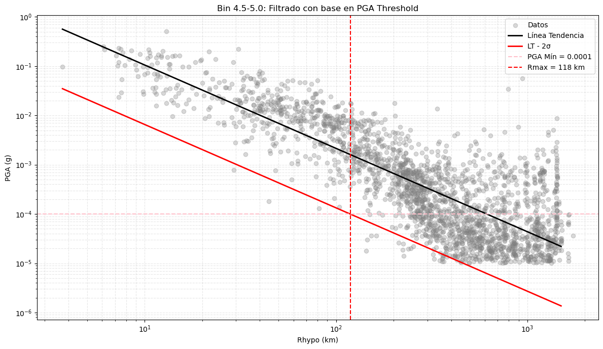
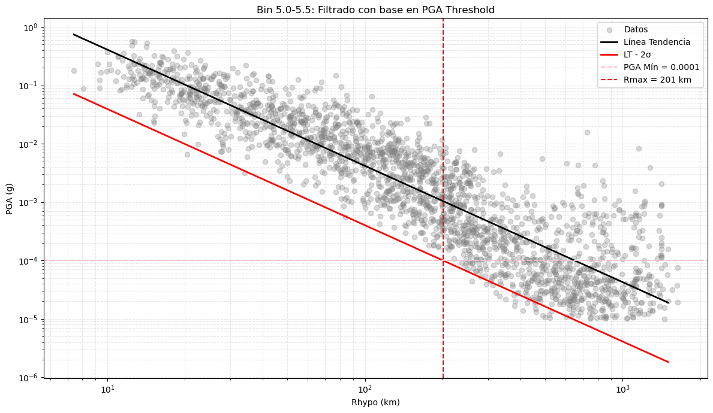
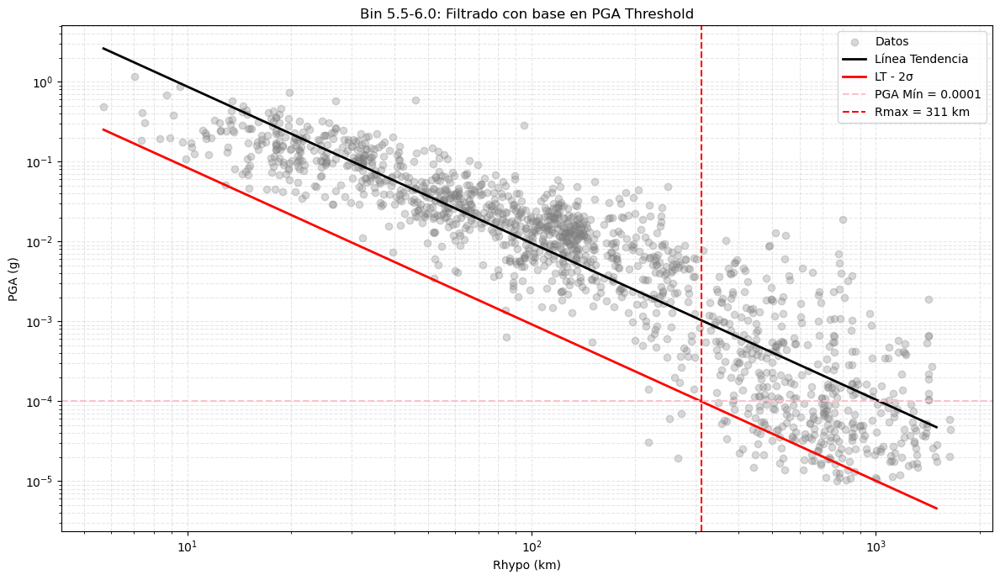
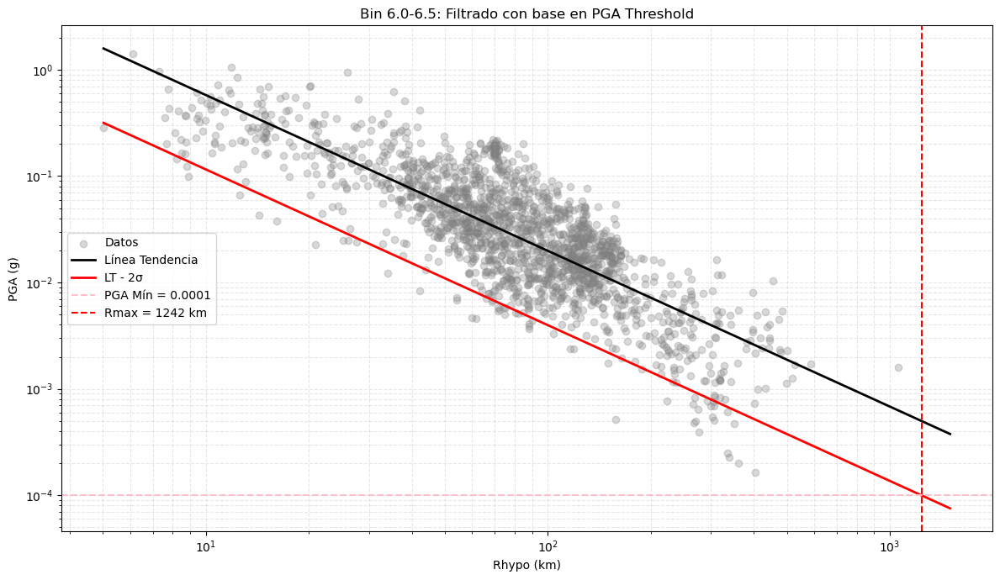
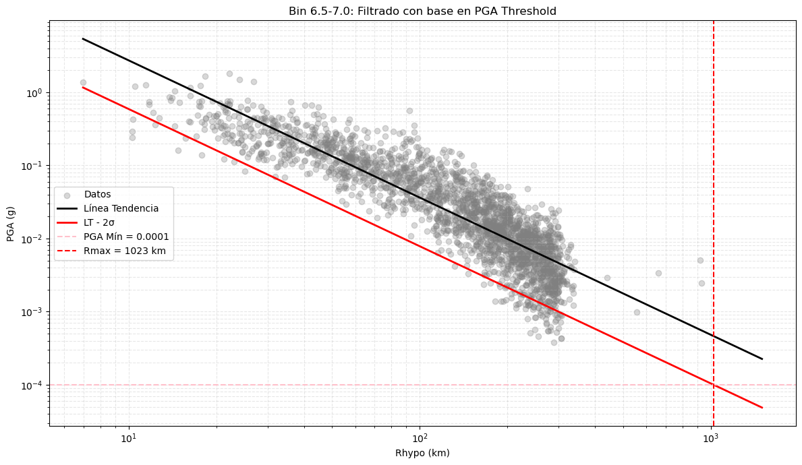
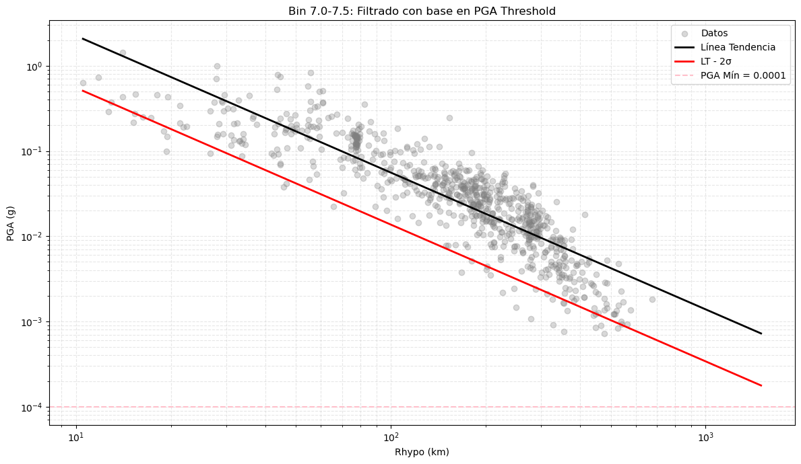
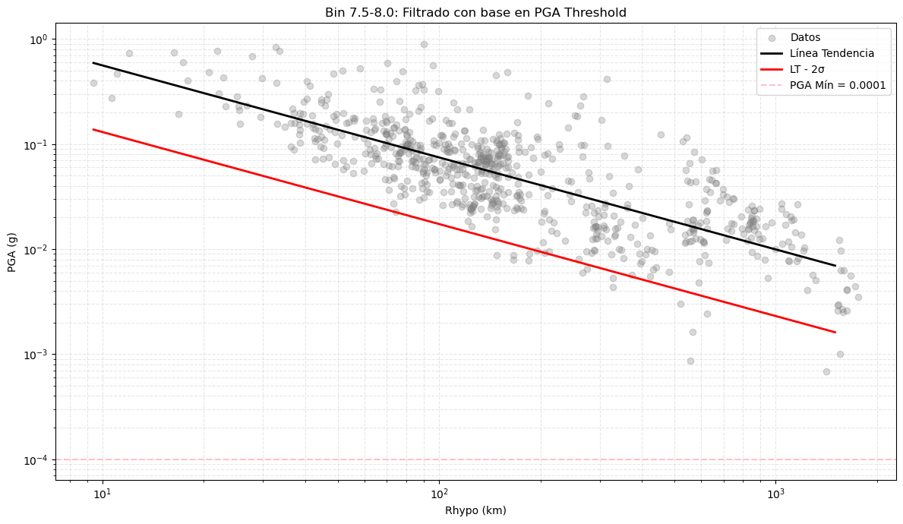
Resultados Rmax por bin:
3.0-3.5: 35.62906404860754
3.5-4.0: 42.79466013240592
4.0-4.5: 76.0450541153358
4.5-5.0: 118.97322286109743
5.0-5.5: 201.11636081673532
5.5-6.0: 311.2590138828386
6.0-6.5: 1242.5723936272595
6.5-7.0: 1023.9824377662434
7.0-7.5: None
7.5-8.0: None
# Filtrar cada bin con su respectivo Rmax
df30_35 = df_30_35[df_30_35['Rhypo_OpenQuake'] <= Rmax_results["3.0-3.5"]]
df35_40 = df_35_40[df_35_40['Rhypo_OpenQuake'] <= Rmax_results["3.5-4.0"]]
df40_45 = df_40_45[df_40_45['Rhypo_OpenQuake'] <= Rmax_results["4.0-4.5"]]
df45_50 = df_45_50[df_45_50['Rhypo_OpenQuake'] <= Rmax_results["4.5-5.0"]]
df50_55 = df_50_55[df_50_55['Rhypo_OpenQuake'] <= Rmax_results["5.0-5.5"]]
df55_60 = df_55_60[df_55_60['Rhypo_OpenQuake'] <= Rmax_results["5.5-6.0"]]
df60_65 = df_60_65[df_60_65['Rhypo_OpenQuake'] <= Rmax_results["6.0-6.5"]]
df65_70 = df_65_70[df_65_70['Rhypo_OpenQuake'] <= Rmax_results["6.5-7.0"]]
#df70_75 = df_70_75[df_70_75['Rhypo_OpenQuake'] <= Rmax_results["7.0-7.5"]]
#df75_80 = df_75_80[df_75_80['Rhypo_OpenQuake'] <= Rmax_results["7.5-8.0"]]
df70_75 = df_70_75
df75_80 = df_75_80
# Concatenar todos los bins ya filtrados
df_total2 = pd.concat(
[df30_35, df35_40, df40_45, df45_50, df50_55,
df55_60, df60_65, df65_70, df70_75, df75_80],
ignore_index=True
)
# Copiar y aplicar filtro final de PGA
df_total = df_total2.copy()
df_total = df_total[df_total['T_0.01_RotD50'] > 1e-4]
df_total
| Hypocenter Depth (km) | Magnitude | Rhypo_OpenQuake | Rrup_OpenQuake | Soil_Class | Tmax | T_0.01_RotD50 | T_0.02_RotD50 | T_0.03_RotD50 | T_0.04_RotD50 | ... | T_0.75_RotD50 | T_1.0_RotD50 | T_1.5_RotD50 | T_2.0_RotD50 | T_3.0_RotD50 | T_4.0_RotD50 | T_5.0_RotD50 | T_6.0_RotD50 | T_10.0_RotD50 | origen | |
|---|---|---|---|---|---|---|---|---|---|---|---|---|---|---|---|---|---|---|---|---|---|
| 0 | 7.213 | 3.4 | 12.75630 | 12.22 | 2 | 0.808081 | 0.001092 | 0.001078 | 0.001453 | 0.002399 | ... | 0.000467 | 0.000183 | NaN | NaN | NaN | NaN | NaN | NaN | NaN | NGAW2 |
| 1 | 7.213 | 3.4 | 27.33596 | 27.03 | 3 | 1.081081 | 0.001714 | 0.001696 | 0.001745 | 0.002034 | ... | 0.000513 | 0.000254 | 0.000067 | NaN | NaN | NaN | NaN | NaN | NaN | NGAW2 |
| 2 | 7.213 | 3.4 | 35.07003 | 34.85 | 3 | 1.081081 | 0.002577 | 0.002538 | 0.002716 | 0.003008 | ... | 0.000491 | 0.000322 | 0.000082 | NaN | NaN | NaN | NaN | NaN | NaN | NGAW2 |
| 3 | 7.213 | 3.4 | 20.55230 | 20.07 | 3 | 1.333333 | 0.004874 | 0.005332 | 0.006315 | 0.008871 | ... | 0.000329 | 0.000171 | 0.000060 | NaN | NaN | NaN | NaN | NaN | NaN | NGAW2 |
| 4 | 8.469 | 3.4 | 12.84512 | 12.51 | 3 | 1.666667 | 0.067464 | 0.071776 | 0.104458 | 0.115679 | ... | 0.001890 | 0.001022 | 0.000448 | 0.000245 | NaN | NaN | NaN | NaN | NaN | NGAW2 |
| ... | ... | ... | ... | ... | ... | ... | ... | ... | ... | ... | ... | ... | ... | ... | ... | ... | ... | ... | ... | ... | ... |
| 10241 | 10.040 | 7.9 | 609.00000 | 441.95 | 3 | 20.000000 | 0.011848 | 0.011885 | 0.011950 | 0.012048 | ... | 0.016969 | 0.013162 | 0.011378 | 0.012016 | 0.007713 | 0.007323 | 0.009168 | 0.011108 | 0.005309 | NGAW2 |
| 10242 | 10.040 | 7.9 | 537.99000 | 362.18 | 3 | 26.666667 | 0.013792 | 0.013822 | 0.013872 | 0.013959 | ... | 0.025694 | 0.023990 | 0.015413 | 0.018298 | 0.011543 | 0.008223 | 0.008980 | 0.008458 | 0.005573 | NGAW2 |
| 10243 | 10.040 | 7.9 | 540.10000 | 376.08 | 2 | 26.666667 | 0.011857 | 0.011864 | 0.011873 | 0.011891 | ... | 0.027657 | 0.025381 | 0.019319 | 0.020109 | 0.007606 | 0.005916 | 0.006102 | 0.008619 | 0.006396 | NGAW2 |
| 10244 | 10.040 | 7.9 | 556.05000 | 416.48 | 3 | 13.333333 | 0.011815 | 0.011839 | 0.011880 | 0.011948 | ... | 0.014408 | 0.019274 | 0.011439 | 0.008004 | 0.006273 | 0.004877 | 0.004101 | 0.006534 | 0.004158 | NGAW2 |
| 10245 | 10.040 | 7.9 | 586.39000 | 428.78 | 3 | 20.000000 | 0.016647 | 0.016672 | 0.016724 | 0.016814 | ... | 0.035856 | 0.024890 | 0.041314 | 0.026555 | 0.014955 | 0.014360 | 0.016018 | 0.014683 | 0.009733 | NGAW2 |
10239 rows × 29 columns
df_total.drop(columns=['Rhypo_OpenQuake'], inplace=True)
df_total[Sa_Crustal]=np.log(df_total[Sa_Crustal])
df_total["Rrup_OpenQuake"]=np.log(df_total["Rrup_OpenQuake"])
# 1) Detectar columnas de periodos
cols_T = [c for c in df_total.columns if re.match(r'^T_\d+(\.\d+)?_RotD50$', c)]
# 2) Extraer el valor del periodo de cada columna (float)
def col_to_T(c):
# de 'T_0.01_RotD50' -> 0.01
return float(c.split('_')[1])
periods = np.array([col_to_T(c) for c in cols_T]) # shape (nT,)
# 3) Construir máscara por-fila: True donde T > Tmax (invalidar)
Tmax = df_total['Tmax'].to_numpy().reshape(-1, 1) # shape (n,1)
mask = periods.reshape(1, -1) > Tmax # shape (n, nT)
# 4) Aplicar NaN solo en los inválidos (¡sin loops!)
df_total.loc[:, cols_T] = df_total.loc[:, cols_T].mask(mask)
Modelamiento#
import numpy as np
import pandas as pd
import tensorflow as tf
from tensorflow.keras import layers, Model, Input
from sklearn.model_selection import train_test_split
from sklearn.pipeline import Pipeline
from sklearn.preprocessing import StandardScaler, OneHotEncoder
from sklearn.compose import ColumnTransformer
def masked_mse(y_true, y_pred):
"""
MSE que ignora los NaN de y_true.
Promedia por muestra (solo sobre entradas válidas) y luego promedia el batch.
"""
# máscara: 1 donde y_true es válido, 0 donde es NaN
mask = tf.cast(~tf.math.is_nan(y_true), tf.float32)
# reemplaza NaN por 0 (no afecta porque se multiplica por mask)
y_true_f = tf.where(tf.math.is_nan(y_true), tf.zeros_like(y_true), y_true)
# error cuadrático por elemento y enmascarado
se = tf.square(y_pred - y_true_f) * mask
# ejes a reducir (todos menos el batch: 0)
reduce_axes = tf.range(1, tf.rank(y_true))
# suma de errores y conteo de válidos por muestra
se_sum = tf.reduce_sum(se, axis=reduce_axes)
n_valid = tf.reduce_sum(mask, axis=reduce_axes)
# MSE por muestra (evitando división por cero)
mse_per_sample = se_sum / (n_valid + 1e-8)
# promedio del batch
return tf.reduce_mean(mse_per_sample)
def masked_mae(y_true, y_pred):
mask = tf.cast(~tf.math.is_nan(y_true), tf.float32)
y_true_f = tf.where(tf.math.is_nan(y_true), tf.zeros_like(y_true), y_true)
ae = tf.abs(y_pred - y_true_f) * mask
reduce_axes = tf.range(1, tf.rank(y_true))
ae_sum = tf.reduce_sum(ae, axis=reduce_axes)
n_valid = tf.reduce_sum(mask, axis=reduce_axes)
mae_per_sample = ae_sum / (n_valid + 1e-8)
return tf.reduce_mean(mae_per_sample)
inputs = ['Magnitude', 'Rrup_OpenQuake', 'Hypocenter Depth (km)', 'Soil_Class','origen']
outputs = Sa_Crustal
num_features = ['Magnitude', 'Rrup_OpenQuake', 'Hypocenter Depth (km)']
cat_features = ['Soil_Class', 'origen']
df_total[cat_features] = df_total[cat_features].astype(str)
X = df_total[inputs]
y = df_total[Sa_Crustal]
X_train, X_tmp, y_train, y_tmp = train_test_split(
X, y, test_size=0.30, random_state=0, shuffle=True
)
X_val, X_test, y_val, y_test = train_test_split(
X_tmp, y_tmp, test_size=0.50, random_state=0, shuffle=True
)
num_pipe = Pipeline(steps=[
("scaler", StandardScaler(with_mean=True, with_std=True))
])
cat_pipe = Pipeline(steps=[
("ohe", OneHotEncoder(handle_unknown="ignore", sparse_output=False))
])
pre = ColumnTransformer(
transformers=[
("num", num_pipe, num_features),
("cat", cat_pipe, cat_features)
],
remainder="drop",
sparse_threshold=0.0
)
X_train_feats = pre.fit_transform(X_train)
X_val_feats = pre.transform(X_val)
X_test_feats = pre.transform(X_test)
Multilayers Perceptron#
import tensorflow as tf
from tensorflow.keras import layers, callbacks, optimizers, Sequential
# Semilla (opcional)
tf.keras.utils.set_random_seed(42)
try:
tf.config.experimental.enable_op_determinism()
except:
pass
n_features = X_train_feats.shape[1]
modelMLP = Sequential([
layers.Input(shape=(n_features,)),
layers.Dense(128, activation="relu"),
layers.BatchNormalization(),
#layers.Dropout(0.15),
layers.Dense(64, activation="relu"),
layers.BatchNormalization(),
#layers.Dropout(0.15),
layers.Dense(len(Sa_Crustal), activation=None) # regresión
])
modelMLP.compile(
optimizer=optimizers.Adam(learning_rate=1e-3),
loss=masked_mse,
metrics=[masked_mae
#"mae","mse"
]
)
es = callbacks.EarlyStopping(monitor="val_loss", patience=20, restore_best_weights=True)
rlr = callbacks.ReduceLROnPlateau(monitor="val_loss", factor=0.5, patience=8, min_lr=1e-6)
history = modelMLP.fit(
X_train_feats, y_train,
validation_data=(X_val_feats, y_val),
epochs=400,
batch_size=64,
callbacks=[es, rlr],
verbose=1
)
print("Test:", modelMLP.evaluate(X_test_feats, y_test, verbose=0))
y_pred = modelMLP.predict(X_test_feats).ravel()
Epoch 1/400
112/112 [==============================] - 2s 7ms/step - loss: 17.2573 - masked_mae: 3.8324 - val_loss: 15.6864 - val_masked_mae: 3.5845 - lr: 0.0010
Epoch 2/400
112/112 [==============================] - 1s 5ms/step - loss: 6.9471 - masked_mae: 2.1470 - val_loss: 3.9115 - val_masked_mae: 1.5326 - lr: 0.0010
Epoch 3/400
112/112 [==============================] - 1s 5ms/step - loss: 1.6778 - masked_mae: 0.8862 - val_loss: 1.4913 - val_masked_mae: 0.9231 - lr: 0.0010
Epoch 4/400
112/112 [==============================] - 1s 5ms/step - loss: 1.0004 - masked_mae: 0.7268 - val_loss: 0.8827 - val_masked_mae: 0.7254 - lr: 0.0010
Epoch 5/400
112/112 [==============================] - 1s 5ms/step - loss: 0.8390 - masked_mae: 0.6931 - val_loss: 0.6847 - val_masked_mae: 0.6460 - lr: 0.0010
Epoch 6/400
112/112 [==============================] - 1s 5ms/step - loss: 0.7416 - masked_mae: 0.6632 - val_loss: 0.6454 - val_masked_mae: 0.6325 - lr: 0.0010
Epoch 7/400
112/112 [==============================] - 1s 5ms/step - loss: 0.7314 - masked_mae: 0.6635 - val_loss: 0.6312 - val_masked_mae: 0.6274 - lr: 0.0010
Epoch 8/400
112/112 [==============================] - 1s 5ms/step - loss: 0.6869 - masked_mae: 0.6471 - val_loss: 0.6415 - val_masked_mae: 0.6309 - lr: 0.0010
Epoch 9/400
112/112 [==============================] - 1s 5ms/step - loss: 0.6813 - masked_mae: 0.6450 - val_loss: 0.6086 - val_masked_mae: 0.6110 - lr: 0.0010
Epoch 10/400
112/112 [==============================] - 1s 5ms/step - loss: 0.6750 - masked_mae: 0.6447 - val_loss: 0.6163 - val_masked_mae: 0.6182 - lr: 0.0010
Epoch 11/400
112/112 [==============================] - 1s 6ms/step - loss: 0.6628 - masked_mae: 0.6400 - val_loss: 0.6044 - val_masked_mae: 0.6121 - lr: 0.0010
Epoch 12/400
112/112 [==============================] - 1s 5ms/step - loss: 0.6454 - masked_mae: 0.6313 - val_loss: 0.5770 - val_masked_mae: 0.5999 - lr: 0.0010
Epoch 13/400
112/112 [==============================] - 1s 6ms/step - loss: 0.6498 - masked_mae: 0.6320 - val_loss: 0.6198 - val_masked_mae: 0.6201 - lr: 0.0010
Epoch 14/400
112/112 [==============================] - 1s 5ms/step - loss: 0.6615 - masked_mae: 0.6393 - val_loss: 0.6022 - val_masked_mae: 0.6095 - lr: 0.0010
Epoch 15/400
112/112 [==============================] - 1s 5ms/step - loss: 0.6194 - masked_mae: 0.6199 - val_loss: 0.5731 - val_masked_mae: 0.5997 - lr: 0.0010
Epoch 16/400
112/112 [==============================] - 1s 5ms/step - loss: 0.6394 - masked_mae: 0.6281 - val_loss: 0.6063 - val_masked_mae: 0.6138 - lr: 0.0010
Epoch 17/400
112/112 [==============================] - 1s 5ms/step - loss: 0.6250 - masked_mae: 0.6244 - val_loss: 0.5615 - val_masked_mae: 0.5893 - lr: 0.0010
Epoch 18/400
112/112 [==============================] - 1s 5ms/step - loss: 0.6217 - masked_mae: 0.6204 - val_loss: 0.5566 - val_masked_mae: 0.5863 - lr: 0.0010
Epoch 19/400
112/112 [==============================] - 1s 6ms/step - loss: 0.6221 - masked_mae: 0.6207 - val_loss: 0.5772 - val_masked_mae: 0.5951 - lr: 0.0010
Epoch 20/400
112/112 [==============================] - 1s 6ms/step - loss: 0.6085 - masked_mae: 0.6118 - val_loss: 0.5947 - val_masked_mae: 0.6069 - lr: 0.0010
Epoch 21/400
112/112 [==============================] - 1s 5ms/step - loss: 0.6200 - masked_mae: 0.6209 - val_loss: 0.5544 - val_masked_mae: 0.5879 - lr: 0.0010
Epoch 22/400
112/112 [==============================] - 1s 5ms/step - loss: 0.6141 - masked_mae: 0.6164 - val_loss: 0.5620 - val_masked_mae: 0.5884 - lr: 0.0010
Epoch 23/400
112/112 [==============================] - 1s 5ms/step - loss: 0.6180 - masked_mae: 0.6170 - val_loss: 0.5561 - val_masked_mae: 0.5851 - lr: 0.0010
Epoch 24/400
112/112 [==============================] - 1s 5ms/step - loss: 0.6352 - masked_mae: 0.6277 - val_loss: 0.5595 - val_masked_mae: 0.5897 - lr: 0.0010
Epoch 25/400
112/112 [==============================] - 1s 5ms/step - loss: 0.6128 - masked_mae: 0.6155 - val_loss: 0.5693 - val_masked_mae: 0.5916 - lr: 0.0010
Epoch 26/400
112/112 [==============================] - 1s 5ms/step - loss: 0.5905 - masked_mae: 0.6035 - val_loss: 0.5530 - val_masked_mae: 0.5824 - lr: 0.0010
Epoch 27/400
112/112 [==============================] - 1s 5ms/step - loss: 0.6131 - masked_mae: 0.6148 - val_loss: 0.5531 - val_masked_mae: 0.5839 - lr: 0.0010
Epoch 28/400
112/112 [==============================] - 1s 5ms/step - loss: 0.6001 - masked_mae: 0.6084 - val_loss: 0.5839 - val_masked_mae: 0.5982 - lr: 0.0010
Epoch 29/400
112/112 [==============================] - 1s 5ms/step - loss: 0.5957 - masked_mae: 0.6070 - val_loss: 0.5764 - val_masked_mae: 0.5948 - lr: 0.0010
Epoch 30/400
112/112 [==============================] - 1s 5ms/step - loss: 0.5957 - masked_mae: 0.6068 - val_loss: 0.5403 - val_masked_mae: 0.5757 - lr: 0.0010
Epoch 31/400
112/112 [==============================] - 1s 5ms/step - loss: 0.5956 - masked_mae: 0.6065 - val_loss: 0.5578 - val_masked_mae: 0.5835 - lr: 0.0010
Epoch 32/400
112/112 [==============================] - 1s 5ms/step - loss: 0.5966 - masked_mae: 0.6062 - val_loss: 0.5389 - val_masked_mae: 0.5758 - lr: 0.0010
Epoch 33/400
112/112 [==============================] - 1s 5ms/step - loss: 0.5940 - masked_mae: 0.6069 - val_loss: 0.5547 - val_masked_mae: 0.5840 - lr: 0.0010
Epoch 34/400
112/112 [==============================] - 1s 5ms/step - loss: 0.5813 - masked_mae: 0.5969 - val_loss: 0.5520 - val_masked_mae: 0.5805 - lr: 0.0010
Epoch 35/400
112/112 [==============================] - 1s 5ms/step - loss: 0.5920 - masked_mae: 0.6040 - val_loss: 0.5490 - val_masked_mae: 0.5825 - lr: 0.0010
Epoch 36/400
112/112 [==============================] - 1s 5ms/step - loss: 0.5871 - masked_mae: 0.6008 - val_loss: 0.5442 - val_masked_mae: 0.5791 - lr: 0.0010
Epoch 37/400
112/112 [==============================] - 1s 5ms/step - loss: 0.5812 - masked_mae: 0.5992 - val_loss: 0.5586 - val_masked_mae: 0.5904 - lr: 0.0010
Epoch 38/400
112/112 [==============================] - 1s 5ms/step - loss: 0.5865 - masked_mae: 0.6035 - val_loss: 0.5492 - val_masked_mae: 0.5804 - lr: 0.0010
Epoch 39/400
112/112 [==============================] - 1s 5ms/step - loss: 0.5826 - masked_mae: 0.5997 - val_loss: 0.5474 - val_masked_mae: 0.5778 - lr: 0.0010
Epoch 40/400
112/112 [==============================] - 1s 5ms/step - loss: 0.5813 - masked_mae: 0.6005 - val_loss: 0.5586 - val_masked_mae: 0.5853 - lr: 0.0010
Epoch 41/400
112/112 [==============================] - 1s 5ms/step - loss: 0.5637 - masked_mae: 0.5884 - val_loss: 0.5247 - val_masked_mae: 0.5672 - lr: 5.0000e-04
Epoch 42/400
112/112 [==============================] - 1s 5ms/step - loss: 0.5615 - masked_mae: 0.5889 - val_loss: 0.5270 - val_masked_mae: 0.5677 - lr: 5.0000e-04
Epoch 43/400
112/112 [==============================] - 1s 5ms/step - loss: 0.5663 - masked_mae: 0.5915 - val_loss: 0.5285 - val_masked_mae: 0.5681 - lr: 5.0000e-04
Epoch 44/400
112/112 [==============================] - 1s 5ms/step - loss: 0.5721 - masked_mae: 0.5945 - val_loss: 0.5318 - val_masked_mae: 0.5716 - lr: 5.0000e-04
Epoch 45/400
112/112 [==============================] - 1s 5ms/step - loss: 0.5719 - masked_mae: 0.5941 - val_loss: 0.5351 - val_masked_mae: 0.5733 - lr: 5.0000e-04
Epoch 46/400
112/112 [==============================] - 1s 5ms/step - loss: 0.5739 - masked_mae: 0.5940 - val_loss: 0.5439 - val_masked_mae: 0.5764 - lr: 5.0000e-04
Epoch 47/400
112/112 [==============================] - 1s 6ms/step - loss: 0.5636 - masked_mae: 0.5902 - val_loss: 0.5384 - val_masked_mae: 0.5741 - lr: 5.0000e-04
Epoch 48/400
112/112 [==============================] - 1s 5ms/step - loss: 0.5515 - masked_mae: 0.5825 - val_loss: 0.5270 - val_masked_mae: 0.5676 - lr: 5.0000e-04
Epoch 49/400
112/112 [==============================] - 1s 5ms/step - loss: 0.5528 - masked_mae: 0.5836 - val_loss: 0.5502 - val_masked_mae: 0.5782 - lr: 5.0000e-04
Epoch 50/400
112/112 [==============================] - 1s 5ms/step - loss: 0.5496 - masked_mae: 0.5811 - val_loss: 0.5228 - val_masked_mae: 0.5647 - lr: 2.5000e-04
Epoch 51/400
112/112 [==============================] - 1s 5ms/step - loss: 0.5457 - masked_mae: 0.5796 - val_loss: 0.5231 - val_masked_mae: 0.5655 - lr: 2.5000e-04
Epoch 52/400
112/112 [==============================] - 1s 5ms/step - loss: 0.5487 - masked_mae: 0.5824 - val_loss: 0.5225 - val_masked_mae: 0.5660 - lr: 2.5000e-04
Epoch 53/400
112/112 [==============================] - 1s 5ms/step - loss: 0.5390 - masked_mae: 0.5766 - val_loss: 0.5204 - val_masked_mae: 0.5645 - lr: 2.5000e-04
Epoch 54/400
112/112 [==============================] - 1s 5ms/step - loss: 0.5406 - masked_mae: 0.5760 - val_loss: 0.5211 - val_masked_mae: 0.5654 - lr: 2.5000e-04
Epoch 55/400
112/112 [==============================] - 1s 5ms/step - loss: 0.5455 - masked_mae: 0.5804 - val_loss: 0.5193 - val_masked_mae: 0.5627 - lr: 2.5000e-04
Epoch 56/400
112/112 [==============================] - 1s 5ms/step - loss: 0.5449 - masked_mae: 0.5792 - val_loss: 0.5235 - val_masked_mae: 0.5658 - lr: 2.5000e-04
Epoch 57/400
112/112 [==============================] - 1s 5ms/step - loss: 0.5473 - masked_mae: 0.5809 - val_loss: 0.5205 - val_masked_mae: 0.5637 - lr: 2.5000e-04
Epoch 58/400
112/112 [==============================] - 1s 5ms/step - loss: 0.5461 - masked_mae: 0.5782 - val_loss: 0.5180 - val_masked_mae: 0.5632 - lr: 2.5000e-04
Epoch 59/400
112/112 [==============================] - 1s 5ms/step - loss: 0.5331 - masked_mae: 0.5728 - val_loss: 0.5190 - val_masked_mae: 0.5624 - lr: 2.5000e-04
Epoch 60/400
112/112 [==============================] - 1s 5ms/step - loss: 0.5332 - masked_mae: 0.5715 - val_loss: 0.5248 - val_masked_mae: 0.5639 - lr: 2.5000e-04
Epoch 61/400
112/112 [==============================] - 1s 5ms/step - loss: 0.5453 - masked_mae: 0.5774 - val_loss: 0.5198 - val_masked_mae: 0.5627 - lr: 2.5000e-04
Epoch 62/400
112/112 [==============================] - 1s 5ms/step - loss: 0.5385 - masked_mae: 0.5760 - val_loss: 0.5156 - val_masked_mae: 0.5613 - lr: 2.5000e-04
Epoch 63/400
112/112 [==============================] - 1s 5ms/step - loss: 0.5417 - masked_mae: 0.5789 - val_loss: 0.5227 - val_masked_mae: 0.5648 - lr: 2.5000e-04
Epoch 64/400
112/112 [==============================] - 1s 5ms/step - loss: 0.5527 - masked_mae: 0.5837 - val_loss: 0.5157 - val_masked_mae: 0.5607 - lr: 2.5000e-04
Epoch 65/400
112/112 [==============================] - 1s 6ms/step - loss: 0.5514 - masked_mae: 0.5819 - val_loss: 0.5168 - val_masked_mae: 0.5607 - lr: 2.5000e-04
Epoch 66/400
112/112 [==============================] - 1s 5ms/step - loss: 0.5409 - masked_mae: 0.5768 - val_loss: 0.5242 - val_masked_mae: 0.5641 - lr: 2.5000e-04
Epoch 67/400
112/112 [==============================] - 1s 5ms/step - loss: 0.5576 - masked_mae: 0.5858 - val_loss: 0.5187 - val_masked_mae: 0.5616 - lr: 2.5000e-04
Epoch 68/400
112/112 [==============================] - 1s 5ms/step - loss: 0.5493 - masked_mae: 0.5809 - val_loss: 0.5158 - val_masked_mae: 0.5605 - lr: 2.5000e-04
Epoch 69/400
112/112 [==============================] - 1s 6ms/step - loss: 0.5439 - masked_mae: 0.5780 - val_loss: 0.5155 - val_masked_mae: 0.5615 - lr: 2.5000e-04
Epoch 70/400
112/112 [==============================] - 1s 5ms/step - loss: 0.5508 - masked_mae: 0.5833 - val_loss: 0.5179 - val_masked_mae: 0.5620 - lr: 2.5000e-04
Epoch 71/400
112/112 [==============================] - 1s 5ms/step - loss: 0.5405 - masked_mae: 0.5760 - val_loss: 0.5223 - val_masked_mae: 0.5625 - lr: 2.5000e-04
Epoch 72/400
112/112 [==============================] - 1s 5ms/step - loss: 0.5367 - masked_mae: 0.5758 - val_loss: 0.5186 - val_masked_mae: 0.5610 - lr: 2.5000e-04
Epoch 73/400
112/112 [==============================] - 1s 5ms/step - loss: 0.5441 - masked_mae: 0.5799 - val_loss: 0.5164 - val_masked_mae: 0.5599 - lr: 2.5000e-04
Epoch 74/400
112/112 [==============================] - 1s 5ms/step - loss: 0.5540 - masked_mae: 0.5832 - val_loss: 0.5166 - val_masked_mae: 0.5610 - lr: 2.5000e-04
Epoch 75/400
112/112 [==============================] - 1s 5ms/step - loss: 0.5547 - masked_mae: 0.5861 - val_loss: 0.5259 - val_masked_mae: 0.5634 - lr: 2.5000e-04
Epoch 76/400
112/112 [==============================] - 1s 5ms/step - loss: 0.5417 - masked_mae: 0.5782 - val_loss: 0.5146 - val_masked_mae: 0.5602 - lr: 2.5000e-04
Epoch 77/400
112/112 [==============================] - 1s 5ms/step - loss: 0.5395 - masked_mae: 0.5760 - val_loss: 0.5270 - val_masked_mae: 0.5648 - lr: 2.5000e-04
Epoch 78/400
112/112 [==============================] - 1s 5ms/step - loss: 0.5335 - masked_mae: 0.5730 - val_loss: 0.5134 - val_masked_mae: 0.5599 - lr: 2.5000e-04
Epoch 79/400
112/112 [==============================] - 1s 5ms/step - loss: 0.5381 - masked_mae: 0.5747 - val_loss: 0.5128 - val_masked_mae: 0.5603 - lr: 2.5000e-04
Epoch 80/400
112/112 [==============================] - 1s 5ms/step - loss: 0.5374 - masked_mae: 0.5750 - val_loss: 0.5185 - val_masked_mae: 0.5607 - lr: 2.5000e-04
Epoch 81/400
112/112 [==============================] - 1s 5ms/step - loss: 0.5395 - masked_mae: 0.5750 - val_loss: 0.5220 - val_masked_mae: 0.5618 - lr: 2.5000e-04
Epoch 82/400
112/112 [==============================] - 1s 5ms/step - loss: 0.5361 - masked_mae: 0.5744 - val_loss: 0.5127 - val_masked_mae: 0.5586 - lr: 2.5000e-04
Epoch 83/400
112/112 [==============================] - 1s 5ms/step - loss: 0.5370 - masked_mae: 0.5746 - val_loss: 0.5154 - val_masked_mae: 0.5593 - lr: 2.5000e-04
Epoch 84/400
112/112 [==============================] - 1s 5ms/step - loss: 0.5381 - masked_mae: 0.5739 - val_loss: 0.5205 - val_masked_mae: 0.5615 - lr: 2.5000e-04
Epoch 85/400
112/112 [==============================] - 1s 5ms/step - loss: 0.5407 - masked_mae: 0.5770 - val_loss: 0.5159 - val_masked_mae: 0.5602 - lr: 2.5000e-04
Epoch 86/400
112/112 [==============================] - 1s 5ms/step - loss: 0.5318 - masked_mae: 0.5711 - val_loss: 0.5128 - val_masked_mae: 0.5585 - lr: 2.5000e-04
Epoch 87/400
112/112 [==============================] - 1s 5ms/step - loss: 0.5225 - masked_mae: 0.5669 - val_loss: 0.5184 - val_masked_mae: 0.5619 - lr: 2.5000e-04
Epoch 88/400
112/112 [==============================] - 1s 5ms/step - loss: 0.5286 - masked_mae: 0.5694 - val_loss: 0.5149 - val_masked_mae: 0.5584 - lr: 2.5000e-04
Epoch 89/400
112/112 [==============================] - 1s 5ms/step - loss: 0.5369 - masked_mae: 0.5749 - val_loss: 0.5202 - val_masked_mae: 0.5601 - lr: 2.5000e-04
Epoch 90/400
112/112 [==============================] - 1s 5ms/step - loss: 0.5359 - masked_mae: 0.5733 - val_loss: 0.5133 - val_masked_mae: 0.5587 - lr: 2.5000e-04
Epoch 91/400
112/112 [==============================] - 1s 5ms/step - loss: 0.5288 - masked_mae: 0.5704 - val_loss: 0.5125 - val_masked_mae: 0.5567 - lr: 1.2500e-04
Epoch 92/400
112/112 [==============================] - 1s 5ms/step - loss: 0.5265 - masked_mae: 0.5687 - val_loss: 0.5121 - val_masked_mae: 0.5576 - lr: 1.2500e-04
Epoch 93/400
112/112 [==============================] - 1s 5ms/step - loss: 0.5285 - masked_mae: 0.5707 - val_loss: 0.5102 - val_masked_mae: 0.5562 - lr: 1.2500e-04
Epoch 94/400
112/112 [==============================] - 1s 6ms/step - loss: 0.5202 - masked_mae: 0.5667 - val_loss: 0.5149 - val_masked_mae: 0.5584 - lr: 1.2500e-04
Epoch 95/400
112/112 [==============================] - 1s 5ms/step - loss: 0.5306 - masked_mae: 0.5715 - val_loss: 0.5132 - val_masked_mae: 0.5575 - lr: 1.2500e-04
Epoch 96/400
112/112 [==============================] - 1s 5ms/step - loss: 0.5362 - masked_mae: 0.5737 - val_loss: 0.5126 - val_masked_mae: 0.5579 - lr: 1.2500e-04
Epoch 97/400
112/112 [==============================] - 1s 5ms/step - loss: 0.5250 - masked_mae: 0.5687 - val_loss: 0.5112 - val_masked_mae: 0.5573 - lr: 1.2500e-04
Epoch 98/400
112/112 [==============================] - 1s 5ms/step - loss: 0.5312 - masked_mae: 0.5703 - val_loss: 0.5099 - val_masked_mae: 0.5570 - lr: 1.2500e-04
Epoch 99/400
112/112 [==============================] - 1s 5ms/step - loss: 0.5330 - masked_mae: 0.5719 - val_loss: 0.5108 - val_masked_mae: 0.5575 - lr: 1.2500e-04
Epoch 100/400
112/112 [==============================] - 1s 6ms/step - loss: 0.5345 - masked_mae: 0.5732 - val_loss: 0.5145 - val_masked_mae: 0.5583 - lr: 1.2500e-04
Epoch 101/400
112/112 [==============================] - 1s 5ms/step - loss: 0.5251 - masked_mae: 0.5668 - val_loss: 0.5110 - val_masked_mae: 0.5564 - lr: 1.2500e-04
Epoch 102/400
112/112 [==============================] - 1s 5ms/step - loss: 0.5298 - masked_mae: 0.5707 - val_loss: 0.5070 - val_masked_mae: 0.5546 - lr: 1.2500e-04
Epoch 103/400
112/112 [==============================] - 1s 5ms/step - loss: 0.5201 - masked_mae: 0.5640 - val_loss: 0.5100 - val_masked_mae: 0.5566 - lr: 1.2500e-04
Epoch 104/400
112/112 [==============================] - 1s 5ms/step - loss: 0.5261 - masked_mae: 0.5688 - val_loss: 0.5139 - val_masked_mae: 0.5583 - lr: 1.2500e-04
Epoch 105/400
112/112 [==============================] - 1s 5ms/step - loss: 0.5243 - masked_mae: 0.5674 - val_loss: 0.5110 - val_masked_mae: 0.5564 - lr: 1.2500e-04
Epoch 106/400
112/112 [==============================] - 1s 5ms/step - loss: 0.5188 - masked_mae: 0.5645 - val_loss: 0.5098 - val_masked_mae: 0.5559 - lr: 1.2500e-04
Epoch 107/400
112/112 [==============================] - 1s 5ms/step - loss: 0.5307 - masked_mae: 0.5713 - val_loss: 0.5104 - val_masked_mae: 0.5565 - lr: 1.2500e-04
Epoch 108/400
112/112 [==============================] - 1s 5ms/step - loss: 0.5152 - masked_mae: 0.5626 - val_loss: 0.5084 - val_masked_mae: 0.5553 - lr: 1.2500e-04
Epoch 109/400
112/112 [==============================] - 1s 5ms/step - loss: 0.5269 - masked_mae: 0.5689 - val_loss: 0.5098 - val_masked_mae: 0.5559 - lr: 1.2500e-04
Epoch 110/400
112/112 [==============================] - 1s 5ms/step - loss: 0.5206 - masked_mae: 0.5653 - val_loss: 0.5087 - val_masked_mae: 0.5564 - lr: 1.2500e-04
Epoch 111/400
112/112 [==============================] - 1s 5ms/step - loss: 0.5193 - masked_mae: 0.5639 - val_loss: 0.5090 - val_masked_mae: 0.5556 - lr: 6.2500e-05
Epoch 112/400
112/112 [==============================] - 1s 5ms/step - loss: 0.5172 - masked_mae: 0.5631 - val_loss: 0.5101 - val_masked_mae: 0.5555 - lr: 6.2500e-05
Epoch 113/400
112/112 [==============================] - 1s 5ms/step - loss: 0.5096 - masked_mae: 0.5596 - val_loss: 0.5072 - val_masked_mae: 0.5549 - lr: 6.2500e-05
Epoch 114/400
112/112 [==============================] - 1s 5ms/step - loss: 0.5270 - masked_mae: 0.5684 - val_loss: 0.5081 - val_masked_mae: 0.5553 - lr: 6.2500e-05
Epoch 115/400
112/112 [==============================] - 1s 5ms/step - loss: 0.5297 - masked_mae: 0.5705 - val_loss: 0.5093 - val_masked_mae: 0.5551 - lr: 6.2500e-05
Epoch 116/400
112/112 [==============================] - 1s 5ms/step - loss: 0.5267 - masked_mae: 0.5687 - val_loss: 0.5092 - val_masked_mae: 0.5554 - lr: 6.2500e-05
Epoch 117/400
112/112 [==============================] - 1s 5ms/step - loss: 0.5316 - masked_mae: 0.5708 - val_loss: 0.5081 - val_masked_mae: 0.5548 - lr: 6.2500e-05
Epoch 118/400
112/112 [==============================] - 1s 5ms/step - loss: 0.5298 - masked_mae: 0.5704 - val_loss: 0.5079 - val_masked_mae: 0.5550 - lr: 6.2500e-05
Epoch 119/400
112/112 [==============================] - 1s 5ms/step - loss: 0.5160 - masked_mae: 0.5627 - val_loss: 0.5077 - val_masked_mae: 0.5547 - lr: 3.1250e-05
Epoch 120/400
112/112 [==============================] - 1s 5ms/step - loss: 0.5134 - masked_mae: 0.5622 - val_loss: 0.5072 - val_masked_mae: 0.5544 - lr: 3.1250e-05
Epoch 121/400
112/112 [==============================] - 1s 6ms/step - loss: 0.5252 - masked_mae: 0.5678 - val_loss: 0.5070 - val_masked_mae: 0.5544 - lr: 3.1250e-05
Epoch 122/400
112/112 [==============================] - 1s 5ms/step - loss: 0.5440 - masked_mae: 0.5773 - val_loss: 0.5069 - val_masked_mae: 0.5544 - lr: 3.1250e-05
Epoch 123/400
112/112 [==============================] - 1s 5ms/step - loss: 0.5231 - masked_mae: 0.5674 - val_loss: 0.5081 - val_masked_mae: 0.5548 - lr: 3.1250e-05
Epoch 124/400
112/112 [==============================] - 1s 5ms/step - loss: 0.5260 - masked_mae: 0.5690 - val_loss: 0.5066 - val_masked_mae: 0.5542 - lr: 3.1250e-05
Epoch 125/400
112/112 [==============================] - 1s 5ms/step - loss: 0.5145 - masked_mae: 0.5619 - val_loss: 0.5075 - val_masked_mae: 0.5544 - lr: 3.1250e-05
Epoch 126/400
112/112 [==============================] - 1s 5ms/step - loss: 0.5146 - masked_mae: 0.5618 - val_loss: 0.5067 - val_masked_mae: 0.5543 - lr: 3.1250e-05
Epoch 127/400
112/112 [==============================] - 1s 5ms/step - loss: 0.5309 - masked_mae: 0.5709 - val_loss: 0.5064 - val_masked_mae: 0.5542 - lr: 3.1250e-05
Epoch 128/400
112/112 [==============================] - 1s 5ms/step - loss: 0.5296 - masked_mae: 0.5693 - val_loss: 0.5074 - val_masked_mae: 0.5543 - lr: 3.1250e-05
Epoch 129/400
112/112 [==============================] - 1s 5ms/step - loss: 0.5169 - masked_mae: 0.5632 - val_loss: 0.5075 - val_masked_mae: 0.5546 - lr: 3.1250e-05
Epoch 130/400
112/112 [==============================] - 1s 5ms/step - loss: 0.5224 - masked_mae: 0.5657 - val_loss: 0.5064 - val_masked_mae: 0.5541 - lr: 3.1250e-05
Epoch 131/400
112/112 [==============================] - 1s 5ms/step - loss: 0.5241 - masked_mae: 0.5677 - val_loss: 0.5074 - val_masked_mae: 0.5546 - lr: 3.1250e-05
Epoch 132/400
112/112 [==============================] - 1s 6ms/step - loss: 0.5181 - masked_mae: 0.5645 - val_loss: 0.5079 - val_masked_mae: 0.5548 - lr: 3.1250e-05
Epoch 133/400
112/112 [==============================] - 1s 5ms/step - loss: 0.5367 - masked_mae: 0.5740 - val_loss: 0.5073 - val_masked_mae: 0.5545 - lr: 3.1250e-05
Epoch 134/400
112/112 [==============================] - 1s 5ms/step - loss: 0.5231 - masked_mae: 0.5662 - val_loss: 0.5068 - val_masked_mae: 0.5542 - lr: 3.1250e-05
Epoch 135/400
112/112 [==============================] - 1s 5ms/step - loss: 0.5263 - masked_mae: 0.5676 - val_loss: 0.5069 - val_masked_mae: 0.5543 - lr: 3.1250e-05
Epoch 136/400
112/112 [==============================] - 1s 5ms/step - loss: 0.5217 - masked_mae: 0.5649 - val_loss: 0.5067 - val_masked_mae: 0.5543 - lr: 1.5625e-05
Epoch 137/400
112/112 [==============================] - 1s 6ms/step - loss: 0.5151 - masked_mae: 0.5602 - val_loss: 0.5064 - val_masked_mae: 0.5544 - lr: 1.5625e-05
Epoch 138/400
112/112 [==============================] - 1s 5ms/step - loss: 0.5200 - masked_mae: 0.5653 - val_loss: 0.5061 - val_masked_mae: 0.5541 - lr: 1.5625e-05
Epoch 139/400
112/112 [==============================] - 1s 5ms/step - loss: 0.5163 - masked_mae: 0.5616 - val_loss: 0.5070 - val_masked_mae: 0.5543 - lr: 1.5625e-05
Epoch 140/400
112/112 [==============================] - 1s 5ms/step - loss: 0.5172 - masked_mae: 0.5643 - val_loss: 0.5063 - val_masked_mae: 0.5541 - lr: 1.5625e-05
Epoch 141/400
112/112 [==============================] - 1s 5ms/step - loss: 0.5350 - masked_mae: 0.5746 - val_loss: 0.5069 - val_masked_mae: 0.5543 - lr: 1.5625e-05
Epoch 142/400
112/112 [==============================] - 1s 5ms/step - loss: 0.5160 - masked_mae: 0.5632 - val_loss: 0.5062 - val_masked_mae: 0.5539 - lr: 1.5625e-05
Epoch 143/400
112/112 [==============================] - 1s 5ms/step - loss: 0.5315 - masked_mae: 0.5709 - val_loss: 0.5068 - val_masked_mae: 0.5542 - lr: 1.5625e-05
Epoch 144/400
112/112 [==============================] - 1s 5ms/step - loss: 0.5159 - masked_mae: 0.5635 - val_loss: 0.5069 - val_masked_mae: 0.5541 - lr: 1.5625e-05
Epoch 145/400
112/112 [==============================] - 1s 5ms/step - loss: 0.5179 - masked_mae: 0.5653 - val_loss: 0.5068 - val_masked_mae: 0.5542 - lr: 1.5625e-05
Epoch 146/400
112/112 [==============================] - 1s 5ms/step - loss: 0.5278 - masked_mae: 0.5703 - val_loss: 0.5070 - val_masked_mae: 0.5541 - lr: 1.5625e-05
Epoch 147/400
112/112 [==============================] - 1s 5ms/step - loss: 0.5172 - masked_mae: 0.5645 - val_loss: 0.5069 - val_masked_mae: 0.5540 - lr: 7.8125e-06
Epoch 148/400
112/112 [==============================] - 1s 5ms/step - loss: 0.5152 - masked_mae: 0.5630 - val_loss: 0.5067 - val_masked_mae: 0.5540 - lr: 7.8125e-06
Epoch 149/400
112/112 [==============================] - 1s 5ms/step - loss: 0.5145 - masked_mae: 0.5620 - val_loss: 0.5066 - val_masked_mae: 0.5540 - lr: 7.8125e-06
Epoch 150/400
112/112 [==============================] - 1s 5ms/step - loss: 0.5172 - masked_mae: 0.5632 - val_loss: 0.5064 - val_masked_mae: 0.5541 - lr: 7.8125e-06
Epoch 151/400
112/112 [==============================] - 1s 5ms/step - loss: 0.5237 - masked_mae: 0.5669 - val_loss: 0.5066 - val_masked_mae: 0.5541 - lr: 7.8125e-06
Epoch 152/400
112/112 [==============================] - 1s 5ms/step - loss: 0.5242 - masked_mae: 0.5678 - val_loss: 0.5066 - val_masked_mae: 0.5542 - lr: 7.8125e-06
Epoch 153/400
112/112 [==============================] - 1s 5ms/step - loss: 0.5204 - masked_mae: 0.5649 - val_loss: 0.5066 - val_masked_mae: 0.5542 - lr: 7.8125e-06
Epoch 154/400
112/112 [==============================] - 1s 5ms/step - loss: 0.5255 - masked_mae: 0.5678 - val_loss: 0.5070 - val_masked_mae: 0.5544 - lr: 7.8125e-06
Epoch 155/400
112/112 [==============================] - 1s 5ms/step - loss: 0.5202 - masked_mae: 0.5663 - val_loss: 0.5067 - val_masked_mae: 0.5543 - lr: 3.9063e-06
Epoch 156/400
112/112 [==============================] - 1s 5ms/step - loss: 0.5370 - masked_mae: 0.5749 - val_loss: 0.5066 - val_masked_mae: 0.5543 - lr: 3.9063e-06
Epoch 157/400
112/112 [==============================] - 1s 5ms/step - loss: 0.5298 - masked_mae: 0.5719 - val_loss: 0.5066 - val_masked_mae: 0.5541 - lr: 3.9063e-06
Epoch 158/400
112/112 [==============================] - 1s 5ms/step - loss: 0.5256 - masked_mae: 0.5678 - val_loss: 0.5066 - val_masked_mae: 0.5542 - lr: 3.9063e-06
Test: [0.5193375945091248, 0.5665079951286316]
48/48 [==============================] - 0s 2ms/step
train_loss = history.history.get("loss", [])
val_loss = history.history.get("val_loss", [])
plt.figure(figsize=(20,10))
plt.plot(train_loss, label="Train loss", linewidth=2)
if len(val_loss) > 0:
plt.plot(val_loss, label="Val loss", linewidth=2, linestyle="--")
best = int(np.argmin(val_loss))
plt.scatter(best, val_loss[best], s=60, zorder=3, label=f"Best val @ {best}")
plt.axvline(best, color="gray", linestyle=":", linewidth=1)
plt.xlabel("Epoch")
plt.ylabel("Loss")
plt.title("Curva de pérdida por epoch")
plt.grid(True, linestyle=":")
plt.legend()
plt.tight_layout()
plt.show()
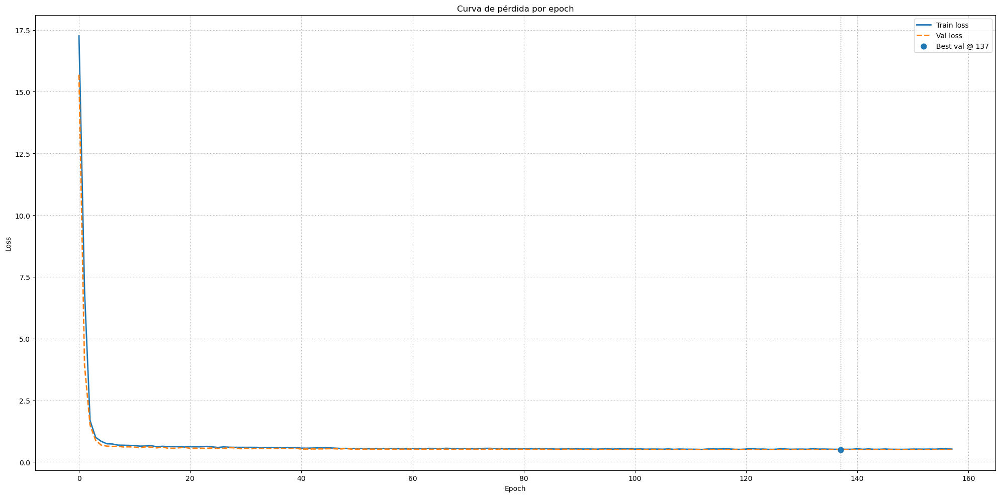
# --- Periodos (ya tienes el array 'periods' definido arriba) ---
# --- Elige el índice de la muestra a graficar ---
i = 10 # cámbialo por la muestra que quieras
# --- Espectros real y predicho (forma (nT,)) ---
y_true_spec = y_test.iloc[i].values # espectro real (array)
y_pred_spec = y_pred[i] if y_pred.ndim == 2 else y_pred.reshape(-1, len(periods))[i] # espectro predicho
# --- Opcional: ignora NaNs del real para comparar sobre los válidos ---
mask = ~np.isnan(y_true_spec)
T = periods[mask]
y_real = y_true_spec[mask]
y_hat = y_pred_spec[mask]
plt.figure(figsize=(7,4))
plt.plot(T, np.exp(y_real), label="Real", linewidth=2)
plt.plot(T, np.exp(y_hat), label="Predicho", linewidth=2, linestyle="--")
# Si prefieres escala log en T o Sa, descomenta:
plt.xscale("log"); plt.yscale("log")
plt.xlabel("Periodo T (s)")
plt.ylabel("Sa")
plt.title("Espectro: Real vs Predicho")
plt.grid(True, which="both", linestyle=":")
plt.legend()
plt.tight_layout()
plt.show()
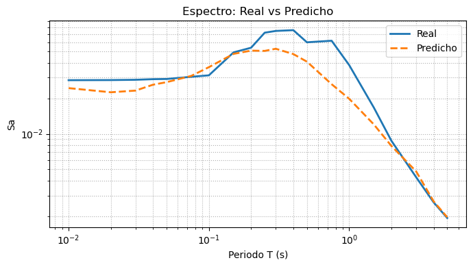
# --- Estandariza a numpy 2D ---
Y_tr = np.asarray(y_train, dtype=float)
Y_va = np.asarray(y_val, dtype=float)
Y_te = np.asarray(y_test, dtype=float)
y_pred_train = np.asarray(modelMLP.predict(X_train_feats))
y_pred_val = np.asarray(modelMLP.predict(X_val_feats))
y_pred_test = np.asarray(modelMLP.predict(X_test_feats))
# Asegura 2D (n, nY)
if Y_tr.ndim == 1: Y_tr = Y_tr.reshape(-1,1)
if Y_va.ndim == 1: Y_va = Y_va.reshape(-1,1)
if Y_te.ndim == 1: Y_te = Y_te.reshape(-1,1)
if y_pred_train.ndim == 1: y_pred_train = y_pred_train.reshape(-1,1)
if y_pred_val.ndim == 1: y_pred_val = y_pred_val.reshape(-1,1)
if y_pred_test.ndim == 1: y_pred_test = y_pred_test.reshape(-1,1)
if y_pred_train.ndim == 3 and y_pred_train.shape[-1] == 1: y_pred_train = y_pred_train[...,0]
if y_pred_val.ndim == 3 and y_pred_val.shape[-1] == 1: y_pred_val = y_pred_val[...,0]
if y_pred_test.ndim == 3 and y_pred_test.shape[-1] == 1: y_pred_test = y_pred_test[...,0]
nY = Y_te.shape[1]
# --- Nombres de salidas ---
try:
y_names = list(cols_T) # si ya definiste tus columnas de periodos
if len(y_names) != nY:
y_names = [f"Y_{j}" for j in range(nY)]
except NameError:
y_names = [f"Y_{j}" for j in range(nY)]
# ========== 1) MÉTRICAS POR Y (TEST) ==========
rows_test = []
for j, name in enumerate(y_names):
y_t = Y_te[:, j]
y_p = y_pred_test[:, j]
mask_valid = np.isfinite(y_t) & np.isfinite(y_p)
if mask_valid.sum() == 0:
mse = rmse = mae = mape = r2 = np.nan
else:
err = y_p[mask_valid] - y_t[mask_valid]
mse = np.mean(err**2)
rmse = np.sqrt(mse)
mae = np.mean(np.abs(err))
mask_mape = (np.abs(y_t) > 1e-12) & mask_valid
mape = np.mean(np.abs((y_p[mask_mape] - y_t[mask_mape]) / y_t[mask_mape])) * 100.0 if mask_mape.sum() else np.nan
y_mean = np.mean(y_t[mask_valid])
ss_res = np.sum((y_t[mask_valid] - y_p[mask_valid])**2)
ss_tot = np.sum((y_t[mask_valid] - y_mean)**2)
r2 = 1.0 - ss_res / (ss_tot + 1e-12)
rows_test.append({"Y": name, "RMSE": rmse, "MSE": mse, "MAE": mae, "MAPE_%": mape, "R2": r2})
df_test_metrics_mlp = pd.DataFrame(rows_test).set_index("Y").sort_index()
df_test_metrics_mlp
224/224 [==============================] - 0s 2ms/step
48/48 [==============================] - 0s 1ms/step
48/48 [==============================] - 0s 998us/step
| RMSE | MSE | MAE | MAPE_% | R2 | |
|---|---|---|---|---|---|
| Y | |||||
| T_0.01_RotD50 | 0.680621 | 0.463245 | 0.531051 | 17.865397 | 0.837102 |
| T_0.02_RotD50 | 0.680081 | 0.462510 | 0.530435 | 17.563576 | 0.837969 |
| T_0.03_RotD50 | 0.682879 | 0.466323 | 0.532993 | 17.702748 | 0.837930 |
| T_0.04_RotD50 | 0.688541 | 0.474088 | 0.536606 | 20.973565 | 0.836069 |
| T_0.05_RotD50 | 0.694381 | 0.482164 | 0.542557 | 21.746900 | 0.835013 |
| T_0.075_RotD50 | 0.728726 | 0.531042 | 0.571218 | 28.416950 | 0.821213 |
| T_0.15_RotD50 | 0.735852 | 0.541479 | 0.573609 | 42.571901 | 0.816810 |
| T_0.1_RotD50 | 0.745202 | 0.555326 | 0.582252 | 34.341878 | 0.813175 |
| T_0.25_RotD50 | 0.735275 | 0.540629 | 0.584269 | 60.883567 | 0.818388 |
| T_0.2_RotD50 | 0.735304 | 0.540672 | 0.576380 | 53.292351 | 0.816871 |
| T_0.3_RotD50 | 0.725320 | 0.526089 | 0.574085 | 46.172516 | 0.825766 |
| T_0.4_RotD50 | 0.713364 | 0.508888 | 0.565284 | 28.911717 | 0.835266 |
| T_0.5_RotD50 | 0.718909 | 0.516830 | 0.567534 | 29.636746 | 0.840335 |
| T_0.75_RotD50 | 0.722991 | 0.522716 | 0.565023 | 38.426560 | 0.853118 |
| T_1.0_RotD50 | 0.732567 | 0.536655 | 0.572349 | 37.254614 | 0.860746 |
| T_1.5_RotD50 | 0.739135 | 0.546321 | 0.580228 | 20.061381 | 0.869075 |
| T_10.0_RotD50 | 0.664009 | 0.440908 | 0.519906 | 8.491732 | 0.870470 |
| T_2.0_RotD50 | 0.741171 | 0.549335 | 0.585867 | 14.679558 | 0.872153 |
| T_3.0_RotD50 | 0.732202 | 0.536119 | 0.585901 | 12.619670 | 0.874264 |
| T_4.0_RotD50 | 0.720305 | 0.518839 | 0.579342 | 11.523199 | 0.868277 |
| T_5.0_RotD50 | 0.721005 | 0.519848 | 0.571480 | 11.046047 | 0.865215 |
| T_6.0_RotD50 | 0.739408 | 0.546724 | 0.577740 | 10.844616 | 0.859021 |
# ========== 2) TRES DATAFRAMES: TRAIN / VAL / TEST ==========
rows_train, rows_val, rows_test = [], [], []
for split_name, Y_true, Y_pred, rows_container in [
("train", Y_tr, y_pred_train, rows_train),
("val", Y_va, y_pred_val, rows_val),
("test", Y_te, y_pred_test, rows_test),
]:
for j, name in enumerate(y_names):
y_t = Y_true[:, j]
y_p = Y_pred[:, j]
mask_valid = np.isfinite(y_t) & np.isfinite(y_p)
if mask_valid.sum() == 0:
mse = rmse = mae = mape = r2 = np.nan
else:
err = y_p[mask_valid] - y_t[mask_valid]
mse = np.mean(err**2)
rmse = np.sqrt(mse)
mae = np.mean(np.abs(err))
mask_mape = (np.abs(y_t) > 1e-12) & mask_valid
mape = np.mean(np.abs((y_p[mask_mape] - y_t[mask_mape]) / y_t[mask_mape])) * 100.0 if mask_mape.sum() else np.nan
y_mean = np.mean(y_t[mask_valid])
ss_res = np.sum((y_t[mask_valid] - y_p[mask_valid])**2)
ss_tot = np.sum((y_t[mask_valid] - y_mean)**2)
r2 = 1.0 - ss_res / (ss_tot + 1e-12)
rows_container.append({"Y": name, "RMSE": rmse, "MSE": mse, "MAE": mae, "MAPE_%": mape, "R2": r2})
df_train_metrics_mlp = pd.DataFrame(rows_train).set_index("Y").sort_index()
df_val_metrics_mlp = pd.DataFrame(rows_val).set_index("Y").sort_index()
df_test_metrics_mlp = pd.DataFrame(rows_test).set_index("Y").sort_index()
# ========== 3) BARRAS DE R2 POR Y (TRAIN / VAL / TEST) ==========
import matplotlib.pyplot as plt
ys = np.array(y_names)
x = np.arange(len(ys))
w = 0.27
plt.figure(figsize=(10, 4.5))
plt.bar(x - w, df_train_metrics_mlp["R2"].values, width=w, label="Train")
plt.bar(x, df_val_metrics_mlp["R2"].values, width=w, label="Val")
plt.bar(x + w, df_test_metrics_mlp["R2"].values, width=w, label="Test")
plt.axhline(0.0, linestyle=":", linewidth=1)
plt.xticks(x, ys, rotation=45, ha="right")
plt.ylabel("R²")
plt.title("R² por salida (Y)")
plt.legend()
plt.tight_layout()
plt.show()
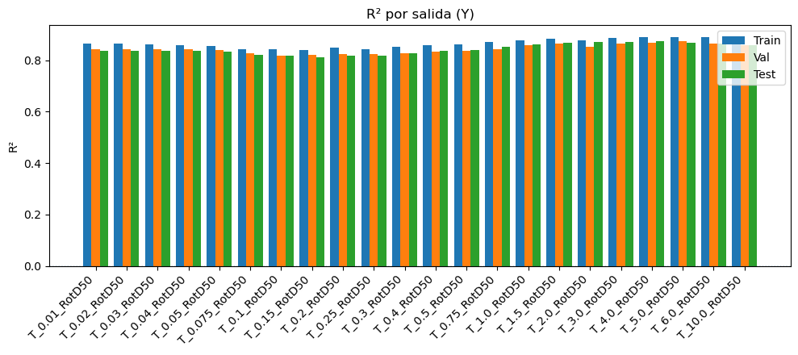
Redes Convolucionales de 1 dimensión#
import numpy as np
import tensorflow as tf
from tensorflow.keras import layers, callbacks, optimizers, Model, Input
# --- datos ---
Xtr = np.asarray(X_train_feats, dtype="float32")
Xva = np.asarray(X_val_feats, dtype="float32")
Xte = np.asarray(X_test_feats, dtype="float32")
Ytr = np.asarray(y_train, dtype="float32")
Yva = np.asarray(y_val, dtype="float32")
Yte = np.asarray(y_test, dtype="float32")
if Ytr.ndim == 1: Ytr = Ytr.reshape(-1,1)
if Yva.ndim == 1: Yva = Yva.reshape(-1,1)
if Yte.ndim == 1: Yte = Yte.reshape(-1,1)
n_features = Xtr.shape[1]
nT = Ytr.shape[1]
# --- reshape para Conv1D ---
Xtr_cnn = Xtr.reshape((-1, n_features, 1))
Xva_cnn = Xva.reshape((-1, n_features, 1))
Xte_cnn = Xte.reshape((-1, n_features, 1))
# --- modelo CNN ---
tf.keras.utils.set_random_seed(42)
try: tf.config.experimental.enable_op_determinism()
except: pass
inp = Input(shape=(n_features, 1))
x = layers.Conv1D(64, 3, padding="same", activation="relu")(inp)
x = layers.BatchNormalization()(x)
x = layers.Dropout(0.15)(x)
x = layers.Conv1D(128, 3, padding="same", activation="relu")(x)
x = layers.BatchNormalization()(x)
x = layers.Dropout(0.15)(x)
x = layers.GlobalAveragePooling1D()(x)
x = layers.Dense(256, activation="relu")(x)
x = layers.Dropout(0.10)(x)
out = layers.Dense(nT, activation=None)(x)
modelCNN = Model(inp, out)
modelCNN.compile(optimizer=optimizers.Adam(1e-3), loss=masked_mse)
es = callbacks.EarlyStopping(monitor="val_loss", patience=20, restore_best_weights=True)
rlr = callbacks.ReduceLROnPlateau(monitor="val_loss", factor=0.5, patience=8, min_lr=1e-6)
history = modelCNN.fit(
Xtr_cnn, Ytr,
validation_data=(Xva_cnn, Yva),
epochs=400, batch_size=64,
callbacks=[es, rlr], verbose=1
)
print("Test loss:", modelCNN.evaluate(Xte_cnn, Yte, verbose=0))
y_pred_test = modelCNN.predict(Xte_cnn) # (n_samples, nT)
Epoch 1/400
112/112 [==============================] - 4s 10ms/step - loss: 5.2640 - val_loss: 3.4180 - lr: 0.0010
Epoch 2/400
112/112 [==============================] - 1s 6ms/step - loss: 1.2628 - val_loss: 18.7672 - lr: 0.0010
Epoch 3/400
112/112 [==============================] - 1s 6ms/step - loss: 1.0334 - val_loss: 14.4555 - lr: 0.0010
Epoch 4/400
112/112 [==============================] - 1s 7ms/step - loss: 0.9442 - val_loss: 7.0521 - lr: 0.0010
Epoch 5/400
112/112 [==============================] - 1s 7ms/step - loss: 0.9270 - val_loss: 1.8728 - lr: 0.0010
Epoch 6/400
112/112 [==============================] - 1s 7ms/step - loss: 0.9081 - val_loss: 1.1879 - lr: 0.0010
Epoch 7/400
112/112 [==============================] - 1s 7ms/step - loss: 0.8971 - val_loss: 0.6480 - lr: 0.0010
Epoch 8/400
112/112 [==============================] - 1s 6ms/step - loss: 0.8518 - val_loss: 0.7114 - lr: 0.0010
Epoch 9/400
112/112 [==============================] - 1s 6ms/step - loss: 0.8379 - val_loss: 0.6582 - lr: 0.0010
Epoch 10/400
112/112 [==============================] - 1s 6ms/step - loss: 0.8378 - val_loss: 0.8759 - lr: 0.0010
Epoch 11/400
112/112 [==============================] - 1s 6ms/step - loss: 0.7779 - val_loss: 0.6258 - lr: 0.0010
Epoch 12/400
112/112 [==============================] - 1s 6ms/step - loss: 0.7936 - val_loss: 0.6743 - lr: 0.0010
Epoch 13/400
112/112 [==============================] - 1s 6ms/step - loss: 0.7785 - val_loss: 0.6421 - lr: 0.0010
Epoch 14/400
112/112 [==============================] - 1s 6ms/step - loss: 0.8004 - val_loss: 0.5983 - lr: 0.0010
Epoch 15/400
112/112 [==============================] - 1s 6ms/step - loss: 0.7525 - val_loss: 0.6257 - lr: 0.0010
Epoch 16/400
112/112 [==============================] - 1s 6ms/step - loss: 0.7508 - val_loss: 0.5969 - lr: 0.0010
Epoch 17/400
112/112 [==============================] - 1s 6ms/step - loss: 0.7578 - val_loss: 0.6433 - lr: 0.0010
Epoch 18/400
112/112 [==============================] - 1s 6ms/step - loss: 0.7401 - val_loss: 0.6733 - lr: 0.0010
Epoch 19/400
112/112 [==============================] - 1s 6ms/step - loss: 0.7434 - val_loss: 0.6196 - lr: 0.0010
Epoch 20/400
112/112 [==============================] - 1s 6ms/step - loss: 0.7232 - val_loss: 0.5719 - lr: 0.0010
Epoch 21/400
112/112 [==============================] - 1s 6ms/step - loss: 0.7319 - val_loss: 0.6052 - lr: 0.0010
Epoch 22/400
112/112 [==============================] - 1s 6ms/step - loss: 0.7256 - val_loss: 0.5991 - lr: 0.0010
Epoch 23/400
112/112 [==============================] - 1s 6ms/step - loss: 0.7143 - val_loss: 0.6002 - lr: 0.0010
Epoch 24/400
112/112 [==============================] - 1s 6ms/step - loss: 0.7308 - val_loss: 0.5837 - lr: 0.0010
Epoch 25/400
112/112 [==============================] - 1s 6ms/step - loss: 0.7243 - val_loss: 0.5986 - lr: 0.0010
Epoch 26/400
112/112 [==============================] - 1s 6ms/step - loss: 0.7036 - val_loss: 0.5837 - lr: 0.0010
Epoch 27/400
112/112 [==============================] - 1s 6ms/step - loss: 0.7149 - val_loss: 0.5826 - lr: 0.0010
Epoch 28/400
112/112 [==============================] - 1s 5ms/step - loss: 0.6939 - val_loss: 0.6569 - lr: 0.0010
Epoch 29/400
112/112 [==============================] - 1s 6ms/step - loss: 0.6834 - val_loss: 0.5816 - lr: 5.0000e-04
Epoch 30/400
112/112 [==============================] - 1s 6ms/step - loss: 0.6698 - val_loss: 0.5627 - lr: 5.0000e-04
Epoch 31/400
112/112 [==============================] - 1s 6ms/step - loss: 0.6711 - val_loss: 0.5701 - lr: 5.0000e-04
Epoch 32/400
112/112 [==============================] - 1s 6ms/step - loss: 0.6812 - val_loss: 0.5637 - lr: 5.0000e-04
Epoch 33/400
112/112 [==============================] - 1s 6ms/step - loss: 0.6788 - val_loss: 0.5620 - lr: 5.0000e-04
Epoch 34/400
112/112 [==============================] - 1s 6ms/step - loss: 0.6532 - val_loss: 0.5504 - lr: 5.0000e-04
Epoch 35/400
112/112 [==============================] - 1s 6ms/step - loss: 0.6717 - val_loss: 0.5548 - lr: 5.0000e-04
Epoch 36/400
112/112 [==============================] - 1s 6ms/step - loss: 0.6631 - val_loss: 0.5845 - lr: 5.0000e-04
Epoch 37/400
112/112 [==============================] - 1s 6ms/step - loss: 0.6498 - val_loss: 0.5679 - lr: 5.0000e-04
Epoch 38/400
112/112 [==============================] - 1s 6ms/step - loss: 0.6609 - val_loss: 0.5551 - lr: 5.0000e-04
Epoch 39/400
112/112 [==============================] - 1s 6ms/step - loss: 0.6629 - val_loss: 0.5724 - lr: 5.0000e-04
Epoch 40/400
112/112 [==============================] - 1s 6ms/step - loss: 0.6585 - val_loss: 0.5721 - lr: 5.0000e-04
Epoch 41/400
112/112 [==============================] - 1s 6ms/step - loss: 0.6549 - val_loss: 0.5567 - lr: 5.0000e-04
Epoch 42/400
112/112 [==============================] - 1s 5ms/step - loss: 0.6504 - val_loss: 0.5745 - lr: 5.0000e-04
Epoch 43/400
112/112 [==============================] - 1s 6ms/step - loss: 0.6585 - val_loss: 0.5500 - lr: 2.5000e-04
Epoch 44/400
112/112 [==============================] - 1s 6ms/step - loss: 0.6478 - val_loss: 0.5603 - lr: 2.5000e-04
Epoch 45/400
112/112 [==============================] - 1s 6ms/step - loss: 0.6489 - val_loss: 0.5597 - lr: 2.5000e-04
Epoch 46/400
112/112 [==============================] - 1s 6ms/step - loss: 0.6459 - val_loss: 0.5573 - lr: 2.5000e-04
Epoch 47/400
112/112 [==============================] - 1s 6ms/step - loss: 0.6370 - val_loss: 0.5552 - lr: 2.5000e-04
Epoch 48/400
112/112 [==============================] - 1s 6ms/step - loss: 0.6348 - val_loss: 0.5911 - lr: 2.5000e-04
Epoch 49/400
112/112 [==============================] - 1s 6ms/step - loss: 0.6444 - val_loss: 0.5581 - lr: 2.5000e-04
Epoch 50/400
112/112 [==============================] - 1s 6ms/step - loss: 0.6368 - val_loss: 0.5424 - lr: 2.5000e-04
Epoch 51/400
112/112 [==============================] - 1s 6ms/step - loss: 0.6388 - val_loss: 0.5426 - lr: 2.5000e-04
Epoch 52/400
112/112 [==============================] - 1s 6ms/step - loss: 0.6239 - val_loss: 0.5481 - lr: 2.5000e-04
Epoch 53/400
112/112 [==============================] - 1s 6ms/step - loss: 0.6201 - val_loss: 0.5500 - lr: 2.5000e-04
Epoch 54/400
112/112 [==============================] - 1s 6ms/step - loss: 0.6344 - val_loss: 0.5604 - lr: 2.5000e-04
Epoch 55/400
112/112 [==============================] - 1s 6ms/step - loss: 0.6454 - val_loss: 0.5565 - lr: 2.5000e-04
Epoch 56/400
112/112 [==============================] - 1s 6ms/step - loss: 0.6412 - val_loss: 0.5436 - lr: 2.5000e-04
Epoch 57/400
112/112 [==============================] - 1s 6ms/step - loss: 0.6368 - val_loss: 0.5457 - lr: 2.5000e-04
Epoch 58/400
112/112 [==============================] - 1s 6ms/step - loss: 0.6269 - val_loss: 0.5463 - lr: 2.5000e-04
Epoch 59/400
112/112 [==============================] - 1s 6ms/step - loss: 0.6175 - val_loss: 0.5435 - lr: 1.2500e-04
Epoch 60/400
112/112 [==============================] - 1s 6ms/step - loss: 0.6161 - val_loss: 0.5726 - lr: 1.2500e-04
Epoch 61/400
112/112 [==============================] - 1s 6ms/step - loss: 0.6235 - val_loss: 0.5429 - lr: 1.2500e-04
Epoch 62/400
112/112 [==============================] - 1s 6ms/step - loss: 0.6109 - val_loss: 0.5449 - lr: 1.2500e-04
Epoch 63/400
112/112 [==============================] - 1s 6ms/step - loss: 0.6302 - val_loss: 0.5571 - lr: 1.2500e-04
Epoch 64/400
112/112 [==============================] - 1s 6ms/step - loss: 0.6230 - val_loss: 0.5436 - lr: 1.2500e-04
Epoch 65/400
112/112 [==============================] - 1s 6ms/step - loss: 0.6236 - val_loss: 0.5581 - lr: 1.2500e-04
Epoch 66/400
112/112 [==============================] - 1s 6ms/step - loss: 0.6154 - val_loss: 0.5436 - lr: 1.2500e-04
Epoch 67/400
112/112 [==============================] - 1s 6ms/step - loss: 0.6271 - val_loss: 0.5437 - lr: 6.2500e-05
Epoch 68/400
112/112 [==============================] - 1s 6ms/step - loss: 0.6238 - val_loss: 0.5514 - lr: 6.2500e-05
Epoch 69/400
112/112 [==============================] - 1s 6ms/step - loss: 0.6210 - val_loss: 0.5459 - lr: 6.2500e-05
Epoch 70/400
112/112 [==============================] - 1s 6ms/step - loss: 0.6236 - val_loss: 0.5389 - lr: 6.2500e-05
Epoch 71/400
112/112 [==============================] - 1s 6ms/step - loss: 0.6216 - val_loss: 0.5424 - lr: 6.2500e-05
Epoch 72/400
112/112 [==============================] - 1s 6ms/step - loss: 0.6105 - val_loss: 0.5476 - lr: 6.2500e-05
Epoch 73/400
112/112 [==============================] - 1s 6ms/step - loss: 0.6146 - val_loss: 0.5393 - lr: 6.2500e-05
Epoch 74/400
112/112 [==============================] - 1s 6ms/step - loss: 0.6269 - val_loss: 0.5549 - lr: 6.2500e-05
Epoch 75/400
112/112 [==============================] - 1s 6ms/step - loss: 0.6240 - val_loss: 0.5403 - lr: 6.2500e-05
Epoch 76/400
112/112 [==============================] - 1s 6ms/step - loss: 0.6176 - val_loss: 0.5404 - lr: 6.2500e-05
Epoch 77/400
112/112 [==============================] - 1s 6ms/step - loss: 0.6125 - val_loss: 0.5382 - lr: 6.2500e-05
Epoch 78/400
112/112 [==============================] - 1s 6ms/step - loss: 0.6167 - val_loss: 0.5427 - lr: 6.2500e-05
Epoch 79/400
112/112 [==============================] - 1s 6ms/step - loss: 0.6145 - val_loss: 0.5449 - lr: 6.2500e-05
Epoch 80/400
112/112 [==============================] - 1s 6ms/step - loss: 0.6157 - val_loss: 0.5396 - lr: 6.2500e-05
Epoch 81/400
112/112 [==============================] - 1s 6ms/step - loss: 0.6187 - val_loss: 0.5458 - lr: 6.2500e-05
Epoch 82/400
112/112 [==============================] - 1s 6ms/step - loss: 0.6132 - val_loss: 0.5405 - lr: 6.2500e-05
Epoch 83/400
112/112 [==============================] - 1s 6ms/step - loss: 0.6216 - val_loss: 0.5438 - lr: 6.2500e-05
Epoch 84/400
112/112 [==============================] - 1s 6ms/step - loss: 0.6206 - val_loss: 0.5399 - lr: 6.2500e-05
Epoch 85/400
112/112 [==============================] - 1s 6ms/step - loss: 0.6174 - val_loss: 0.5436 - lr: 6.2500e-05
Epoch 86/400
112/112 [==============================] - 1s 6ms/step - loss: 0.6120 - val_loss: 0.5403 - lr: 3.1250e-05
Epoch 87/400
112/112 [==============================] - 1s 6ms/step - loss: 0.5982 - val_loss: 0.5412 - lr: 3.1250e-05
Epoch 88/400
112/112 [==============================] - 1s 6ms/step - loss: 0.6055 - val_loss: 0.5406 - lr: 3.1250e-05
Epoch 89/400
112/112 [==============================] - 1s 6ms/step - loss: 0.6083 - val_loss: 0.5379 - lr: 3.1250e-05
Epoch 90/400
112/112 [==============================] - 1s 6ms/step - loss: 0.6122 - val_loss: 0.5426 - lr: 3.1250e-05
Epoch 91/400
112/112 [==============================] - 1s 6ms/step - loss: 0.6102 - val_loss: 0.5410 - lr: 3.1250e-05
Epoch 92/400
112/112 [==============================] - 1s 6ms/step - loss: 0.6163 - val_loss: 0.5406 - lr: 3.1250e-05
Epoch 93/400
112/112 [==============================] - 1s 5ms/step - loss: 0.6051 - val_loss: 0.5420 - lr: 3.1250e-05
Epoch 94/400
112/112 [==============================] - 1s 6ms/step - loss: 0.6054 - val_loss: 0.5440 - lr: 3.1250e-05
Epoch 95/400
112/112 [==============================] - 1s 6ms/step - loss: 0.6097 - val_loss: 0.5402 - lr: 3.1250e-05
Epoch 96/400
112/112 [==============================] - 1s 6ms/step - loss: 0.6168 - val_loss: 0.5411 - lr: 3.1250e-05
Epoch 97/400
112/112 [==============================] - 1s 6ms/step - loss: 0.6133 - val_loss: 0.5431 - lr: 3.1250e-05
Epoch 98/400
112/112 [==============================] - 1s 6ms/step - loss: 0.6120 - val_loss: 0.5410 - lr: 1.5625e-05
Epoch 99/400
112/112 [==============================] - 1s 6ms/step - loss: 0.6126 - val_loss: 0.5415 - lr: 1.5625e-05
Epoch 100/400
112/112 [==============================] - 1s 6ms/step - loss: 0.6166 - val_loss: 0.5418 - lr: 1.5625e-05
Epoch 101/400
112/112 [==============================] - 1s 6ms/step - loss: 0.6038 - val_loss: 0.5411 - lr: 1.5625e-05
Epoch 102/400
112/112 [==============================] - 1s 6ms/step - loss: 0.6012 - val_loss: 0.5398 - lr: 1.5625e-05
Epoch 103/400
112/112 [==============================] - 1s 6ms/step - loss: 0.6051 - val_loss: 0.5405 - lr: 1.5625e-05
Epoch 104/400
112/112 [==============================] - 1s 6ms/step - loss: 0.6083 - val_loss: 0.5395 - lr: 1.5625e-05
Epoch 105/400
112/112 [==============================] - 1s 6ms/step - loss: 0.6001 - val_loss: 0.5395 - lr: 1.5625e-05
Epoch 106/400
112/112 [==============================] - 1s 6ms/step - loss: 0.6122 - val_loss: 0.5405 - lr: 7.8125e-06
Epoch 107/400
112/112 [==============================] - 1s 6ms/step - loss: 0.6167 - val_loss: 0.5401 - lr: 7.8125e-06
Epoch 108/400
112/112 [==============================] - 1s 6ms/step - loss: 0.6022 - val_loss: 0.5407 - lr: 7.8125e-06
Epoch 109/400
112/112 [==============================] - 1s 6ms/step - loss: 0.6102 - val_loss: 0.5400 - lr: 7.8125e-06
Test loss: 0.539135754108429
48/48 [==============================] - 0s 2ms/step
# --- Periodos (ya tienes el array 'periods' definido arriba) ---
# --- Elige el índice de la muestra a graficar ---
i = 10 # cámbialo por la muestra que quieras
# --- Espectros real y predicho (forma (nT,)) ---
y_true_spec = y_test.iloc[i].values # espectro real (array)
y_pred_spec = y_pred_test[i] if y_pred_test.ndim == 2 else y_pred_test.reshape(-1, len(periods))[i] # espectro predicho
# --- Opcional: ignora NaNs del real para comparar sobre los válidos ---
mask = ~np.isnan(y_true_spec)
T = periods[mask]
y_real = y_true_spec[mask]
y_hat = y_pred_spec[mask]
plt.figure(figsize=(7,4))
plt.plot(T, np.exp(y_real), label="Real", linewidth=2)
plt.plot(T, np.exp(y_hat), label="Predicho", linewidth=2, linestyle="--")
# Si prefieres escala log en T o Sa, descomenta:
plt.xscale("log"); plt.yscale("log")
plt.xlabel("Periodo T (s)")
plt.ylabel("Sa")
plt.title("Espectro: Real vs Predicho")
plt.grid(True, which="both", linestyle=":")
plt.legend()
plt.tight_layout()
plt.show()
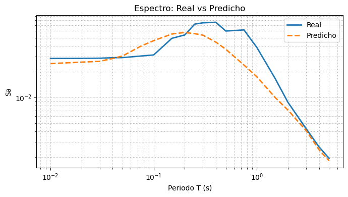
# Predicciones (asegúrate de haber entrenado modelCNN)
y_pred_test = modelCNN.predict(Xte_cnn)
# Asegurar forma 2D
Y_te = np.asarray(Yte, dtype=float)
if Y_te.ndim == 1: Y_te = Y_te.reshape(-1, 1)
if y_pred_test.ndim == 1: y_pred_test = y_pred_test.reshape(-1, 1)
if y_pred_test.ndim == 3 and y_pred_test.shape[-1] == 1: y_pred_test = y_pred_test[..., 0]
# Nombres de salidas (usa tu lista Sa_Crustal)
y_names = list(Sa_Crustal)
if len(y_names) != Y_te.shape[1]:
y_names = [f"Y_{j}" for j in range(Y_te.shape[1])]
# Si entrenaste en log(Sa) y quieres métricas en escala original, pon True
EXP_BACKTRANS = False # cámbialo a True si tus Y están en log y quieres exponenciar
Y_te_eval = np.exp(Y_te) if EXP_BACKTRANS else Y_te
Yp_te_eval = np.exp(y_pred_test) if EXP_BACKTRANS else y_pred_test
rows_test = []
for j, name in enumerate(y_names):
y_t = Y_te_eval[:, j]
y_p = Yp_te_eval[:, j]
mask = np.isfinite(y_t) & np.isfinite(y_p)
if mask.sum() == 0:
mse = rmse = mae = mape = r2 = np.nan
else:
err = y_p[mask] - y_t[mask]
mse = np.mean(err**2)
rmse = np.sqrt(mse)
mae = np.mean(np.abs(err))
mask_mape = (np.abs(y_t) > 1e-12) & mask
mape = np.mean(np.abs((y_p[mask_mape] - y_t[mask_mape]) / y_t[mask_mape])) * 100.0 if mask_mape.sum() else np.nan
y_mean = np.mean(y_t[mask])
ss_res = np.sum((y_t[mask] - y_p[mask])**2)
ss_tot = np.sum((y_t[mask] - y_mean)**2)
r2 = 1.0 - ss_res / (ss_tot + 1e-12)
rows_test.append({"Y": name, "RMSE": rmse, "MSE": mse, "MAE": mae, "MAPE_%": mape, "R2": r2})
df_test_metrics_cnn = pd.DataFrame(rows_test).set_index("Y").sort_index()
df_test_metrics_cnn
48/48 [==============================] - 0s 2ms/step
| RMSE | MSE | MAE | MAPE_% | R2 | |
|---|---|---|---|---|---|
| Y | |||||
| T_0.01_RotD50 | 0.698014 | 0.487223 | 0.544837 | 17.551971 | 0.828670 |
| T_0.02_RotD50 | 0.698728 | 0.488221 | 0.544655 | 17.320108 | 0.828962 |
| T_0.03_RotD50 | 0.702472 | 0.493467 | 0.547161 | 17.465494 | 0.828496 |
| T_0.04_RotD50 | 0.708810 | 0.502412 | 0.553380 | 19.974523 | 0.826275 |
| T_0.05_RotD50 | 0.716266 | 0.513038 | 0.559582 | 20.427860 | 0.824448 |
| T_0.075_RotD50 | 0.752956 | 0.566942 | 0.588492 | 25.948232 | 0.809127 |
| T_0.15_RotD50 | 0.757093 | 0.573190 | 0.590261 | 49.490234 | 0.806082 |
| T_0.1_RotD50 | 0.769231 | 0.591716 | 0.599470 | 31.823007 | 0.800933 |
| T_0.25_RotD50 | 0.746861 | 0.557801 | 0.592146 | 41.075494 | 0.812619 |
| T_0.2_RotD50 | 0.746558 | 0.557349 | 0.584593 | 43.622304 | 0.811222 |
| T_0.3_RotD50 | 0.735848 | 0.541473 | 0.579852 | 34.334494 | 0.820671 |
| T_0.4_RotD50 | 0.723801 | 0.523888 | 0.575585 | 26.615104 | 0.830410 |
| T_0.5_RotD50 | 0.732692 | 0.536838 | 0.579149 | 28.135147 | 0.834154 |
| T_0.75_RotD50 | 0.738569 | 0.545485 | 0.579416 | 33.839081 | 0.846720 |
| T_1.0_RotD50 | 0.748000 | 0.559504 | 0.588023 | 33.712039 | 0.854817 |
| T_1.5_RotD50 | 0.755659 | 0.571020 | 0.594686 | 17.394754 | 0.863156 |
| T_10.0_RotD50 | 0.658833 | 0.434061 | 0.520913 | 8.370045 | 0.872482 |
| T_2.0_RotD50 | 0.751074 | 0.564113 | 0.595819 | 14.541038 | 0.868714 |
| T_3.0_RotD50 | 0.735646 | 0.541175 | 0.588158 | 12.554286 | 0.873078 |
| T_4.0_RotD50 | 0.732265 | 0.536212 | 0.583528 | 11.579213 | 0.863866 |
| T_5.0_RotD50 | 0.725482 | 0.526324 | 0.576935 | 11.010550 | 0.863536 |
| T_6.0_RotD50 | 0.732917 | 0.537168 | 0.580140 | 10.741602 | 0.861485 |
# ====== BLOQUE 2: Tres DataFrames de métricas (TRAIN / VAL / TEST) ======
# Predicciones
y_pred_train = modelCNN.predict(Xtr_cnn)
y_pred_val = modelCNN.predict(Xva_cnn)
# Asegurar 2D
Y_tr = np.asarray(Ytr, dtype=float); Y_va = np.asarray(Yva, dtype=float); Y_te = np.asarray(Yte, dtype=float)
for arr_name in ["Y_tr","Y_va","Y_te"]:
arr = locals()[arr_name]
if arr.ndim == 1: locals()[arr_name] = arr.reshape(-1,1)
for pred_name in ["y_pred_train","y_pred_val","y_pred_test"]:
arr = locals()[pred_name]
if arr.ndim == 1: locals()[pred_name] = arr.reshape(-1,1)
if arr.ndim == 3 and arr.shape[-1] == 1: locals()[pred_name] = arr[...,0]
# Backtransform opcional
Y_tr_eval = np.exp(Y_tr) if EXP_BACKTRANS else Y_tr
Y_va_eval = np.exp(Y_va) if EXP_BACKTRANS else Y_va
Y_te_eval = np.exp(Y_te) if EXP_BACKTRANS else Y_te
Yp_tr_eval = np.exp(y_pred_train) if EXP_BACKTRANS else y_pred_train
Yp_va_eval = np.exp(y_pred_val) if EXP_BACKTRANS else y_pred_val
Yp_te_eval = np.exp(y_pred_test) if EXP_BACKTRANS else y_pred_test
# TRAIN
rows_train = []
for j, name in enumerate(y_names):
y_t = Y_tr_eval[:, j]; y_p = Yp_tr_eval[:, j]
mask = np.isfinite(y_t) & np.isfinite(y_p)
if mask.sum() == 0:
mse = rmse = mae = mape = r2 = np.nan
else:
err = y_p[mask] - y_t[mask]
mse = np.mean(err**2); rmse = np.sqrt(mse); mae = np.mean(np.abs(err))
mask_mape = (np.abs(y_t) > 1e-12) & mask
mape = np.mean(np.abs((y_p[mask_mape] - y_t[mask_mape]) / y_t[mask_mape])) * 100.0 if mask_mape.sum() else np.nan
y_mean = np.mean(y_t[mask]); ss_res = np.sum((y_t[mask] - y_p[mask])**2); ss_tot = np.sum((y_t[mask] - y_mean)**2)
r2 = 1.0 - ss_res / (ss_tot + 1e-12)
rows_train.append({"Y": name, "RMSE": rmse, "MSE": mse, "MAE": mae, "MAPE_%": mape, "R2": r2})
df_train_metrics_cnn = pd.DataFrame(rows_train).set_index("Y").sort_index()
# VAL
rows_val = []
for j, name in enumerate(y_names):
y_t = Y_va_eval[:, j]; y_p = Yp_va_eval[:, j]
mask = np.isfinite(y_t) & np.isfinite(y_p)
if mask.sum() == 0:
mse = rmse = mae = mape = r2 = np.nan
else:
err = y_p[mask] - y_t[mask]
mse = np.mean(err**2); rmse = np.sqrt(mse); mae = np.mean(np.abs(err))
mask_mape = (np.abs(y_t) > 1e-12) & mask
mape = np.mean(np.abs((y_p[mask_mape] - y_t[mask_mape]) / y_t[mask_mape])) * 100.0 if mask_mape.sum() else np.nan
y_mean = np.mean(y_t[mask]); ss_res = np.sum((y_t[mask] - y_p[mask])**2); ss_tot = np.sum((y_t[mask] - y_mean)**2)
r2 = 1.0 - ss_res / (ss_tot + 1e-12)
rows_val.append({"Y": name, "RMSE": rmse, "MSE": mse, "MAE": mae, "MAPE_%": mape, "R2": r2})
df_val_metrics_cnn = pd.DataFrame(rows_val).set_index("Y").sort_index()
# TEST (reusamos lo calculado arriba si quieres, aquí lo volvemos a generar por claridad)
rows_test = []
for j, name in enumerate(y_names):
y_t = Y_te_eval[:, j]; y_p = Yp_te_eval[:, j]
mask = np.isfinite(y_t) & np.isfinite(y_p)
if mask.sum() == 0:
mse = rmse = mae = mape = r2 = np.nan
else:
err = y_p[mask] - y_t[mask]
mse = np.mean(err**2); rmse = np.sqrt(mse); mae = np.mean(np.abs(err))
mask_mape = (np.abs(y_t) > 1e-12) & mask
mape = np.mean(np.abs((y_p[mask_mape] - y_t[mask_mape]) / y_t[mask_mape])) * 100.0 if mask_mape.sum() else np.nan
y_mean = np.mean(y_t[mask]); ss_res = np.sum((y_t[mask] - y_p[mask])**2); ss_tot = np.sum((y_t[mask] - y_mean)**2)
r2 = 1.0 - ss_res / (ss_tot + 1e-12)
rows_test.append({"Y": name, "RMSE": rmse, "MSE": mse, "MAE": mae, "MAPE_%": mape, "R2": r2})
df_test_metrics_cnn = pd.DataFrame(rows_test).set_index("Y").sort_index()
224/224 [==============================] - 1s 2ms/step
48/48 [==============================] - 0s 2ms/step
ys = np.array(df_test_metrics_cnn.index.tolist())
x = np.arange(len(ys))
w = 0.27
plt.figure(figsize=(10, 4.8))
plt.bar(x - w, df_train_metrics_cnn["R2"].values, width=w, label="Train")
plt.bar(x, df_val_metrics_cnn["R2"].values, width=w, label="Val")
plt.bar(x + w, df_test_metrics_cnn["R2"].values, width=w, label="Test")
plt.axhline(0.0, linestyle=":", linewidth=1)
plt.xticks(x, ys, rotation=45, ha="right")
plt.ylabel("R²")
plt.title("R² por periodo (salida)")
plt.legend()
plt.tight_layout()
plt.show()
Redes Recurrentes#
Recurrente simple#
# ====== BLOQUE 1: RNN (GRU/LSTM) para regresión multi-salida ======
import numpy as np
import tensorflow as tf
from tensorflow.keras import layers, callbacks, optimizers, Model, Input
# Datos a numpy
Xtr = np.asarray(X_train_feats, dtype="float32")
Xva = np.asarray(X_val_feats, dtype="float32")
Xte = np.asarray(X_test_feats, dtype="float32")
Ytr = np.asarray(y_train, dtype="float32"); Yva = np.asarray(y_val, dtype="float32"); Yte = np.asarray(y_test, dtype="float32")
if Ytr.ndim == 1: Ytr = Ytr.reshape(-1,1)
if Yva.ndim == 1: Yva = Yva.reshape(-1,1)
if Yte.ndim == 1: Yte = Yte.reshape(-1,1)
n_features = Xtr.shape[1]
nT = Ytr.shape[1]
# RNN espera (batch, timesteps, features); tratamos cada columna como un timestep
Xtr_rnn = Xtr.reshape((-1, n_features, 1))
Xva_rnn = Xva.reshape((-1, n_features, 1))
Xte_rnn = Xte.reshape((-1, n_features, 1))
# Modelo RNN (usa masked_mse ya definida antes)
tf.keras.utils.set_random_seed(42)
inp = Input(shape=(n_features, 1))
x = layers.Bidirectional(layers.SimpleRNN(64, return_sequences=True))(inp)
x = layers.Bidirectional(layers.SimpleRNN(64))(x)
x = layers.Dense(128, activation="relu")(x)
x = layers.Dropout(0.15)(x)
out = layers.Dense(nT, activation=None)(x)
modelRNN = Model(inp, out)
modelRNN.compile(optimizer=optimizers.Adam(1e-3), loss=masked_mse)
es = callbacks.EarlyStopping(monitor="val_loss", patience=20, restore_best_weights=True)
rlr = callbacks.ReduceLROnPlateau(monitor="val_loss", factor=0.5, patience=8, min_lr=1e-6)
history = modelRNN.fit(
Xtr_rnn, Ytr,
validation_data=(Xva_rnn, Yva),
epochs=400, batch_size=64,
callbacks=[es, rlr], verbose=1
)
print("Test loss:", modelRNN.evaluate(Xte_rnn, Yte, verbose=0))
y_pred_test = modelRNN.predict(Xte_rnn) # (n_samples, nT)
Epoch 1/400
112/112 [==============================] - 6s 36ms/step - loss: 3.3712 - val_loss: 0.7108 - lr: 0.0010
Epoch 2/400
112/112 [==============================] - 4s 32ms/step - loss: 0.9665 - val_loss: 0.7194 - lr: 0.0010
Epoch 3/400
112/112 [==============================] - 3s 31ms/step - loss: 0.8940 - val_loss: 0.6360 - lr: 0.0010
Epoch 4/400
112/112 [==============================] - 4s 32ms/step - loss: 0.8213 - val_loss: 0.6173 - lr: 0.0010
Epoch 5/400
112/112 [==============================] - 4s 34ms/step - loss: 0.7831 - val_loss: 0.6963 - lr: 0.0010
Epoch 6/400
112/112 [==============================] - 4s 31ms/step - loss: 0.7654 - val_loss: 0.6471 - lr: 0.0010
Epoch 7/400
112/112 [==============================] - 4s 31ms/step - loss: 0.7530 - val_loss: 0.6052 - lr: 0.0010
Epoch 8/400
112/112 [==============================] - 3s 30ms/step - loss: 0.7311 - val_loss: 0.5837 - lr: 0.0010
Epoch 9/400
112/112 [==============================] - 3s 31ms/step - loss: 0.7122 - val_loss: 0.6214 - lr: 0.0010
Epoch 10/400
112/112 [==============================] - 3s 30ms/step - loss: 0.6910 - val_loss: 0.5987 - lr: 0.0010
Epoch 11/400
112/112 [==============================] - 3s 31ms/step - loss: 0.6906 - val_loss: 0.6431 - lr: 0.0010
Epoch 12/400
112/112 [==============================] - 3s 30ms/step - loss: 0.7083 - val_loss: 0.5628 - lr: 0.0010
Epoch 13/400
112/112 [==============================] - 3s 29ms/step - loss: 0.6781 - val_loss: 0.6069 - lr: 0.0010
Epoch 14/400
112/112 [==============================] - 4s 37ms/step - loss: 0.6827 - val_loss: 0.5750 - lr: 0.0010
Epoch 15/400
112/112 [==============================] - 4s 39ms/step - loss: 0.6694 - val_loss: 0.5884 - lr: 0.0010
Epoch 16/400
112/112 [==============================] - 4s 39ms/step - loss: 0.6832 - val_loss: 0.5958 - lr: 0.0010
Epoch 17/400
112/112 [==============================] - 4s 32ms/step - loss: 0.6537 - val_loss: 0.6007 - lr: 0.0010
Epoch 18/400
112/112 [==============================] - 4s 34ms/step - loss: 0.6537 - val_loss: 0.5758 - lr: 0.0010
Epoch 19/400
112/112 [==============================] - 4s 35ms/step - loss: 0.6410 - val_loss: 0.5614 - lr: 0.0010
Epoch 20/400
112/112 [==============================] - 4s 37ms/step - loss: 0.6397 - val_loss: 0.5459 - lr: 0.0010
Epoch 21/400
112/112 [==============================] - 4s 36ms/step - loss: 0.6317 - val_loss: 0.6070 - lr: 0.0010
Epoch 22/400
112/112 [==============================] - 4s 33ms/step - loss: 0.6273 - val_loss: 0.5611 - lr: 0.0010
Epoch 23/400
112/112 [==============================] - 4s 34ms/step - loss: 0.6283 - val_loss: 0.5676 - lr: 0.0010
Epoch 24/400
112/112 [==============================] - 4s 32ms/step - loss: 0.6262 - val_loss: 0.5576 - lr: 0.0010
Epoch 25/400
112/112 [==============================] - 3s 30ms/step - loss: 0.6249 - val_loss: 0.5944 - lr: 0.0010
Epoch 26/400
112/112 [==============================] - 4s 31ms/step - loss: 0.6111 - val_loss: 0.5443 - lr: 0.0010
Epoch 27/400
112/112 [==============================] - 3s 31ms/step - loss: 0.6179 - val_loss: 0.5503 - lr: 0.0010
Epoch 28/400
112/112 [==============================] - 3s 30ms/step - loss: 0.6136 - val_loss: 0.5477 - lr: 0.0010
Epoch 29/400
112/112 [==============================] - 4s 31ms/step - loss: 0.6080 - val_loss: 0.5540 - lr: 0.0010
Epoch 30/400
112/112 [==============================] - 3s 31ms/step - loss: 0.6139 - val_loss: 0.5347 - lr: 0.0010
Epoch 31/400
112/112 [==============================] - 3s 31ms/step - loss: 0.6049 - val_loss: 0.5509 - lr: 0.0010
Epoch 32/400
112/112 [==============================] - 4s 32ms/step - loss: 0.6002 - val_loss: 0.5346 - lr: 0.0010
Epoch 33/400
112/112 [==============================] - 4s 32ms/step - loss: 0.5890 - val_loss: 0.5473 - lr: 0.0010
Epoch 34/400
112/112 [==============================] - 3s 31ms/step - loss: 0.5933 - val_loss: 0.5379 - lr: 0.0010
Epoch 35/400
112/112 [==============================] - 4s 31ms/step - loss: 0.5883 - val_loss: 0.5565 - lr: 0.0010
Epoch 36/400
112/112 [==============================] - 4s 31ms/step - loss: 0.6022 - val_loss: 0.5348 - lr: 0.0010
Epoch 37/400
112/112 [==============================] - 4s 32ms/step - loss: 0.5859 - val_loss: 0.5283 - lr: 0.0010
Epoch 38/400
112/112 [==============================] - 4s 33ms/step - loss: 0.5871 - val_loss: 0.5396 - lr: 0.0010
Epoch 39/400
112/112 [==============================] - 4s 32ms/step - loss: 0.5840 - val_loss: 0.5855 - lr: 0.0010
Epoch 40/400
112/112 [==============================] - 4s 32ms/step - loss: 0.5874 - val_loss: 0.5419 - lr: 0.0010
Epoch 41/400
112/112 [==============================] - 4s 32ms/step - loss: 0.5724 - val_loss: 0.5222 - lr: 0.0010
Epoch 42/400
112/112 [==============================] - 3s 31ms/step - loss: 0.5749 - val_loss: 0.5362 - lr: 0.0010
Epoch 43/400
112/112 [==============================] - 3s 29ms/step - loss: 0.5789 - val_loss: 0.5254 - lr: 0.0010
Epoch 44/400
112/112 [==============================] - 3s 30ms/step - loss: 0.5571 - val_loss: 0.5345 - lr: 0.0010
Epoch 45/400
112/112 [==============================] - 3s 30ms/step - loss: 0.5634 - val_loss: 0.5283 - lr: 0.0010
Epoch 46/400
112/112 [==============================] - 3s 29ms/step - loss: 0.5632 - val_loss: 0.5328 - lr: 0.0010
Epoch 47/400
112/112 [==============================] - 3s 31ms/step - loss: 0.5668 - val_loss: 0.5144 - lr: 0.0010
Epoch 48/400
112/112 [==============================] - 3s 30ms/step - loss: 0.5631 - val_loss: 0.5895 - lr: 0.0010
Epoch 49/400
112/112 [==============================] - 3s 31ms/step - loss: 0.5638 - val_loss: 0.5240 - lr: 0.0010
Epoch 50/400
112/112 [==============================] - 4s 32ms/step - loss: 0.5603 - val_loss: 0.5181 - lr: 0.0010
Epoch 51/400
112/112 [==============================] - 3s 31ms/step - loss: 0.5624 - val_loss: 0.5314 - lr: 0.0010
Epoch 52/400
112/112 [==============================] - 3s 31ms/step - loss: 0.5627 - val_loss: 0.5206 - lr: 0.0010
Epoch 53/400
112/112 [==============================] - 3s 31ms/step - loss: 0.5505 - val_loss: 0.5117 - lr: 0.0010
Epoch 54/400
112/112 [==============================] - 3s 31ms/step - loss: 0.5545 - val_loss: 0.5250 - lr: 0.0010
Epoch 55/400
112/112 [==============================] - 4s 32ms/step - loss: 0.5552 - val_loss: 0.5249 - lr: 0.0010
Epoch 56/400
112/112 [==============================] - 4s 34ms/step - loss: 0.5416 - val_loss: 0.5461 - lr: 0.0010
Epoch 57/400
112/112 [==============================] - 4s 32ms/step - loss: 0.5512 - val_loss: 0.5159 - lr: 0.0010
Epoch 58/400
112/112 [==============================] - 4s 32ms/step - loss: 0.5405 - val_loss: 0.5541 - lr: 0.0010
Epoch 59/400
112/112 [==============================] - 4s 32ms/step - loss: 0.5515 - val_loss: 0.5436 - lr: 0.0010
Epoch 60/400
112/112 [==============================] - 4s 32ms/step - loss: 0.5401 - val_loss: 0.5165 - lr: 0.0010
Epoch 61/400
112/112 [==============================] - 3s 30ms/step - loss: 0.5260 - val_loss: 0.5403 - lr: 0.0010
Epoch 62/400
112/112 [==============================] - 3s 30ms/step - loss: 0.5206 - val_loss: 0.5091 - lr: 5.0000e-04
Epoch 63/400
112/112 [==============================] - 3s 30ms/step - loss: 0.5125 - val_loss: 0.5065 - lr: 5.0000e-04
Epoch 64/400
112/112 [==============================] - 4s 33ms/step - loss: 0.5175 - val_loss: 0.4982 - lr: 5.0000e-04
Epoch 65/400
112/112 [==============================] - 4s 31ms/step - loss: 0.5182 - val_loss: 0.5024 - lr: 5.0000e-04
Epoch 66/400
112/112 [==============================] - 4s 31ms/step - loss: 0.5109 - val_loss: 0.5104 - lr: 5.0000e-04
Epoch 67/400
112/112 [==============================] - 4s 31ms/step - loss: 0.5102 - val_loss: 0.5210 - lr: 5.0000e-04
Epoch 68/400
112/112 [==============================] - 4s 37ms/step - loss: 0.5098 - val_loss: 0.5072 - lr: 5.0000e-04
Epoch 69/400
112/112 [==============================] - 4s 33ms/step - loss: 0.5070 - val_loss: 0.5185 - lr: 5.0000e-04
Epoch 70/400
112/112 [==============================] - 4s 34ms/step - loss: 0.5123 - val_loss: 0.5101 - lr: 5.0000e-04
Epoch 71/400
112/112 [==============================] - 4s 33ms/step - loss: 0.5067 - val_loss: 0.5092 - lr: 5.0000e-04
Epoch 72/400
112/112 [==============================] - 4s 33ms/step - loss: 0.5072 - val_loss: 0.5038 - lr: 5.0000e-04
Epoch 73/400
112/112 [==============================] - 4s 32ms/step - loss: 0.4989 - val_loss: 0.4937 - lr: 2.5000e-04
Epoch 74/400
112/112 [==============================] - 4s 33ms/step - loss: 0.4889 - val_loss: 0.4975 - lr: 2.5000e-04
Epoch 75/400
112/112 [==============================] - 4s 33ms/step - loss: 0.4880 - val_loss: 0.5018 - lr: 2.5000e-04
Epoch 76/400
112/112 [==============================] - 3s 31ms/step - loss: 0.4853 - val_loss: 0.4962 - lr: 2.5000e-04
Epoch 77/400
112/112 [==============================] - 4s 32ms/step - loss: 0.4900 - val_loss: 0.5049 - lr: 2.5000e-04
Epoch 78/400
112/112 [==============================] - 4s 32ms/step - loss: 0.4871 - val_loss: 0.4979 - lr: 2.5000e-04
Epoch 79/400
112/112 [==============================] - 3s 31ms/step - loss: 0.4860 - val_loss: 0.4952 - lr: 2.5000e-04
Epoch 80/400
112/112 [==============================] - 4s 32ms/step - loss: 0.4882 - val_loss: 0.4950 - lr: 2.5000e-04
Epoch 81/400
112/112 [==============================] - 4s 32ms/step - loss: 0.4820 - val_loss: 0.4968 - lr: 2.5000e-04
Epoch 82/400
112/112 [==============================] - 4s 32ms/step - loss: 0.4802 - val_loss: 0.4939 - lr: 1.2500e-04
Epoch 83/400
112/112 [==============================] - 3s 31ms/step - loss: 0.4710 - val_loss: 0.4947 - lr: 1.2500e-04
Epoch 84/400
112/112 [==============================] - 3s 31ms/step - loss: 0.4769 - val_loss: 0.4950 - lr: 1.2500e-04
Epoch 85/400
112/112 [==============================] - 3s 30ms/step - loss: 0.4728 - val_loss: 0.4953 - lr: 1.2500e-04
Epoch 86/400
112/112 [==============================] - 4s 31ms/step - loss: 0.4758 - val_loss: 0.4895 - lr: 1.2500e-04
Epoch 87/400
112/112 [==============================] - 4s 32ms/step - loss: 0.4705 - val_loss: 0.4950 - lr: 1.2500e-04
Epoch 88/400
112/112 [==============================] - 4s 32ms/step - loss: 0.4744 - val_loss: 0.4986 - lr: 1.2500e-04
Epoch 89/400
112/112 [==============================] - 4s 34ms/step - loss: 0.4740 - val_loss: 0.4947 - lr: 1.2500e-04
Epoch 90/400
112/112 [==============================] - 4s 32ms/step - loss: 0.4710 - val_loss: 0.4923 - lr: 1.2500e-04
Epoch 91/400
112/112 [==============================] - 3s 31ms/step - loss: 0.4774 - val_loss: 0.4918 - lr: 1.2500e-04
Epoch 92/400
112/112 [==============================] - 4s 31ms/step - loss: 0.4706 - val_loss: 0.4913 - lr: 1.2500e-04
Epoch 93/400
112/112 [==============================] - 4s 32ms/step - loss: 0.4699 - val_loss: 0.4918 - lr: 1.2500e-04
Epoch 94/400
112/112 [==============================] - 4s 32ms/step - loss: 0.4758 - val_loss: 0.4936 - lr: 1.2500e-04
Epoch 95/400
112/112 [==============================] - 4s 32ms/step - loss: 0.4683 - val_loss: 0.4902 - lr: 6.2500e-05
Epoch 96/400
112/112 [==============================] - 4s 32ms/step - loss: 0.4677 - val_loss: 0.4900 - lr: 6.2500e-05
Epoch 97/400
112/112 [==============================] - 3s 31ms/step - loss: 0.4633 - val_loss: 0.4914 - lr: 6.2500e-05
Epoch 98/400
112/112 [==============================] - 4s 32ms/step - loss: 0.4688 - val_loss: 0.4888 - lr: 6.2500e-05
Epoch 99/400
112/112 [==============================] - 3s 31ms/step - loss: 0.4673 - val_loss: 0.4929 - lr: 6.2500e-05
Epoch 100/400
112/112 [==============================] - 3s 31ms/step - loss: 0.4657 - val_loss: 0.4911 - lr: 6.2500e-05
Epoch 101/400
112/112 [==============================] - 3s 31ms/step - loss: 0.4668 - val_loss: 0.4912 - lr: 6.2500e-05
Epoch 102/400
112/112 [==============================] - 3s 31ms/step - loss: 0.4662 - val_loss: 0.4899 - lr: 6.2500e-05
Epoch 103/400
112/112 [==============================] - 4s 31ms/step - loss: 0.4674 - val_loss: 0.4916 - lr: 6.2500e-05
Epoch 104/400
112/112 [==============================] - 3s 31ms/step - loss: 0.4696 - val_loss: 0.4910 - lr: 6.2500e-05
Epoch 105/400
112/112 [==============================] - 3s 31ms/step - loss: 0.4628 - val_loss: 0.4912 - lr: 6.2500e-05
Epoch 106/400
112/112 [==============================] - 4s 32ms/step - loss: 0.4635 - val_loss: 0.4923 - lr: 6.2500e-05
Epoch 107/400
112/112 [==============================] - 3s 31ms/step - loss: 0.4618 - val_loss: 0.4896 - lr: 3.1250e-05
Epoch 108/400
112/112 [==============================] - 3s 31ms/step - loss: 0.4645 - val_loss: 0.4904 - lr: 3.1250e-05
Epoch 109/400
112/112 [==============================] - 3s 31ms/step - loss: 0.4626 - val_loss: 0.4897 - lr: 3.1250e-05
Epoch 110/400
112/112 [==============================] - 4s 31ms/step - loss: 0.4680 - val_loss: 0.4895 - lr: 3.1250e-05
Epoch 111/400
112/112 [==============================] - 4s 34ms/step - loss: 0.4590 - val_loss: 0.4905 - lr: 3.1250e-05
Epoch 112/400
112/112 [==============================] - 4s 36ms/step - loss: 0.4649 - val_loss: 0.4923 - lr: 3.1250e-05
Epoch 113/400
112/112 [==============================] - 4s 37ms/step - loss: 0.4623 - val_loss: 0.4914 - lr: 3.1250e-05
Epoch 114/400
112/112 [==============================] - 4s 40ms/step - loss: 0.4626 - val_loss: 0.4907 - lr: 3.1250e-05
Epoch 115/400
112/112 [==============================] - 4s 40ms/step - loss: 0.4627 - val_loss: 0.4896 - lr: 1.5625e-05
Epoch 116/400
112/112 [==============================] - 4s 37ms/step - loss: 0.4628 - val_loss: 0.4898 - lr: 1.5625e-05
Epoch 117/400
112/112 [==============================] - 4s 35ms/step - loss: 0.4566 - val_loss: 0.4901 - lr: 1.5625e-05
Epoch 118/400
112/112 [==============================] - 4s 35ms/step - loss: 0.4596 - val_loss: 0.4904 - lr: 1.5625e-05
Test loss: 0.4895021915435791
48/48 [==============================] - 1s 7ms/step
# ====== BLOQUE 2: Métricas por periodo (TEST) ======
# Si tus columnas de salida están en Sa_Crustal:
y_names = list(Sa_Crustal) if 'Sa_Crustal' in globals() else [f"Y_{j}" for j in range(Yte.shape[1])]
if len(y_names) != Yte.shape[1]: y_names = [f"Y_{j}" for j in range(Yte.shape[1])]
# Si entrenaste en log(Sa), activa EXP_BACKTRANS=True para evaluar en escala original
EXP_BACKTRANS = False
Y_te_eval = np.exp(Yte) if EXP_BACKTRANS else Yte
Yp_te_eval = np.exp(y_pred_test) if EXP_BACKTRANS else y_pred_test
rows_test = []
for j, name in enumerate(y_names):
y_t = Y_te_eval[:, j]; y_p = Yp_te_eval[:, j]
m = np.isfinite(y_t) & np.isfinite(y_p)
if m.sum() == 0:
rows_test.append({"Y": name, "RMSE": np.nan, "MSE": np.nan, "MAE": np.nan, "MAPE_%": np.nan, "R2": np.nan})
continue
err = y_p[m] - y_t[m]
mse = np.mean(err**2)
rmse = np.sqrt(mse)
mae = np.mean(np.abs(err))
mm = (np.abs(y_t) > 1e-12) & m
mape = np.mean(np.abs((y_p[mm] - y_t[mm]) / y_t[mm])) * 100.0 if mm.sum() else np.nan
y_mean = np.mean(y_t[m])
ss_res = np.sum((y_t[m] - y_p[m])**2)
ss_tot = np.sum((y_t[m] - y_mean)**2)
r2 = 1.0 - ss_res / (ss_tot + 1e-12)
rows_test.append({"Y": name, "RMSE": rmse, "MSE": mse, "MAE": mae, "MAPE_%": mape, "R2": r2})
df_test_metrics_rnn = pd.DataFrame(rows_test).set_index("Y").sort_index()
df_test_metrics_rnn
| RMSE | MSE | MAE | MAPE_% | R2 | |
|---|---|---|---|---|---|
| Y | |||||
| T_0.01_RotD50 | 0.664197 | 0.441158 | 0.515871 | 17.250478 | 0.844869 |
| T_0.02_RotD50 | 0.666068 | 0.443647 | 0.517287 | 16.955547 | 0.844578 |
| T_0.03_RotD50 | 0.669366 | 0.448050 | 0.520461 | 17.129141 | 0.844281 |
| T_0.04_RotD50 | 0.675287 | 0.456012 | 0.524972 | 19.930446 | 0.842319 |
| T_0.05_RotD50 | 0.680174 | 0.462636 | 0.529390 | 20.567031 | 0.841695 |
| T_0.075_RotD50 | 0.710481 | 0.504784 | 0.552231 | 27.008408 | 0.830054 |
| T_0.15_RotD50 | 0.717402 | 0.514666 | 0.554428 | 40.766582 | 0.825881 |
| T_0.1_RotD50 | 0.723130 | 0.522917 | 0.561429 | 32.815659 | 0.824078 |
| T_0.25_RotD50 | 0.719057 | 0.517043 | 0.567894 | 57.900661 | 0.826311 |
| T_0.2_RotD50 | 0.712483 | 0.507633 | 0.556488 | 48.259875 | 0.828062 |
| T_0.3_RotD50 | 0.712507 | 0.507666 | 0.558136 | 42.867649 | 0.831867 |
| T_0.4_RotD50 | 0.698809 | 0.488334 | 0.546214 | 28.343031 | 0.841920 |
| T_0.5_RotD50 | 0.700792 | 0.491109 | 0.546815 | 29.708007 | 0.848281 |
| T_0.75_RotD50 | 0.700031 | 0.490043 | 0.542384 | 35.871339 | 0.862299 |
| T_1.0_RotD50 | 0.709989 | 0.504085 | 0.550636 | 37.425935 | 0.869198 |
| T_1.5_RotD50 | 0.714428 | 0.510408 | 0.556597 | 18.819095 | 0.877681 |
| T_10.0_RotD50 | 0.607414 | 0.368951 | 0.473375 | 7.640629 | 0.891610 |
| T_2.0_RotD50 | 0.710664 | 0.505043 | 0.557170 | 13.722304 | 0.882461 |
| T_3.0_RotD50 | 0.699196 | 0.488875 | 0.548158 | 11.676484 | 0.885344 |
| T_4.0_RotD50 | 0.691923 | 0.478758 | 0.545843 | 10.759676 | 0.878453 |
| T_5.0_RotD50 | 0.687410 | 0.472532 | 0.540232 | 10.312716 | 0.877483 |
| T_6.0_RotD50 | 0.690089 | 0.476223 | 0.537141 | 9.968140 | 0.877200 |
# ====== BLOQUE 3: Tres DataFrames (TRAIN / VAL / TEST) ======
y_pred_train = modelRNN.predict(Xtr_rnn)
y_pred_val = modelRNN.predict(Xva_rnn)
# Backtransform opcional
Y_tr_eval = np.exp(Ytr) if EXP_BACKTRANS else Ytr
Y_va_eval = np.exp(Yva) if EXP_BACKTRANS else Yva
Y_te_eval = np.exp(Yte) if EXP_BACKTRANS else Yte
Yp_tr_eval = np.exp(y_pred_train) if EXP_BACKTRANS else y_pred_train
Yp_va_eval = np.exp(y_pred_val) if EXP_BACKTRANS else y_pred_val
Yp_te_eval = np.exp(y_pred_test) if EXP_BACKTRANS else y_pred_test
def _to_df(Y_true, Y_pred, names):
rows = []
for j, name in enumerate(names):
y_t = Y_true[:, j]; y_p = Y_pred[:, j]
m = np.isfinite(y_t) & np.isfinite(y_p)
if m.sum() == 0:
rows.append({"Y": name, "RMSE": np.nan, "MSE": np.nan, "MAE": np.nan, "MAPE_%": np.nan, "R2": np.nan})
continue
err = y_p[m] - y_t[m]
mse = np.mean(err**2); rmse = np.sqrt(mse); mae = np.mean(np.abs(err))
mm = (np.abs(y_t) > 1e-12) & m
mape = np.mean(np.abs((y_p[mm] - y_t[mm]) / y_t[mm])) * 100.0 if mm.sum() else np.nan
y_mean = np.mean(y_t[m]); ss_res = np.sum((y_t[m] - y_p[m])**2); ss_tot = np.sum((y_t[m] - y_mean)**2)
r2 = 1.0 - ss_res / (ss_tot + 1e-12)
rows.append({"Y": name, "RMSE": rmse, "MSE": mse, "MAE": mae, "MAPE_%": mape, "R2": r2})
return pd.DataFrame(rows).set_index("Y").sort_index()
df_train_metrics_rnn = _to_df(Y_tr_eval, Yp_tr_eval, y_names)
df_val_metrics_rnn = _to_df(Y_va_eval, Yp_va_eval, y_names)
df_test_metrics_rnn = _to_df(Y_te_eval, Yp_te_eval, y_names)
224/224 [==============================] - 2s 6ms/step
48/48 [==============================] - 0s 6ms/step
# ====== BLOQUE 4: Barras R² por periodo ======
import matplotlib.pyplot as plt
ys = np.array(df_test_metrics_rnn.index.tolist())
x = np.arange(len(ys)); w = 0.27
plt.figure(figsize=(10, 4.8))
plt.bar(x - w, df_train_metrics_rnn["R2"].values, width=w, label="Train")
plt.bar(x, df_val_metrics_rnn["R2"].values, width=w, label="Val")
plt.bar(x + w, df_test_metrics_rnn["R2"].values, width=w, label="Test")
plt.axhline(0.0, linestyle=":", linewidth=1)
plt.xticks(x, ys, rotation=45, ha="right")
plt.ylabel("R²"); plt.title("R² por periodo (RNN)")
plt.legend(); plt.tight_layout(); plt.show()
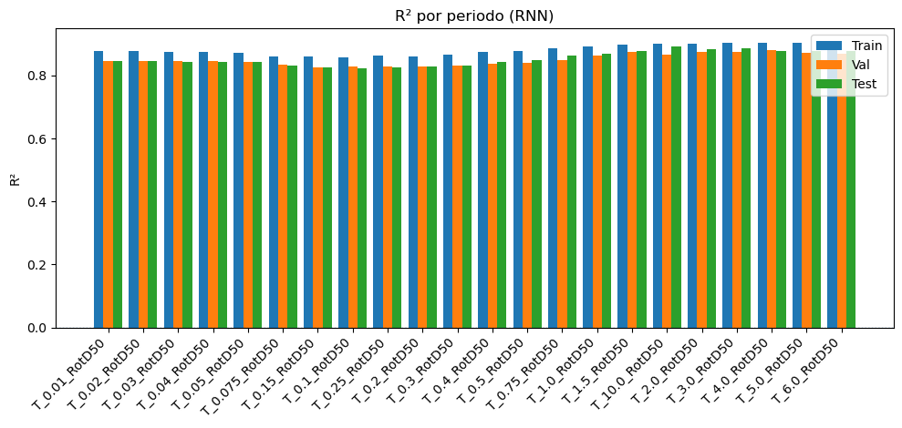
Recurrente Long-Short Term Memory#
# Datos -> numpy
Xtr = np.asarray(X_train_feats, dtype="float32")
Xva = np.asarray(X_val_feats, dtype="float32")
Xte = np.asarray(X_test_feats, dtype="float32")
Ytr = np.asarray(y_train, dtype="float32"); Yva = np.asarray(y_val, dtype="float32"); Yte = np.asarray(y_test, dtype="float32")
if Ytr.ndim == 1: Ytr = Ytr.reshape(-1,1)
if Yva.ndim == 1: Yva = Yva.reshape(-1,1)
if Yte.ndim == 1: Yte = Yte.reshape(-1,1)
n_features = Xtr.shape[1]
nT = Ytr.shape[1]
# RNN input shape: (batch, timesteps, features) — tratamos cada columna como timestep
Xtr_rnn = Xtr.reshape((-1, n_features, 1))
Xva_rnn = Xva.reshape((-1, n_features, 1))
Xte_rnn = Xte.reshape((-1, n_features, 1))
tf.keras.utils.set_random_seed(42)
inp = Input(shape=(n_features, 1))
x = layers.Bidirectional(layers.LSTM(64, return_sequences=True))(inp)
x = layers.LSTM(64)(x)
x = layers.Dense(64, activation="relu")(x)
#x = layers.Dropout(0.15)(x)
out = layers.Dense(nT, activation=None)(x)
modelLSTM = Model(inp, out)
modelLSTM.compile(optimizer=optimizers.Adam(1e-3), loss=masked_mse)
es = callbacks.EarlyStopping(monitor="val_loss", patience=20, restore_best_weights=True)
rlr = callbacks.ReduceLROnPlateau(monitor="val_loss", factor=0.5, patience=8, min_lr=1e-6)
history = modelLSTM.fit(
Xtr_rnn, Ytr,
validation_data=(Xva_rnn, Yva),
epochs=400, batch_size=64,
callbacks=[es, rlr], verbose=1
)
print("Test loss:", modelLSTM.evaluate(Xte_rnn, Yte, verbose=0))
y_pred_test = modelLSTM.predict(Xte_rnn) # (n_samples, nT)
Epoch 1/400
112/112 [==============================] - 5s 16ms/step - loss: 7.8776 - val_loss: 2.9209 - lr: 0.0010
Epoch 2/400
112/112 [==============================] - 1s 9ms/step - loss: 2.5320 - val_loss: 1.9178 - lr: 0.0010
Epoch 3/400
112/112 [==============================] - 1s 9ms/step - loss: 1.8636 - val_loss: 1.6211 - lr: 0.0010
Epoch 4/400
112/112 [==============================] - 1s 10ms/step - loss: 1.5448 - val_loss: 1.2285 - lr: 0.0010
Epoch 5/400
112/112 [==============================] - 1s 10ms/step - loss: 1.3387 - val_loss: 1.1036 - lr: 0.0010
Epoch 6/400
112/112 [==============================] - 1s 9ms/step - loss: 1.2159 - val_loss: 1.0760 - lr: 0.0010
Epoch 7/400
112/112 [==============================] - 1s 9ms/step - loss: 1.1547 - val_loss: 1.0599 - lr: 0.0010
Epoch 8/400
112/112 [==============================] - 1s 9ms/step - loss: 1.0523 - val_loss: 0.9451 - lr: 0.0010
Epoch 9/400
112/112 [==============================] - 1s 9ms/step - loss: 0.9761 - val_loss: 0.9646 - lr: 0.0010
Epoch 10/400
112/112 [==============================] - 1s 9ms/step - loss: 0.9278 - val_loss: 1.1216 - lr: 0.0010
Epoch 11/400
112/112 [==============================] - 1s 9ms/step - loss: 0.8463 - val_loss: 0.7644 - lr: 0.0010
Epoch 12/400
112/112 [==============================] - 1s 9ms/step - loss: 0.8018 - val_loss: 0.7202 - lr: 0.0010
Epoch 13/400
112/112 [==============================] - 1s 9ms/step - loss: 0.8239 - val_loss: 0.7352 - lr: 0.0010
Epoch 14/400
112/112 [==============================] - 1s 9ms/step - loss: 0.7499 - val_loss: 0.6666 - lr: 0.0010
Epoch 15/400
112/112 [==============================] - 1s 9ms/step - loss: 0.7736 - val_loss: 0.7402 - lr: 0.0010
Epoch 16/400
112/112 [==============================] - 1s 9ms/step - loss: 0.7756 - val_loss: 0.8465 - lr: 0.0010
Epoch 17/400
112/112 [==============================] - 1s 9ms/step - loss: 0.8057 - val_loss: 0.8071 - lr: 0.0010
Epoch 18/400
112/112 [==============================] - 1s 9ms/step - loss: 0.7327 - val_loss: 0.9269 - lr: 0.0010
Epoch 19/400
112/112 [==============================] - 1s 9ms/step - loss: 0.7281 - val_loss: 0.7450 - lr: 0.0010
Epoch 20/400
112/112 [==============================] - 1s 9ms/step - loss: 0.7077 - val_loss: 0.6682 - lr: 0.0010
Epoch 21/400
112/112 [==============================] - 1s 9ms/step - loss: 0.6975 - val_loss: 0.7130 - lr: 0.0010
Epoch 22/400
112/112 [==============================] - 1s 9ms/step - loss: 0.6973 - val_loss: 0.6665 - lr: 0.0010
Epoch 23/400
112/112 [==============================] - 1s 9ms/step - loss: 0.6542 - val_loss: 0.6448 - lr: 5.0000e-04
Epoch 24/400
112/112 [==============================] - 1s 9ms/step - loss: 0.6576 - val_loss: 0.6453 - lr: 5.0000e-04
Epoch 25/400
112/112 [==============================] - 1s 9ms/step - loss: 0.6628 - val_loss: 0.6569 - lr: 5.0000e-04
Epoch 26/400
112/112 [==============================] - 1s 9ms/step - loss: 0.6736 - val_loss: 0.6425 - lr: 5.0000e-04
Epoch 27/400
112/112 [==============================] - 1s 9ms/step - loss: 0.6490 - val_loss: 0.6382 - lr: 5.0000e-04
Epoch 28/400
112/112 [==============================] - 1s 9ms/step - loss: 0.6593 - val_loss: 0.6861 - lr: 5.0000e-04
Epoch 29/400
112/112 [==============================] - 1s 9ms/step - loss: 0.6739 - val_loss: 0.6877 - lr: 5.0000e-04
Epoch 30/400
112/112 [==============================] - 1s 9ms/step - loss: 0.6628 - val_loss: 0.6326 - lr: 5.0000e-04
Epoch 31/400
112/112 [==============================] - 1s 9ms/step - loss: 0.6515 - val_loss: 0.6740 - lr: 5.0000e-04
Epoch 32/400
112/112 [==============================] - 1s 9ms/step - loss: 0.6516 - val_loss: 0.6491 - lr: 5.0000e-04
Epoch 33/400
112/112 [==============================] - 1s 9ms/step - loss: 0.6492 - val_loss: 0.6679 - lr: 5.0000e-04
Epoch 34/400
112/112 [==============================] - 1s 10ms/step - loss: 0.6468 - val_loss: 0.6370 - lr: 5.0000e-04
Epoch 35/400
112/112 [==============================] - 1s 9ms/step - loss: 0.6330 - val_loss: 0.6274 - lr: 5.0000e-04
Epoch 36/400
112/112 [==============================] - 1s 9ms/step - loss: 0.6449 - val_loss: 0.6385 - lr: 5.0000e-04
Epoch 37/400
112/112 [==============================] - 1s 9ms/step - loss: 0.6458 - val_loss: 0.7079 - lr: 5.0000e-04
Epoch 38/400
112/112 [==============================] - 1s 9ms/step - loss: 0.6405 - val_loss: 0.7636 - lr: 5.0000e-04
Epoch 39/400
112/112 [==============================] - 1s 9ms/step - loss: 0.6831 - val_loss: 0.6566 - lr: 5.0000e-04
Epoch 40/400
112/112 [==============================] - 1s 9ms/step - loss: 0.6468 - val_loss: 0.6812 - lr: 5.0000e-04
Epoch 41/400
112/112 [==============================] - 1s 9ms/step - loss: 0.6286 - val_loss: 0.6186 - lr: 5.0000e-04
Epoch 42/400
112/112 [==============================] - 1s 9ms/step - loss: 0.6358 - val_loss: 0.6258 - lr: 5.0000e-04
Epoch 43/400
112/112 [==============================] - 1s 9ms/step - loss: 0.6492 - val_loss: 0.6450 - lr: 5.0000e-04
Epoch 44/400
112/112 [==============================] - 1s 9ms/step - loss: 0.6373 - val_loss: 0.7707 - lr: 5.0000e-04
Epoch 45/400
112/112 [==============================] - 1s 9ms/step - loss: 0.6422 - val_loss: 0.6120 - lr: 5.0000e-04
Epoch 46/400
112/112 [==============================] - 1s 9ms/step - loss: 0.6406 - val_loss: 0.6272 - lr: 5.0000e-04
Epoch 47/400
112/112 [==============================] - 1s 9ms/step - loss: 0.6407 - val_loss: 0.6457 - lr: 5.0000e-04
Epoch 48/400
112/112 [==============================] - 1s 9ms/step - loss: 0.6306 - val_loss: 0.6195 - lr: 5.0000e-04
Epoch 49/400
112/112 [==============================] - 1s 9ms/step - loss: 0.6366 - val_loss: 0.6060 - lr: 5.0000e-04
Epoch 50/400
112/112 [==============================] - 1s 9ms/step - loss: 0.6330 - val_loss: 0.6148 - lr: 5.0000e-04
Epoch 51/400
112/112 [==============================] - 1s 9ms/step - loss: 0.6146 - val_loss: 0.7032 - lr: 5.0000e-04
Epoch 52/400
112/112 [==============================] - 1s 9ms/step - loss: 0.6308 - val_loss: 0.6185 - lr: 5.0000e-04
Epoch 53/400
112/112 [==============================] - 1s 9ms/step - loss: 0.6248 - val_loss: 0.6524 - lr: 5.0000e-04
Epoch 54/400
112/112 [==============================] - 1s 9ms/step - loss: 0.6208 - val_loss: 0.6709 - lr: 5.0000e-04
Epoch 55/400
112/112 [==============================] - 1s 9ms/step - loss: 0.6382 - val_loss: 0.6408 - lr: 5.0000e-04
Epoch 56/400
112/112 [==============================] - 1s 9ms/step - loss: 0.6271 - val_loss: 0.6107 - lr: 5.0000e-04
Epoch 57/400
112/112 [==============================] - 1s 9ms/step - loss: 0.6232 - val_loss: 0.6224 - lr: 5.0000e-04
Epoch 58/400
112/112 [==============================] - 1s 10ms/step - loss: 0.5969 - val_loss: 0.5905 - lr: 2.5000e-04
Epoch 59/400
112/112 [==============================] - 1s 9ms/step - loss: 0.6007 - val_loss: 0.6166 - lr: 2.5000e-04
Epoch 60/400
112/112 [==============================] - 1s 9ms/step - loss: 0.6005 - val_loss: 0.5939 - lr: 2.5000e-04
Epoch 61/400
112/112 [==============================] - 1s 9ms/step - loss: 0.5924 - val_loss: 0.6037 - lr: 2.5000e-04
Epoch 62/400
112/112 [==============================] - 1s 9ms/step - loss: 0.5979 - val_loss: 0.5879 - lr: 2.5000e-04
Epoch 63/400
112/112 [==============================] - 1s 9ms/step - loss: 0.5978 - val_loss: 0.5840 - lr: 2.5000e-04
Epoch 64/400
112/112 [==============================] - 1s 10ms/step - loss: 0.5964 - val_loss: 0.6032 - lr: 2.5000e-04
Epoch 65/400
112/112 [==============================] - 1s 9ms/step - loss: 0.5981 - val_loss: 0.5868 - lr: 2.5000e-04
Epoch 66/400
112/112 [==============================] - 1s 9ms/step - loss: 0.6022 - val_loss: 0.5886 - lr: 2.5000e-04
Epoch 67/400
112/112 [==============================] - 1s 9ms/step - loss: 0.5986 - val_loss: 0.6047 - lr: 2.5000e-04
Epoch 68/400
112/112 [==============================] - 1s 9ms/step - loss: 0.6059 - val_loss: 0.5965 - lr: 2.5000e-04
Epoch 69/400
112/112 [==============================] - 1s 9ms/step - loss: 0.5973 - val_loss: 0.5929 - lr: 2.5000e-04
Epoch 70/400
112/112 [==============================] - 1s 9ms/step - loss: 0.6002 - val_loss: 0.5830 - lr: 2.5000e-04
Epoch 71/400
112/112 [==============================] - 1s 9ms/step - loss: 0.6035 - val_loss: 0.5832 - lr: 2.5000e-04
Epoch 72/400
112/112 [==============================] - 1s 9ms/step - loss: 0.6023 - val_loss: 0.6507 - lr: 2.5000e-04
Epoch 73/400
112/112 [==============================] - 1s 9ms/step - loss: 0.6009 - val_loss: 0.5815 - lr: 2.5000e-04
Epoch 74/400
112/112 [==============================] - 1s 9ms/step - loss: 0.5948 - val_loss: 0.5828 - lr: 2.5000e-04
Epoch 75/400
112/112 [==============================] - 1s 9ms/step - loss: 0.5894 - val_loss: 0.6010 - lr: 2.5000e-04
Epoch 76/400
112/112 [==============================] - 1s 9ms/step - loss: 0.5949 - val_loss: 0.5873 - lr: 2.5000e-04
Epoch 77/400
112/112 [==============================] - 1s 9ms/step - loss: 0.5943 - val_loss: 0.5922 - lr: 2.5000e-04
Epoch 78/400
112/112 [==============================] - 1s 9ms/step - loss: 0.5859 - val_loss: 0.5845 - lr: 2.5000e-04
Epoch 79/400
112/112 [==============================] - 1s 9ms/step - loss: 0.5910 - val_loss: 0.6013 - lr: 2.5000e-04
Epoch 80/400
112/112 [==============================] - 1s 9ms/step - loss: 0.5900 - val_loss: 0.5833 - lr: 2.5000e-04
Epoch 81/400
112/112 [==============================] - 1s 9ms/step - loss: 0.5809 - val_loss: 0.5979 - lr: 2.5000e-04
Epoch 82/400
112/112 [==============================] - 1s 9ms/step - loss: 0.5817 - val_loss: 0.5746 - lr: 1.2500e-04
Epoch 83/400
112/112 [==============================] - 1s 9ms/step - loss: 0.5872 - val_loss: 0.5730 - lr: 1.2500e-04
Epoch 84/400
112/112 [==============================] - 1s 9ms/step - loss: 0.5769 - val_loss: 0.5854 - lr: 1.2500e-04
Epoch 85/400
112/112 [==============================] - 1s 9ms/step - loss: 0.5796 - val_loss: 0.5746 - lr: 1.2500e-04
Epoch 86/400
112/112 [==============================] - 1s 9ms/step - loss: 0.5764 - val_loss: 0.5803 - lr: 1.2500e-04
Epoch 87/400
112/112 [==============================] - 1s 9ms/step - loss: 0.5747 - val_loss: 0.5762 - lr: 1.2500e-04
Epoch 88/400
112/112 [==============================] - 1s 9ms/step - loss: 0.5753 - val_loss: 0.5722 - lr: 1.2500e-04
Epoch 89/400
112/112 [==============================] - 1s 9ms/step - loss: 0.5782 - val_loss: 0.5821 - lr: 1.2500e-04
Epoch 90/400
112/112 [==============================] - 1s 9ms/step - loss: 0.5776 - val_loss: 0.5798 - lr: 1.2500e-04
Epoch 91/400
112/112 [==============================] - 1s 9ms/step - loss: 0.5758 - val_loss: 0.5958 - lr: 1.2500e-04
Epoch 92/400
112/112 [==============================] - 1s 9ms/step - loss: 0.5811 - val_loss: 0.5833 - lr: 1.2500e-04
Epoch 93/400
112/112 [==============================] - 1s 9ms/step - loss: 0.5753 - val_loss: 0.5690 - lr: 1.2500e-04
Epoch 94/400
112/112 [==============================] - 1s 10ms/step - loss: 0.5765 - val_loss: 0.5775 - lr: 1.2500e-04
Epoch 95/400
112/112 [==============================] - 1s 9ms/step - loss: 0.5754 - val_loss: 0.5698 - lr: 1.2500e-04
Epoch 96/400
112/112 [==============================] - 1s 9ms/step - loss: 0.5768 - val_loss: 0.5757 - lr: 1.2500e-04
Epoch 97/400
112/112 [==============================] - 1s 9ms/step - loss: 0.5749 - val_loss: 0.5743 - lr: 1.2500e-04
Epoch 98/400
112/112 [==============================] - 1s 10ms/step - loss: 0.5744 - val_loss: 0.5654 - lr: 1.2500e-04
Epoch 99/400
112/112 [==============================] - 1s 9ms/step - loss: 0.5716 - val_loss: 0.5861 - lr: 1.2500e-04
Epoch 100/400
112/112 [==============================] - 1s 9ms/step - loss: 0.5700 - val_loss: 0.5693 - lr: 1.2500e-04
Epoch 101/400
112/112 [==============================] - 1s 9ms/step - loss: 0.5757 - val_loss: 0.5729 - lr: 1.2500e-04
Epoch 102/400
112/112 [==============================] - 1s 9ms/step - loss: 0.5741 - val_loss: 0.5683 - lr: 1.2500e-04
Epoch 103/400
112/112 [==============================] - 1s 9ms/step - loss: 0.5774 - val_loss: 0.5647 - lr: 1.2500e-04
Epoch 104/400
112/112 [==============================] - 1s 9ms/step - loss: 0.5710 - val_loss: 0.5745 - lr: 1.2500e-04
Epoch 105/400
112/112 [==============================] - 1s 9ms/step - loss: 0.5694 - val_loss: 0.6130 - lr: 1.2500e-04
Epoch 106/400
112/112 [==============================] - 1s 9ms/step - loss: 0.5733 - val_loss: 0.5767 - lr: 1.2500e-04
Epoch 107/400
112/112 [==============================] - 1s 9ms/step - loss: 0.5732 - val_loss: 0.5813 - lr: 1.2500e-04
Epoch 108/400
112/112 [==============================] - 1s 9ms/step - loss: 0.5673 - val_loss: 0.5711 - lr: 1.2500e-04
Epoch 109/400
112/112 [==============================] - 1s 9ms/step - loss: 0.5683 - val_loss: 0.5652 - lr: 1.2500e-04
Epoch 110/400
112/112 [==============================] - 1s 9ms/step - loss: 0.5684 - val_loss: 0.5603 - lr: 1.2500e-04
Epoch 111/400
112/112 [==============================] - 1s 9ms/step - loss: 0.5666 - val_loss: 0.5587 - lr: 1.2500e-04
Epoch 112/400
112/112 [==============================] - 1s 9ms/step - loss: 0.5718 - val_loss: 0.5725 - lr: 1.2500e-04
Epoch 113/400
112/112 [==============================] - 1s 9ms/step - loss: 0.5669 - val_loss: 0.5609 - lr: 1.2500e-04
Epoch 114/400
112/112 [==============================] - 1s 9ms/step - loss: 0.5689 - val_loss: 0.5942 - lr: 1.2500e-04
Epoch 115/400
112/112 [==============================] - 1s 9ms/step - loss: 0.5716 - val_loss: 0.5897 - lr: 1.2500e-04
Epoch 116/400
112/112 [==============================] - 1s 9ms/step - loss: 0.5662 - val_loss: 0.5673 - lr: 1.2500e-04
Epoch 117/400
112/112 [==============================] - 1s 9ms/step - loss: 0.5636 - val_loss: 0.5744 - lr: 1.2500e-04
Epoch 118/400
112/112 [==============================] - 1s 9ms/step - loss: 0.5636 - val_loss: 0.5664 - lr: 1.2500e-04
Epoch 119/400
112/112 [==============================] - 1s 9ms/step - loss: 0.5627 - val_loss: 0.5572 - lr: 1.2500e-04
Epoch 120/400
112/112 [==============================] - 1s 9ms/step - loss: 0.5647 - val_loss: 0.5913 - lr: 1.2500e-04
Epoch 121/400
112/112 [==============================] - 1s 9ms/step - loss: 0.5605 - val_loss: 0.5616 - lr: 1.2500e-04
Epoch 122/400
112/112 [==============================] - 1s 10ms/step - loss: 0.5618 - val_loss: 0.5584 - lr: 1.2500e-04
Epoch 123/400
112/112 [==============================] - 1s 10ms/step - loss: 0.5659 - val_loss: 0.5588 - lr: 1.2500e-04
Epoch 124/400
112/112 [==============================] - 1s 9ms/step - loss: 0.5581 - val_loss: 0.5578 - lr: 1.2500e-04
Epoch 125/400
112/112 [==============================] - 1s 9ms/step - loss: 0.5659 - val_loss: 0.5661 - lr: 1.2500e-04
Epoch 126/400
112/112 [==============================] - 1s 9ms/step - loss: 0.5603 - val_loss: 0.5538 - lr: 1.2500e-04
Epoch 127/400
112/112 [==============================] - 1s 9ms/step - loss: 0.5606 - val_loss: 0.5530 - lr: 1.2500e-04
Epoch 128/400
112/112 [==============================] - 1s 9ms/step - loss: 0.5605 - val_loss: 0.5533 - lr: 1.2500e-04
Epoch 129/400
112/112 [==============================] - 1s 9ms/step - loss: 0.5639 - val_loss: 0.5659 - lr: 1.2500e-04
Epoch 130/400
112/112 [==============================] - 1s 9ms/step - loss: 0.5586 - val_loss: 0.5573 - lr: 1.2500e-04
Epoch 131/400
112/112 [==============================] - 1s 9ms/step - loss: 0.5606 - val_loss: 0.5772 - lr: 1.2500e-04
Epoch 132/400
112/112 [==============================] - 1s 9ms/step - loss: 0.5546 - val_loss: 0.5695 - lr: 1.2500e-04
Epoch 133/400
112/112 [==============================] - 1s 9ms/step - loss: 0.5563 - val_loss: 0.5507 - lr: 1.2500e-04
Epoch 134/400
112/112 [==============================] - 1s 9ms/step - loss: 0.5555 - val_loss: 0.5653 - lr: 1.2500e-04
Epoch 135/400
112/112 [==============================] - 1s 9ms/step - loss: 0.5591 - val_loss: 0.5495 - lr: 1.2500e-04
Epoch 136/400
112/112 [==============================] - 1s 9ms/step - loss: 0.5553 - val_loss: 0.5565 - lr: 1.2500e-04
Epoch 137/400
112/112 [==============================] - 1s 9ms/step - loss: 0.5565 - val_loss: 0.5690 - lr: 1.2500e-04
Epoch 138/400
112/112 [==============================] - 1s 9ms/step - loss: 0.5564 - val_loss: 0.5610 - lr: 1.2500e-04
Epoch 139/400
112/112 [==============================] - 1s 9ms/step - loss: 0.5565 - val_loss: 0.5582 - lr: 1.2500e-04
Epoch 140/400
112/112 [==============================] - 1s 9ms/step - loss: 0.5505 - val_loss: 0.5579 - lr: 1.2500e-04
Epoch 141/400
112/112 [==============================] - 1s 9ms/step - loss: 0.5569 - val_loss: 0.5523 - lr: 1.2500e-04
Epoch 142/400
112/112 [==============================] - 1s 9ms/step - loss: 0.5521 - val_loss: 0.5516 - lr: 1.2500e-04
Epoch 143/400
112/112 [==============================] - 1s 9ms/step - loss: 0.5533 - val_loss: 0.5735 - lr: 1.2500e-04
Epoch 144/400
112/112 [==============================] - 1s 9ms/step - loss: 0.5491 - val_loss: 0.5519 - lr: 6.2500e-05
Epoch 145/400
112/112 [==============================] - 1s 9ms/step - loss: 0.5480 - val_loss: 0.5500 - lr: 6.2500e-05
Epoch 146/400
112/112 [==============================] - 1s 9ms/step - loss: 0.5452 - val_loss: 0.5495 - lr: 6.2500e-05
Epoch 147/400
112/112 [==============================] - 1s 9ms/step - loss: 0.5517 - val_loss: 0.5460 - lr: 6.2500e-05
Epoch 148/400
112/112 [==============================] - 1s 9ms/step - loss: 0.5442 - val_loss: 0.5496 - lr: 6.2500e-05
Epoch 149/400
112/112 [==============================] - 1s 9ms/step - loss: 0.5455 - val_loss: 0.5506 - lr: 6.2500e-05
Epoch 150/400
112/112 [==============================] - 1s 9ms/step - loss: 0.5451 - val_loss: 0.5490 - lr: 6.2500e-05
Epoch 151/400
112/112 [==============================] - 1s 10ms/step - loss: 0.5464 - val_loss: 0.5458 - lr: 6.2500e-05
Epoch 152/400
112/112 [==============================] - 1s 9ms/step - loss: 0.5461 - val_loss: 0.5457 - lr: 6.2500e-05
Epoch 153/400
112/112 [==============================] - 1s 9ms/step - loss: 0.5433 - val_loss: 0.5644 - lr: 6.2500e-05
Epoch 154/400
112/112 [==============================] - 1s 9ms/step - loss: 0.5453 - val_loss: 0.5460 - lr: 6.2500e-05
Epoch 155/400
112/112 [==============================] - 1s 9ms/step - loss: 0.5459 - val_loss: 0.5489 - lr: 6.2500e-05
Epoch 156/400
112/112 [==============================] - 1s 9ms/step - loss: 0.5452 - val_loss: 0.5492 - lr: 6.2500e-05
Epoch 157/400
112/112 [==============================] - 1s 9ms/step - loss: 0.5439 - val_loss: 0.5528 - lr: 6.2500e-05
Epoch 158/400
112/112 [==============================] - 1s 9ms/step - loss: 0.5429 - val_loss: 0.5447 - lr: 6.2500e-05
Epoch 159/400
112/112 [==============================] - 1s 9ms/step - loss: 0.5434 - val_loss: 0.5481 - lr: 6.2500e-05
Epoch 160/400
112/112 [==============================] - 1s 9ms/step - loss: 0.5449 - val_loss: 0.5587 - lr: 6.2500e-05
Epoch 161/400
112/112 [==============================] - 1s 9ms/step - loss: 0.5446 - val_loss: 0.5542 - lr: 6.2500e-05
Epoch 162/400
112/112 [==============================] - 1s 9ms/step - loss: 0.5451 - val_loss: 0.5477 - lr: 6.2500e-05
Epoch 163/400
112/112 [==============================] - 1s 9ms/step - loss: 0.5435 - val_loss: 0.5559 - lr: 6.2500e-05
Epoch 164/400
112/112 [==============================] - 1s 9ms/step - loss: 0.5418 - val_loss: 0.5477 - lr: 6.2500e-05
Epoch 165/400
112/112 [==============================] - 1s 9ms/step - loss: 0.5436 - val_loss: 0.5466 - lr: 6.2500e-05
Epoch 166/400
112/112 [==============================] - 1s 9ms/step - loss: 0.5425 - val_loss: 0.5477 - lr: 6.2500e-05
Epoch 167/400
112/112 [==============================] - 1s 9ms/step - loss: 0.5401 - val_loss: 0.5498 - lr: 3.1250e-05
Epoch 168/400
112/112 [==============================] - 1s 9ms/step - loss: 0.5383 - val_loss: 0.5440 - lr: 3.1250e-05
Epoch 169/400
112/112 [==============================] - 1s 9ms/step - loss: 0.5384 - val_loss: 0.5460 - lr: 3.1250e-05
Epoch 170/400
112/112 [==============================] - 1s 9ms/step - loss: 0.5381 - val_loss: 0.5469 - lr: 3.1250e-05
Epoch 171/400
112/112 [==============================] - 1s 9ms/step - loss: 0.5389 - val_loss: 0.5424 - lr: 3.1250e-05
Epoch 172/400
112/112 [==============================] - 1s 9ms/step - loss: 0.5389 - val_loss: 0.5464 - lr: 3.1250e-05
Epoch 173/400
112/112 [==============================] - 1s 9ms/step - loss: 0.5398 - val_loss: 0.5512 - lr: 3.1250e-05
Epoch 174/400
112/112 [==============================] - 1s 9ms/step - loss: 0.5397 - val_loss: 0.5483 - lr: 3.1250e-05
Epoch 175/400
112/112 [==============================] - 1s 9ms/step - loss: 0.5376 - val_loss: 0.5608 - lr: 3.1250e-05
Epoch 176/400
112/112 [==============================] - 1s 9ms/step - loss: 0.5398 - val_loss: 0.5477 - lr: 3.1250e-05
Epoch 177/400
112/112 [==============================] - 1s 9ms/step - loss: 0.5372 - val_loss: 0.5491 - lr: 3.1250e-05
Epoch 178/400
112/112 [==============================] - 1s 9ms/step - loss: 0.5395 - val_loss: 0.5474 - lr: 3.1250e-05
Epoch 179/400
112/112 [==============================] - 1s 9ms/step - loss: 0.5376 - val_loss: 0.5480 - lr: 3.1250e-05
Epoch 180/400
112/112 [==============================] - 1s 9ms/step - loss: 0.5352 - val_loss: 0.5439 - lr: 1.5625e-05
Epoch 181/400
112/112 [==============================] - 1s 10ms/step - loss: 0.5363 - val_loss: 0.5438 - lr: 1.5625e-05
Epoch 182/400
112/112 [==============================] - 1s 9ms/step - loss: 0.5358 - val_loss: 0.5447 - lr: 1.5625e-05
Epoch 183/400
112/112 [==============================] - 1s 9ms/step - loss: 0.5357 - val_loss: 0.5438 - lr: 1.5625e-05
Epoch 184/400
112/112 [==============================] - 1s 9ms/step - loss: 0.5344 - val_loss: 0.5462 - lr: 1.5625e-05
Epoch 185/400
112/112 [==============================] - 1s 9ms/step - loss: 0.5356 - val_loss: 0.5465 - lr: 1.5625e-05
Epoch 186/400
112/112 [==============================] - 1s 9ms/step - loss: 0.5354 - val_loss: 0.5439 - lr: 1.5625e-05
Epoch 187/400
112/112 [==============================] - 1s 9ms/step - loss: 0.5349 - val_loss: 0.5445 - lr: 1.5625e-05
Epoch 188/400
112/112 [==============================] - 1s 9ms/step - loss: 0.5348 - val_loss: 0.5461 - lr: 7.8125e-06
Epoch 189/400
112/112 [==============================] - 1s 9ms/step - loss: 0.5347 - val_loss: 0.5451 - lr: 7.8125e-06
Epoch 190/400
112/112 [==============================] - 1s 9ms/step - loss: 0.5345 - val_loss: 0.5433 - lr: 7.8125e-06
Epoch 191/400
112/112 [==============================] - 1s 9ms/step - loss: 0.5344 - val_loss: 0.5441 - lr: 7.8125e-06
Test loss: 0.5541961789131165
48/48 [==============================] - 1s 5ms/step
# ====== BLOQUE 2: Métricas por periodo (TEST) ======
# Nombres de salidas: usa tu lista de columnas objetivo
y_names = list(Sa_Crustal) if 'Sa_Crustal' in globals() else [f"Y_{j}" for j in range(Yte.shape[1])]
if len(y_names) != Yte.shape[1]: y_names = [f"Y_{j}" for j in range(Yte.shape[1])]
# Si entrenaste en log(Sa) y quieres métricas en escala original, activa:
EXP_BACKTRANS = False
Y_te_eval = np.exp(Yte) if EXP_BACKTRANS else Yte
Yp_te_eval = np.exp(y_pred_test) if EXP_BACKTRANS else y_pred_test
rows_test = []
for j, name in enumerate(y_names):
y_t = Y_te_eval[:, j]; y_p = Yp_te_eval[:, j]
m = np.isfinite(y_t) & np.isfinite(y_p)
if m.sum() == 0:
rows_test.append({"Y": name, "RMSE": np.nan, "MSE": np.nan, "MAE": np.nan, "MAPE_%": np.nan, "R2": np.nan})
continue
err = y_p[m] - y_t[m]
mse = np.mean(err**2)
rmse = np.sqrt(mse)
mae = np.mean(np.abs(err))
mm = (np.abs(y_t) > 1e-12) & m
mape = np.mean(np.abs((y_p[mm] - y_t[mm]) / y_t[mm])) * 100.0 if mm.sum() else np.nan
y_mean = np.mean(y_t[m])
ss_res = np.sum((y_t[m] - y_p[m])**2)
ss_tot = np.sum((y_t[m] - y_mean)**2)
r2 = 1.0 - ss_res / (ss_tot + 1e-12)
rows_test.append({"Y": name, "RMSE": rmse, "MSE": mse, "MAE": mae, "MAPE_%": mape, "R2": r2})
df_test_metrics_lstm = pd.DataFrame(rows_test).set_index("Y").sort_index()
df_test_metrics_lstm
| RMSE | MSE | MAE | MAPE_% | R2 | |
|---|---|---|---|---|---|
| Y | |||||
| T_0.01_RotD50 | 0.708228 | 0.501587 | 0.553093 | 18.303083 | 0.823619 |
| T_0.02_RotD50 | 0.708001 | 0.501266 | 0.552164 | 17.998748 | 0.824392 |
| T_0.03_RotD50 | 0.714259 | 0.510166 | 0.556556 | 18.226142 | 0.822692 |
| T_0.04_RotD50 | 0.721994 | 0.521275 | 0.562871 | 21.558917 | 0.819753 |
| T_0.05_RotD50 | 0.727581 | 0.529374 | 0.570298 | 22.020037 | 0.818859 |
| T_0.075_RotD50 | 0.766449 | 0.587444 | 0.600036 | 28.852493 | 0.802225 |
| T_0.15_RotD50 | 0.766366 | 0.587316 | 0.598871 | 42.282620 | 0.801303 |
| T_0.1_RotD50 | 0.777493 | 0.604495 | 0.611422 | 34.886858 | 0.796634 |
| T_0.25_RotD50 | 0.757916 | 0.574437 | 0.601566 | 51.183671 | 0.807031 |
| T_0.2_RotD50 | 0.760627 | 0.578554 | 0.599670 | 50.239307 | 0.804040 |
| T_0.3_RotD50 | 0.753500 | 0.567762 | 0.597866 | 40.941086 | 0.811964 |
| T_0.4_RotD50 | 0.742200 | 0.550861 | 0.588806 | 28.271815 | 0.821679 |
| T_0.5_RotD50 | 0.748984 | 0.560977 | 0.594687 | 31.131011 | 0.826697 |
| T_0.75_RotD50 | 0.751483 | 0.564726 | 0.592749 | 38.797405 | 0.841313 |
| T_1.0_RotD50 | 0.762437 | 0.581310 | 0.598748 | 38.495851 | 0.849159 |
| T_1.5_RotD50 | 0.764447 | 0.584379 | 0.604336 | 20.349406 | 0.859955 |
| T_10.0_RotD50 | 0.652340 | 0.425548 | 0.523789 | 8.556943 | 0.874983 |
| T_2.0_RotD50 | 0.756354 | 0.572072 | 0.598323 | 14.958803 | 0.866862 |
| T_3.0_RotD50 | 0.742160 | 0.550801 | 0.592121 | 12.808111 | 0.870821 |
| T_4.0_RotD50 | 0.729592 | 0.532305 | 0.581680 | 11.607727 | 0.864858 |
| T_5.0_RotD50 | 0.735905 | 0.541556 | 0.585577 | 11.223939 | 0.859586 |
| T_6.0_RotD50 | 0.737038 | 0.543225 | 0.586136 | 10.943447 | 0.859923 |
# ====== BLOQUE 3: Tres DataFrames (TRAIN / VAL / TEST) ======
y_pred_train = modelLSTM.predict(Xtr_rnn)
y_pred_val = modelLSTM.predict(Xva_rnn)
Y_tr_eval = np.exp(Ytr) if EXP_BACKTRANS else Ytr
Y_va_eval = np.exp(Yva) if EXP_BACKTRANS else Yva
Y_te_eval = np.exp(Yte) if EXP_BACKTRANS else Yte
Yp_tr_eval = np.exp(y_pred_train) if EXP_BACKTRANS else y_pred_train
Yp_va_eval = np.exp(y_pred_val) if EXP_BACKTRANS else y_pred_val
Yp_te_eval = np.exp(y_pred_test) if EXP_BACKTRANS else y_pred_test
def _to_df(Y_true, Y_pred, names):
rows = []
for j, name in enumerate(names):
y_t = Y_true[:, j]; y_p = Y_pred[:, j]
m = np.isfinite(y_t) & np.isfinite(y_p)
if m.sum() == 0:
rows.append({"Y": name, "RMSE": np.nan, "MSE": np.nan, "MAE": np.nan, "MAPE_%": np.nan, "R2": np.nan})
continue
err = y_p[m] - y_t[m]
mse = np.mean(err**2); rmse = np.sqrt(mse); mae = np.mean(np.abs(err))
mm = (np.abs(y_t) > 1e-12) & m
mape = np.mean(np.abs((y_p[mm] - y_t[mm]) / y_t[mm])) * 100.0 if mm.sum() else np.nan
y_mean = np.mean(y_t[m]); ss_res = np.sum((y_t[m] - y_p[m])**2); ss_tot = np.sum((y_t[m] - y_mean)**2)
r2 = 1.0 - ss_res / (ss_tot + 1e-12)
rows.append({"Y": name, "RMSE": rmse, "MSE": mse, "MAE": mae, "MAPE_%": mape, "R2": r2})
return pd.DataFrame(rows).set_index("Y").sort_index()
df_train_metrics_lstm = _to_df(Y_tr_eval, Yp_tr_eval, y_names)
df_val_metrics_lstm = _to_df(Y_va_eval, Yp_va_eval, y_names)
df_test_metrics_lstm = _to_df(Y_te_eval, Yp_te_eval, y_names)
224/224 [==============================] - 2s 4ms/step
48/48 [==============================] - 0s 3ms/step
# ====== BLOQUE 4: Barras de R² por periodo (TRAIN / VAL / TEST) ======
import matplotlib.pyplot as plt
ys = np.array(df_test_metrics_lstm.index.tolist())
x = np.arange(len(ys)); w = 0.27
plt.figure(figsize=(10, 4.8))
plt.bar(x - w, df_train_metrics_lstm["R2"].values, width=w, label="Train")
plt.bar(x, df_val_metrics_lstm["R2"].values, width=w, label="Val")
plt.bar(x + w, df_test_metrics_lstm["R2"].values, width=w, label="Test")
plt.axhline(0.0, linestyle=":", linewidth=1)
plt.xticks(x, ys, rotation=45, ha="right")
plt.ylabel("R²"); plt.title("R² por periodo (LSTM)")
plt.legend(); plt.tight_layout(); plt.show()
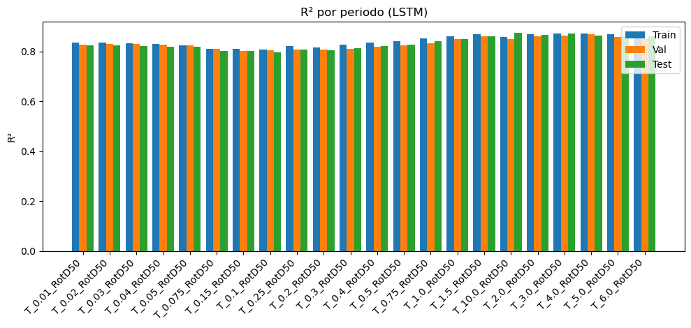
Resumen global#
# ====== BLOQUE 1: Unificar métricas (TEST) de varios modelos en un solo DataFrame ======
import numpy as np
import pandas as pd
# SUPONE que ya tienes los DataFrames de métricas por periodo (TEST) con índice=nombre del periodo:
# df_test_metrics_mlp
# df_test_metrics_cnn
# df_test_metrics_rnn # o df_test_metrics_lstm (usa el que tengas)
#
# Si tus variables se llaman distinto, ajústalas aquí:
models = {}
if 'df_test_metrics_mlp' in globals():
models['MLP'] = df_test_metrics_mlp.copy()
if 'df_test_metrics_cnn' in globals():
models['CNN'] = df_test_metrics_cnn.copy()
# Usa RNN o LSTM según lo que tengas calculado:
if 'df_test_metrics_rnn' in globals():
models['RNN'] = df_test_metrics_rnn.copy()
if 'df_test_metrics_lstm' in globals():
models['LSTM'] = df_test_metrics_lstm.copy()
# Quedarnos solo con los periodos comunes a TODOS los modelos para comparación justa
common_Ys = None
for name, dfm in models.items():
common_Ys = set(dfm.index) if common_Ys is None else (common_Ys & set(dfm.index))
common_Ys = sorted(list(common_Ys))
# Concatenar en formato largo
long_rows = []
for name, dfm in models.items():
sub = dfm.loc[common_Ys, ['RMSE','MSE','MAE','MAPE_%','R2']].copy()
sub['model'] = name
sub['Y'] = sub.index
long_rows.append(sub.reset_index(drop=True))
df_all = pd.concat(long_rows, ignore_index=True)
# (Opcional) ordenar por Y y modelo
df_all = df_all.sort_values(['Y','model']).reset_index(drop=True)
df_all # columnas: ['RMSE','MSE','MAE','MAPE_%','R2','model','Y']
| RMSE | MSE | MAE | MAPE_% | R2 | model | Y | |
|---|---|---|---|---|---|---|---|
| 0 | 0.698014 | 0.487223 | 0.544837 | 17.551971 | 0.828670 | CNN | T_0.01_RotD50 |
| 1 | 0.708228 | 0.501587 | 0.553093 | 18.303083 | 0.823619 | LSTM | T_0.01_RotD50 |
| 2 | 0.680621 | 0.463245 | 0.531051 | 17.865397 | 0.837102 | MLP | T_0.01_RotD50 |
| 3 | 0.664197 | 0.441158 | 0.515871 | 17.250478 | 0.844869 | RNN | T_0.01_RotD50 |
| 4 | 0.698728 | 0.488221 | 0.544655 | 17.320108 | 0.828962 | CNN | T_0.02_RotD50 |
| ... | ... | ... | ... | ... | ... | ... | ... |
| 83 | 0.687410 | 0.472532 | 0.540232 | 10.312716 | 0.877483 | RNN | T_5.0_RotD50 |
| 84 | 0.732917 | 0.537168 | 0.580140 | 10.741602 | 0.861485 | CNN | T_6.0_RotD50 |
| 85 | 0.737038 | 0.543225 | 0.586136 | 10.943447 | 0.859923 | LSTM | T_6.0_RotD50 |
| 86 | 0.739408 | 0.546724 | 0.577740 | 10.844616 | 0.859021 | MLP | T_6.0_RotD50 |
| 87 | 0.690089 | 0.476223 | 0.537141 | 9.968140 | 0.877200 | RNN | T_6.0_RotD50 |
88 rows × 7 columns
# ====== BLOQUE 2: Barras agrupadas (R2) por periodo y por modelo ======
import numpy as np
import matplotlib.pyplot as plt
ys = sorted(df_all['Y'].unique().tolist())
mods = sorted(df_all['model'].unique().tolist())
x = np.arange(len(ys))
w = 0.8 / max(1, len(mods)) # ancho de barra adaptativo
plt.figure(figsize=(max(10, len(ys)*0.5), 5))
for k, m in enumerate(mods):
r2_vals = df_all[df_all['model']==m].set_index('Y').loc[ys, 'R2'].values
plt.bar(x + (k - (len(mods)-1)/2)*w, r2_vals, width=w, label=m)
plt.axhline(0.0, linestyle=":", linewidth=1)
plt.xticks(x, ys, rotation=45, ha="right")
plt.ylabel("R²")
plt.title("Comparación de R² por periodo y modelo (TEST)")
plt.legend(ncols=min(len(mods), 4))
plt.tight_layout()
plt.show()
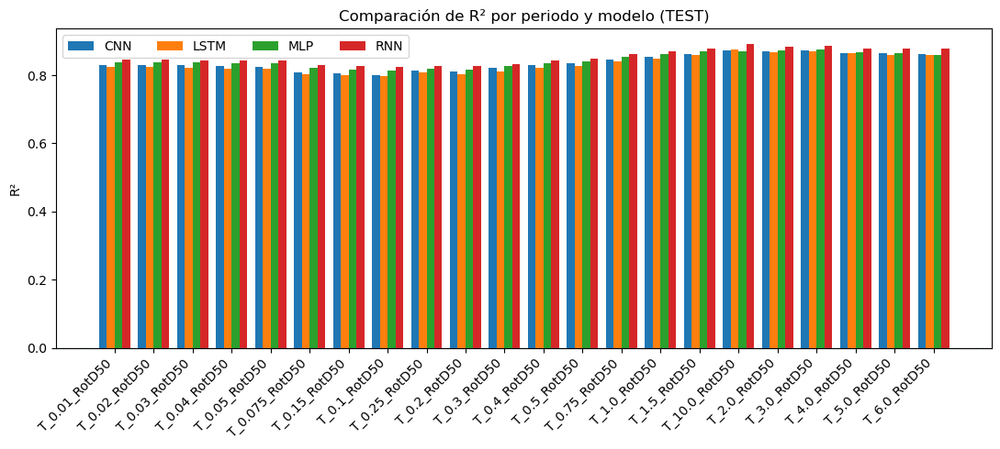
# ====== BLOQUE 3: Resumen global por modelo (promedios en TEST) + barras ======
summary = (
df_all.groupby('model')[['RMSE','MSE','MAE','MAPE_%','R2']]
.mean()
.sort_values('R2', ascending=False)
)
display(summary)
# Barras de R2 promedio por modelo
plt.figure(figsize=(6,4))
plt.bar(summary.index, summary['R2'].values)
plt.ylabel("R² promedio (TEST)")
plt.title("Comparación global por modelo")
plt.tight_layout()
plt.show()
| RMSE | MSE | MAE | MAPE_% | R2 | |
|---|---|---|---|---|---|
| model | |||||
| RNN | 0.693677 | 0.481844 | 0.541052 | 25.259038 | 0.853451 |
| MLP | 0.717148 | 0.514852 | 0.563914 | 26.592145 | 0.843829 |
| CNN | 0.730353 | 0.534028 | 0.574854 | 23.978481 | 0.837724 |
| LSTM | 0.740243 | 0.548702 | 0.584153 | 26.074428 | 0.833107 |
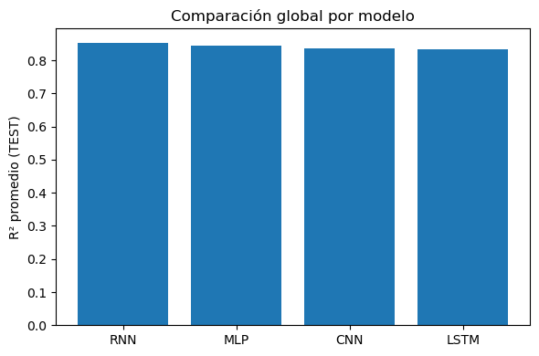
# --- Configuración ---
i = 10 # índice de la muestra a graficar
EXP_BACKTRANS = False # True si tus Y/preds están en log y quieres exponenciar
# --- Periodos a partir de los nombres en Sa_Crustal ---
periods = np.array([float(s.split('_')[1]) for s in Sa_Crustal], dtype=float)
# --- Asegurar Y_test como numpy 2D y obtener el espectro real de la muestra i ---
Y_te = np.asarray(y_test, dtype=float)
if Y_te.ndim == 1: Y_te = Y_te.reshape(-1, 1)
y_true_spec = Y_te[i]
# --- Predicciones de los 4 modelos ---
# MLP (denso)
y_pred_test_mlp = np.asarray(modelMLP.predict(X_test_feats))
if y_pred_test_mlp.ndim == 1: y_pred_test_mlp = y_pred_test_mlp.reshape(-1, 1)
# CNN
y_pred_test_cnn = np.asarray(modelCNN.predict(Xte_cnn))
if y_pred_test_cnn.ndim == 1: y_pred_test_cnn = y_pred_test_cnn.reshape(-1, 1)
# RNN (SimpleRNN)
y_pred_test_rnn = np.asarray(modelRNN.predict(Xte_rnn))
if y_pred_test_rnn.ndim == 1: y_pred_test_rnn = y_pred_test_rnn.reshape(-1, 1)
# LSTM
y_pred_test_lstm = np.asarray(modelLSTM.predict(Xte_rnn))
if y_pred_test_lstm.ndim == 1: y_pred_test_lstm = y_pred_test_lstm.reshape(-1, 1)
# --- Seleccionar la muestra i de cada predicción ---
preds = {
"MLP": y_pred_test_mlp[i],
"CNN": y_pred_test_cnn[i],
"RNN": y_pred_test_rnn[i],
"LSTM": y_pred_test_lstm[i],
}
# --- Back-transform opcional (si entrenaste en log(Sa)) ---
if EXP_BACKTRANS:
y_true_plot = np.exp(y_true_spec)
preds = {k: np.exp(v) for k, v in preds.items()}
else:
y_true_plot = y_true_spec
# --- Máscara de válidos según el real ---
mask = np.isfinite(y_true_plot)
T = periods[mask]
y_real = y_true_plot[mask]
preds_masked = {k: v[mask] for k, v in preds.items()}
# --- Plot ---
plt.figure(figsize=(8, 4.8))
plt.plot(T, np.exp(y_real), label="Real", linewidth=2)
linestyles = {"MLP":"--", "CNN":"-.", "RNN":":", "LSTM":"--"}
for name, yhat in preds_masked.items():
plt.plot(T, np.exp(yhat), linestyle=linestyles.get(name, "--"), linewidth=2, label=name)
# Escalas log si quieres (descomenta si aplica a tu caso)
plt.xscale("log"); plt.yscale("log")
plt.xlabel("Periodo T (s)")
plt.ylabel("Sa")
plt.title(f"Espectro real vs predicción de 4 modelos (muestra i={i})")
plt.grid(True, which="both", linestyle=":")
plt.legend()
plt.tight_layout()
plt.show()
48/48 [==============================] - 0s 1ms/step
48/48 [==============================] - 0s 2ms/step
48/48 [==============================] - 0s 6ms/step
48/48 [==============================] - 0s 4ms/step
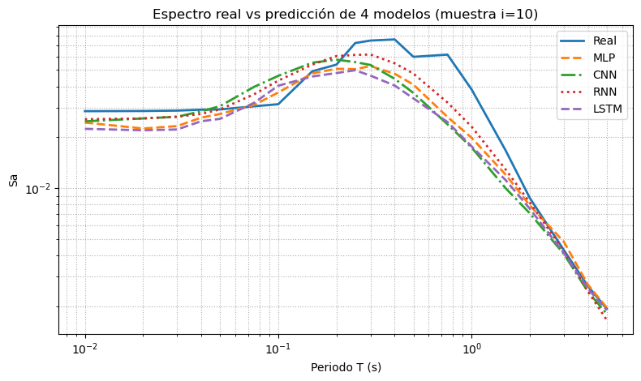
# ====== BLOQUE A: Helpers + importancias para MLP, CNN, RNN (SimpleRNN) y LSTM ======
import numpy as np
import pandas as pd
from sklearn.inspection import permutation_importance
# --- Nombres de features del ColumnTransformer (o genéricos) ---
try:
feature_out_names
except NameError:
feature_out_names = [f"f{i}" for i in range(X_test_feats.shape[1])]
# --- Datos base (test) ---
X_te = np.asarray(X_test_feats, dtype=float)
Y_te = np.asarray(y_test, dtype=float)
if Y_te.ndim == 1: Y_te = Y_te.reshape(-1, 1)
n_features = X_te.shape[1]
# (Opcional) submuestra para acelerar
rng = np.random.default_rng(42)
idx_sub = rng.choice(len(X_te), size=min(300, len(X_te)), replace=False)
X_te_sub = X_te[idx_sub]
Y_te_sub = Y_te[idx_sub]
# --- Wrapper para que sklearn llame predict(X2D) con modelos Keras de distintas formas ---
class KerasSingleOutput:
def __init__(self, model, col_j, kind, n_features):
self.model = model
self.col_j = col_j
self.kind = kind
self.n_features = n_features
def fit(self, X, y=None):
return self
def predict(self, X):
X = np.asarray(X, dtype=float)
if self.kind in ("cnn", "rnn", "lstm"):
X = X.reshape((-1, self.n_features, 1))
yhat = self.model.predict(X, verbose=0)
if yhat.ndim == 1:
return yhat
return yhat[:, self.col_j]
def permutation_importance_multioutput(model, kind, X, Y, n_repeats=5, seed=42):
n_features = X.shape[1]
n_outputs = Y.shape[1]
importances = np.full((n_features, n_outputs), np.nan)
for j in range(n_outputs):
mask = np.isfinite(Y[:, j])
if mask.sum() < 10:
continue
est = KerasSingleOutput(model, j, kind, n_features)
r = permutation_importance(
estimator=est, X=X[mask], y=Y[mask, j],
scoring="r2", n_repeats=n_repeats, random_state=seed
)
importances[:, j] = r.importances_mean
imp_mean = np.nanmean(importances, axis=1)
imp_std = np.nanstd(importances, axis=1)
return (
pd.DataFrame({
"feature": feature_out_names,
"importance_mean": imp_mean,
"importance_std": imp_std,
"n_outputs_used": np.sum(~np.isnan(importances), axis=1),
})
.sort_values("importance_mean", ascending=False)
.reset_index(drop=True)
)
# --- (Opcional) agrupar dummies OHE a su columna original para interpretación ---
def group_ohe(df_imp, prefixes=("Soil_Class", "origen")):
out, used = [], set()
for f, m, s in df_imp[["feature","importance_mean","importance_std"]].values:
if any(f.startswith(p) for p in prefixes):
base = f.split("=")[0] if "=" in f else f.split("_")[0]
if base in used:
continue
mask = df_imp["feature"].str.startswith(base)
out.append({
"feature": base,
"importance_mean": df_imp.loc[mask,"importance_mean"].sum(),
"importance_std": (df_imp.loc[mask,"importance_std"]**2).sum()**0.5
})
used.add(base)
else:
out.append({"feature": f, "importance_mean": m, "importance_std": s})
return (
pd.DataFrame(out)
.sort_values("importance_mean", ascending=False)
.reset_index(drop=True)
)
# --- Calcula importancias (Permutation) para TODOS los modelos que tengas en memoria ---
# Si ya tienes df_pi_* calculados, se respetan; si no, se crean aquí.
if 'df_pi_mlp' not in globals(): df_pi_mlp = permutation_importance_multioutput(modelMLP, "mlp", X_te_sub, Y_te_sub, n_repeats=5)
if 'df_pi_cnn' not in globals(): df_pi_cnn = permutation_importance_multioutput(modelCNN, "cnn", X_te_sub, Y_te_sub, n_repeats=5)
if 'df_pi_rnn' not in globals(): df_pi_rnn = permutation_importance_multioutput(modelRNN, "rnn", X_te_sub, Y_te_sub, n_repeats=5)
if 'df_pi_lstm' not in globals(): df_pi_lstm = permutation_importance_multioutput(modelLSTM, "lstm", X_te_sub, Y_te_sub, n_repeats=5)
# --- Versiones agrupadas (más legibles) ---
df_pi_mlp_g = group_ohe(df_pi_mlp)
df_pi_cnn_g = group_ohe(df_pi_cnn)
df_pi_rnn_g = group_ohe(df_pi_rnn)
df_pi_lstm_g = group_ohe(df_pi_lstm)
# ====== BLOQUE B: Unificar + pivot para barras agrupadas ======
models_raw = [
("MLP", df_pi_mlp_g.copy()),
("CNN", df_pi_cnn_g.copy()),
("RNN", df_pi_rnn_g.copy()),
("LSTM", df_pi_lstm_g.copy()),
]
models_norm = []
for name, df in models_raw:
df = df.rename(columns={"importance_mean":"importance"})
df["model"] = name
models_norm.append(df[["feature","importance","model"]])
df_imp_all = pd.concat(models_norm, ignore_index=True)
# Top-k por modelo y unión
top_k = 15
top_union = set()
for m in df_imp_all['model'].unique():
top_union |= set(
df_imp_all[df_imp_all['model']==m]
.sort_values('importance', ascending=False)
.head(top_k)['feature']
.tolist()
)
features_plot = sorted(top_union)
# Pivot (feature x modelo)
df_pivot = (
df_imp_all[df_imp_all['feature'].isin(features_plot)]
.pivot_table(index='feature', columns='model', values='importance', aggfunc='mean')
.fillna(0.0)
)
# Orden por promedio sobre modelos
order = df_pivot.mean(axis=1).sort_values(ascending=False).index
df_pivot = df_pivot.loc[order]
df_pivot.head()
| model | CNN | LSTM | MLP | RNN |
|---|---|---|---|---|
| feature | ||||
| f0 | 1.306842 | 1.285573 | 1.469246 | 1.378201 |
| f1 | 1.012289 | 0.944740 | 1.109801 | 0.975894 |
| f5 | 0.031964 | 0.173937 | 0.047291 | 0.016236 |
| f6 | 0.014797 | 0.171729 | 0.045417 | 0.018401 |
| f2 | 0.053503 | 0.043832 | 0.071346 | 0.081478 |
# ====== BLOQUE C: Barras agrupadas (vertical) y alternativa horizontal ======
import matplotlib.pyplot as plt
import numpy as np
features = df_pivot.index.tolist()
models = df_pivot.columns.tolist()
x = np.arange(len(features))
w = 0.8 / max(1, len(models))
plt.figure(figsize=(max(10, len(features)*0.55), 6))
for k, m in enumerate(models):
vals = df_pivot[m].values
plt.bar(x + (k - (len(models)-1)/2)*w, vals, width=w, label=m)
plt.xticks(x, features, rotation=45, ha='right')
plt.ylabel("Permutation importance (ΔR² medio)")
plt.title(f"Importancia de variables por modelo (Top {len(features)})")
plt.legend(ncols=min(len(models), 4))
plt.tight_layout()
plt.show()
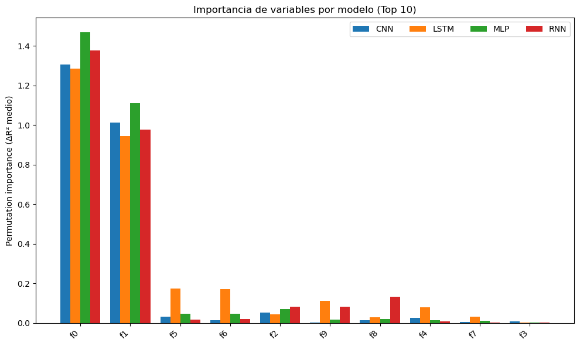
# Horizontal
plt.figure(figsize=(8, max(6, len(features)*0.45)))
y = np.arange(len(features))
for k, m in enumerate(models):
vals = df_pivot[m].values
plt.barh(y + (k - (len(models)-1)/2)*w, vals, height=w, label=m)
plt.yticks(y, features)
plt.xlabel("Permutation importance (ΔR² medio)")
plt.title(f"Importancia de variables por modelo (Top {len(features)})")
plt.legend()
plt.tight_layout()
plt.show()
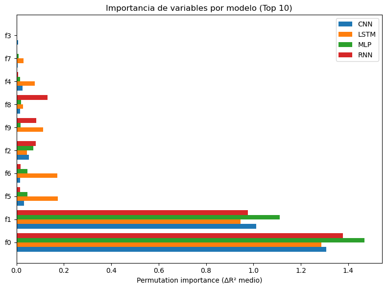
f0 = Magnitude
f1 = Rrup_OpenQuake
f2 = Hypocenter Depth
f3,f4,f5,f6,f7 = Soil_Class 1-5
f8 = origen =Colombia
f9 = origen =NGAW2
# === 1) Definir el vector crudo y convertirlo al formato del preprocesador ===
# Orden esperado:
# ['Magnitude','Rrup_OpenQuake','Hypocenter Depth (km)','Soil_Class','origen']
x_raw = [4.5, np.log(20), 10, 2, 'Colombia']
feature_names = ['Magnitude','Rrup_OpenQuake','Hypocenter Depth (km)','Soil_Class','origen']
num_features = ['Magnitude','Rrup_OpenQuake','Hypocenter Depth (km)']
cat_features = ['Soil_Class','origen']
# DataFrame con tipos correctos: numéricas como float, categóricas como str
X_new_df = pd.DataFrame([dict(zip(feature_names, x_raw))])
for c in num_features: X_new_df[c] = pd.to_numeric(X_new_df[c], errors='coerce')
for c in cat_features: X_new_df[c] = X_new_df[c].astype(str)
# === 2) Transformar con tu ColumnTransformer ya entrenado (pre) ===
x_feat = pre.transform(X_new_df).astype("float32") # (1, n_features)
n_features = x_feat.shape[1]
# === 3) Prepara las entradas para cada arquitectura ===
x_cnn = x_feat.reshape(1, n_features, 1) # Conv1D
x_rnn = x_feat.reshape(1, n_features, 1) # RNN / LSTM
# === 4) Predicciones de los 4 modelos (solo si existen en memoria) ===
preds = {}
if 'modelMLP' in globals(): # MLP denso
y_mlp = np.asarray(modelMLP.predict(x_feat, verbose=0)).reshape(-1)
preds['MLP'] = y_mlp
if 'modelCNN' in globals():
y_cnn = np.asarray(modelCNN.predict(x_cnn, verbose=0)).reshape(-1)
preds['CNN'] = y_cnn
if 'modelRNN' in globals():
y_rnn = np.asarray(modelRNN.predict(x_rnn, verbose=0)).reshape(-1)
preds['RNN'] = y_rnn
if 'modelLSTM' in globals():
y_lstm = np.asarray(modelLSTM.predict(x_rnn, verbose=0)).reshape(-1)
preds['LSTM'] = y_lstm
# === 5) Periodos (a partir de tu lista Sa_Crustal) ===
# Sa_Crustal debe ser la lista de columnas de la salida en el mismo orden del modelo
periods = np.array([float(s.split('_')[1]) for s in Sa_Crustal], dtype=float)
# === 6) (Opcional) Back-transform si entrenaste en log(Sa) ===
EXP_BACKTRANS = False # pon True si tus modelos predicen log(Sa)
if EXP_BACKTRANS:
preds = {k: np.exp(v) for k,v in preds.items()}
# === 7) Plot: espectros de los 4 modelos con las mismas condiciones ===
plt.figure(figsize=(8, 4.8))
# Si tienes el espectro "real" para comparar (y_true_spec), puedes añadirlo aquí:
# plt.plot(periods, y_true_spec, label="Real", linewidth=2)
for name, yhat in preds.items():
plt.plot(periods, np.exp(yhat), linewidth=2, label=name)
# Escalas log si lo prefieres:
plt.xscale("log"); plt.yscale("log")
plt.xlabel("Periodo T (s)")
plt.ylabel("Sa (predicho)")
plt.title(f"Predicción de espectro para x={x_raw}")
plt.grid(True, which="both", linestyle=":")
plt.legend()
plt.tight_layout()
plt.show()
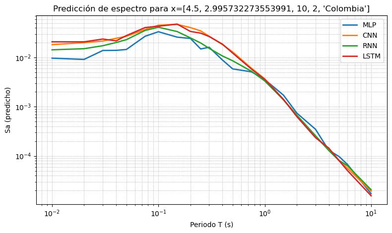
# ---------- 1) Define dos escenarios ----------
# Orden: ['Magnitude','Rrup_OpenQuake','Hypocenter Depth (km)','Soil_Class','origen']
x1 = [7.5, np.log(20), 10, 2, 'NGAW2']
x2 = [7.5, np.log(20), 10, 2, 'Colombia']
x3 = [6.5, np.log(20), 10, 2, 'Colombia']
x4 = [5.5, np.log(20), 10, 2, 'Colombia']
x5 = [4.5, np.log(20), 10, 2, 'Colombia']
feature_names = ['Magnitude','Rrup_OpenQuake','Hypocenter Depth (km)','Soil_Class','origen']
num_features = ['Magnitude','Rrup_OpenQuake','Hypocenter Depth (km)']
cat_features = ['Soil_Class','origen']
X_new = pd.DataFrame([dict(zip(feature_names, x1)),
dict(zip(feature_names, x2)),
dict(zip(feature_names, x3)),
dict(zip(feature_names, x4)),
dict(zip(feature_names, x5))
])
# Tipos correctos
for c in num_features: X_new[c] = pd.to_numeric(X_new[c], errors='coerce')
for c in cat_features: X_new[c] = X_new[c].astype(str)
# ---------- 2) Preprocesar con tu ColumnTransformer ya entrenado ----------
X_feat = pre.transform(X_new).astype("float32") # (2, n_features)
n_features = X_feat.shape[1]
# LSTM espera (batch, timesteps, features)
X_lstm = X_feat.reshape((-1, n_features, 1))
# ---------- 3) Predecir con el LSTM ----------
y_pred = np.asarray(modelLSTM.predict(X_lstm, verbose=0)) # (2, nT)
# (Opcional) si el modelo fue entrenado en log(Sa):
"""EXP_BACKTRANS = False
if EXP_BACKTRANS:
y_pred = np.exp(y_pred)
"""
# ---------- 4) Periodos desde tu lista Sa_Crustal ----------
periods = np.array([float(s.split('_')[1]) for s in Sa_Crustal], dtype=float)
# ---------- 5) Graficar ----------
plt.figure(figsize=(8, 4.8))
plt.plot(periods, np.exp(y_pred[0]), linewidth=2, label=f"LSTM: {x1}")
plt.plot(periods, np.exp(y_pred[1]), linewidth=2, linestyle="--", label=f"LSTM: {x2}")
plt.plot(periods, np.exp(y_pred[2]), linewidth=2, linestyle="--", label=f"LSTM: {x3}")
plt.plot(periods, np.exp(y_pred[3]), linewidth=2, linestyle="--", label=f"LSTM: {x4}")
plt.plot(periods, np.exp(y_pred[4]), linewidth=2, linestyle="--", label=f"LSTM: {x5}")
# Si trabajas en escala log:
plt.xscale("log"); plt.yscale("log")
plt.xlabel("Periodo T (s)")
plt.ylabel("Sa (predicho)")
plt.title("Comparación de espectros predichos — LSTM (dos escenarios)")
plt.grid(True, which="both", linestyle=":")
plt.legend()
plt.tight_layout()
plt.show()
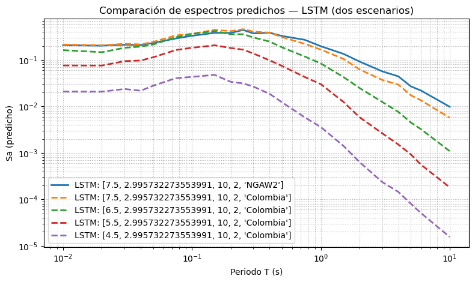
# --- Escenarios (ya definidos arriba: x1..x5) ---
feature_names = ['Magnitude','Rrup_OpenQuake','Hypocenter Depth (km)','Soil_Class','origen']
num_features = ['Magnitude','Rrup_OpenQuake','Hypocenter Depth (km)']
cat_features = ['Soil_Class','origen']
X_new = pd.DataFrame([dict(zip(feature_names, x1)),
dict(zip(feature_names, x2)),
dict(zip(feature_names, x3)),
dict(zip(feature_names, x4)),
dict(zip(feature_names, x5))])
for c in num_features: X_new[c] = pd.to_numeric(X_new[c], errors='coerce')
for c in cat_features: X_new[c] = X_new[c].astype(str)
X_feat = pre.transform(X_new).astype("float32") # (5, n_features)
y_pred = np.asarray(modelMLP.predict(X_feat, verbose=0)) # (5, nT)
periods = np.array([float(s.split('_')[1]) for s in Sa_Crustal], dtype=float)
plt.figure(figsize=(8, 4.8))
plt.plot(periods, np.exp(y_pred[0]), linewidth=2, label=f"MLP: {x1}")
plt.plot(periods, np.exp(y_pred[1]), linewidth=2, linestyle="--", label=f"MLP: {x2}")
plt.plot(periods, np.exp(y_pred[2]), linewidth=2, linestyle="--", label=f"MLP: {x3}")
plt.plot(periods, np.exp(y_pred[3]), linewidth=2, linestyle="--", label=f"MLP: {x4}")
plt.plot(periods, np.exp(y_pred[4]), linewidth=2, linestyle="--", label=f"MLP: {x5}")
plt.xscale("log"); plt.yscale("log")
plt.xlabel("Periodo T (s)")
plt.ylabel("Sa (predicho)")
plt.title("Comparación de espectros predichos — MLP (5 escenarios)")
plt.grid(True, which="both", linestyle=":")
plt.legend()
plt.tight_layout()
plt.show()
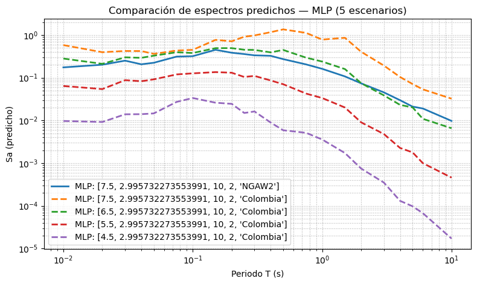
# --- Escenarios (ya definidos arriba: x1..x5) ---
feature_names = ['Magnitude','Rrup_OpenQuake','Hypocenter Depth (km)','Soil_Class','origen']
num_features = ['Magnitude','Rrup_OpenQuake','Hypocenter Depth (km)']
cat_features = ['Soil_Class','origen']
X_new = pd.DataFrame([dict(zip(feature_names, x1)),
dict(zip(feature_names, x2)),
dict(zip(feature_names, x3)),
dict(zip(feature_names, x4)),
dict(zip(feature_names, x5))])
for c in num_features: X_new[c] = pd.to_numeric(X_new[c], errors='coerce')
for c in cat_features: X_new[c] = X_new[c].astype(str)
X_feat = pre.transform(X_new).astype("float32") # (5, n_features)
n_features = X_feat.shape[1]
X_cnn = X_feat.reshape((-1, n_features, 1)) # (5, n_features, 1)
y_pred = np.asarray(modelCNN.predict(X_cnn, verbose=0)) # (5, nT)
periods = np.array([float(s.split('_')[1]) for s in Sa_Crustal], dtype=float)
plt.figure(figsize=(8, 4.8))
plt.plot(periods, np.exp(y_pred[0]), linewidth=2, label=f"CNN: {x1}")
plt.plot(periods, np.exp(y_pred[1]), linewidth=2, linestyle="--", label=f"CNN: {x2}")
plt.plot(periods, np.exp(y_pred[2]), linewidth=2, linestyle="--", label=f"CNN: {x3}")
plt.plot(periods, np.exp(y_pred[3]), linewidth=2, linestyle="--", label=f"CNN: {x4}")
plt.plot(periods, np.exp(y_pred[4]), linewidth=2, linestyle="--", label=f"CNN: {x5}")
plt.xscale("log"); plt.yscale("log")
plt.xlabel("Periodo T (s)")
plt.ylabel("Sa (predicho)")
plt.title("Comparación de espectros predichos — CNN (5 escenarios)")
plt.grid(True, which="both", linestyle=":")
plt.legend()
plt.tight_layout()
plt.show()
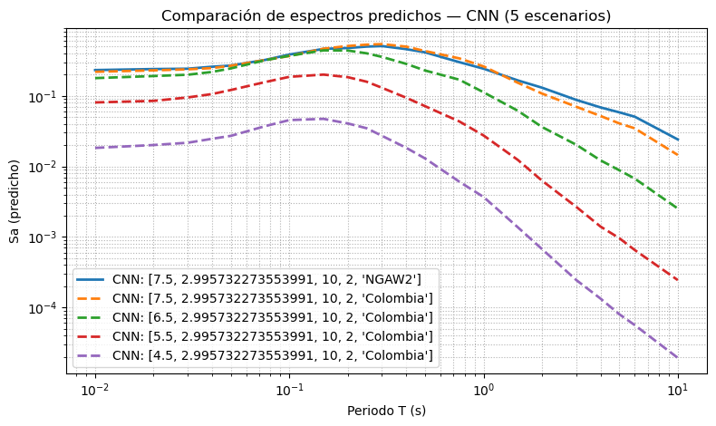
Modelo original planteado#
Idealmente se quiere que:
Mejoren las métricas.
Se siga extrapolando.
Se pueda enfocar mas en la información colombiana.
Entre las opciones para encontrar un modelo, sea adaptando función de pérdida, combinando arquitecturas, estrategias de entrenamientos o mecanismos dentro de los modelos, se encuentran como posibilidades:
Pre-Train global (Fine tune dirigido): el modelo aprende primero con el NGA West2 y luego se hace un fine tunning con el subset colombiano usando pérdidas que eviten olvidar lo aprendido globalmente. En sismología, por ejemplo, hay estudios donde entrenan un modelo general con datos de muchas regiones y luego lo refinan localmente.
LSTM con mecanismo de atención reforzado por dominio (Region-Aware Attention): Una red LSTM que usa un mecanismo de atención controlada por el dominio. LSTM+atención reforzada por origen servirá para darle mas peso a Colombia.
Mixture of Experts con compuerta “region-aware” : Usando 2 o 3 expertos, un gating le daría pesos a las predicciones hechas con el dataset colombiano y otro peso a las hechas con el ngawest2.
Híbridos físico-informados (GMPEs + residual con atención o PI-ResNet): Partirá desde la física que ya se conoce (usando un modelo empírico base) para luego dándole mas peso a la información colombiana, incluir predicciones de redes residuales con la introducción de penalizaciones por violar tendencias físicas.
Red neuronal (cualquiera) con soft Physics Guided: Usar una red neuronal de cualquier naturaleza (la mas conveniente), y adaptar la función de pérdida con predicciones hechas al conjunto completo usando modelos empiricos construidos anteriormente. En su mejor caso, para darle la importancia a Colombia, sería añadir el error con el modelo NoSAm para que pueda aprender y ajustar sobre esas predicciones.
Entre todas las opciones se verificará primero el uso de “LSTM con mecanismo de atención reforzado por dominio”
Adelanto para comparación con modelos empíricos construidos anteriormente. (No terminado)#
from NoSAm_GMMs_2024 import *
# OpenQuake Controls
from openquake.hazardlib import const, contexts, gsim, imt
from openquake.hazardlib.imt import PGV, PGA, SA, RSD575, RSD595, IA, CAV
from openquake.hazardlib.contexts import RuptureContext, SitesContext, DistancesContext
from openquake.hazardlib.gsim.abrahamson_2014 import AbrahamsonEtAl2014 as ASK14
periodos1 = [float(item.split('_')[1]) for item in Sa_Crustal]
nosam = []
for t in periodos1:
val = NoSAm_Crustal_2023(t, 4.5, rup, soil, 'average', zhypo, 0)
nosam.append(val)
p1 = []
for i in range(len(nosam)):
p1.append(nosam[i][0])
nosam = []
for t in periodos1:
val = NoSAm_Crustal_2023(t, 5.5, rup, soil, 'average', zhypo, 0)
nosam.append(val)
p2 = []
for i in range(len(nosam)):
p2.append(nosam[i][0])
nosam = []
for t in periodos1:
val = NoSAm_Crustal_2023(t, 6.5, rup, soil, 'average', zhypo, 0)
nosam.append(val)
p3 = []
for i in range(len(nosam)):
p3.append(nosam[i][0])
nosam = []
for t in periodos1:
val = NoSAm_Crustal_2023(t, 7.5, rup, soil, 'average', zhypo, 0)
nosam.append(val)
p4 = []
for i in range(len(nosam)):
p4.append(nosam[i][0])
p=[p1, p2, p3, p4]
def calculate_z1pt0(vs30):
'''
Reads an array of vs30 values (in m/s) and
returns the depth to the 1.0 km/s velocity horizon (in m)
Ref: Chiou & Youngs (2014) California model
:param vs30: the shear wave velocity (in m/s) at a depth of 30m
'''
c1 = 571 ** 4.
c2 = 1360.0 ** 4.
return np.exp((-7.15 / 4.0) * np.log((vs30 ** 4. + c1) / (c2 + c1)))
def calculate_z2pt5_ngaw2(vs30):
'''
Reads an array of vs30 values (in m/s) and
returns the depth to the 2.5 km/s velocity horizon (in km)
Ref: Campbell, K.W. & Bozorgnia, Y., 2014.
'NGA-West2 ground motion model for the average horizontal components of
PGA, PGV, and 5pct damped linear acceleration response spectra.'
Earthquake Spectra, 30(3), pp.1087–1114.
:param vs30: the shear wave velocity (in m/s) at a depth of 30 m
'''
c1 = 7.089
c2 = -1.144
z2pt5 = np.exp(c1 + np.log(vs30) * c2)
return z2pt5
def estimate_width_ASK14(dip, mag):
"""
Estimate the fault rupture width using the ASK14 model.
This is based on the NGA-West 2 GMM implementation.
Parameters
----------
dip : array-like
Dip angle of the fault in degrees. Should be a 1D array or Series of floats.
mag : array-like
Magnitude of the earthquake. Should be a 1D array or Series of floats.
Returns
-------
np.ndarray
Estimated rupture width for each (dip, mag) pair.
"""
return np.minimum(18 / np.sin(np.radians(dip)), 10 ** (-1.75 + 0.45 * mag))
def ASK14_GMM_test(Periods_pSA, Mag, Rrup, Zhypo, Vs30_Val,
dip = 90.0, rake = -15.03):
pSA_IMs_OQ = [SA(el) for el in Periods_pSA]
rup_ctx = RuptureContext()
rup_ctx.mag = Mag
rup_ctx.width = estimate_width_ASK14(dip, Mag)
rup_ctx.ztor = 0.0
rup_ctx.hypo_depth = Zhypo
rup_ctx.rake = rake
rup_ctx.dip = dip
site_ctx = SitesContext()
site_ctx.vs30 = Vs30_Val
site_ctx.vs30measured = False
site_ctx.z1pt0 = calculate_z1pt0(Vs30_Val)
site_ctx.z2pt5 = calculate_z2pt5_ngaw2(Vs30_Val)
site_ctx.sids = [0]
site_ctx.backarc = False
dist_ctx = DistancesContext()
dist_ctx.rhypo = Rrup
dist_ctx.rrup = Rrup
dist_ctx.rjb = Rrup
dist_ctx.repi = Rrup
dist_ctx.rx = 0.0
dist_ctx.ry0 = 0.0
mean_ASK14 = []
sigma_ASK14 = []
for IM_int in pSA_IMs_OQ:
mean, sigma = ASK14().get_mean_and_stddevs(site_ctx, rup_ctx, dist_ctx, imt = IM_int, stddev_types=['Total'])
print(f"IM: {IM_int}, Mean: {mean}, Sigma: {sigma}")
mean_ASK14.append(np.exp(mean[0]))
sigma_ASK14.append(sigma[0])
return mean_ASK14, sigma_ASK14
Mw_list = [4.5, 5.5, 6.5, 7.5]
if soil == 1:
Vs30_Val = 1600
elif soil == 2:
Vs30_Val = 800
elif soil == 3:
Vs30_Val = 450
elif soil == 4:
Vs30_Val = 250
elif soil == 5:
Vs30_Val = 100
pred_mat = []
for Mw in [4.5, 5.5, 6.5, 7.5]:
Sa_mu_sigma = ASK14_GMM_test(
x_periodos,
Mag = Mw,
Rrup = rup,
Zhypo = zhypo,
Vs30_Val = Vs30_Val
)
Sa_mu = Sa_mu_sigma[0]
pred_mat.append(Sa_mu)
pred_mat = np.vstack(pred_mat)
x_periodos = [float(col.split('_')[1]) for col in Sa_Crustal]
labels = ['Mw 4.5', 'Mw 5.5', 'Mw 6.5', 'Mw 7.5']
Mw_centros = [4.5, 5.5, 6.5, 7.5]
colors = ['red', 'orange', 'blue', 'black']
color_media = 'forestgreen' # Media BD
color_ask14 = 'purple' # Curva ASK14 / pred_mat
fig, axes = plt.subplots(2, 2, figsize=(14, 10), sharex=True, sharey=False)
for i, Mw0 in enumerate(Mw_centros):
row, col = divmod(i, 2)
ax = axes[row][col]
# 1) Tu modelo por periodo
ax.plot(x_periodos, Y_pred[i],
label='Individual model', color=colors[i],
marker='o', linewidth=2)
# 2) GMM de referencia
ax.plot(x_periodos, p[i],
label='GMM', color=colors[i],
linestyle='--', marker='x', linewidth=2)
# 3) Media de la base de datos filtrada
mask_mw = dfmedias['Magnitude'].between(Mw0-0.5, Mw0+0.5)
df_panel = dfmedias.loc[mask_mw]
if len(df_panel):
mean_Sa = df_panel[Sa_Crustal].mean(skipna=True).values
ax.plot(x_periodos, mean_Sa,
label=f'Mean DB (n={len(df_panel)})',
color=color_media, linestyle=':', marker='s', linewidth=2)
# 4) Predicción ASK14
ax.plot(x_periodos, pred_mat[i],
label='ASK14', color=color_ask14,
linestyle='-.', marker='^', linewidth=2)
# 5) Decoración
ax.set_title(labels[i])
ax.set_xscale('log'); ax.set_yscale('log')
ax.grid(True, which='both', linestyle='--', linewidth=0.5)
ax.set_xlabel('Periodo (s)'); ax.set_ylabel('Sa (g)')
ax.legend(fontsize=8)
plt.suptitle(f' Soil={soil} | Rrup={rup}±20 km | Z={zhypo}±10 km',
fontsize=16)
plt.tight_layout(rect=[0, 0, 1, 0.96])
plt.show()